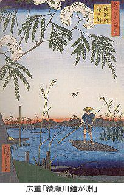
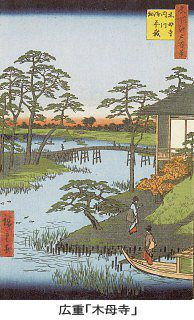
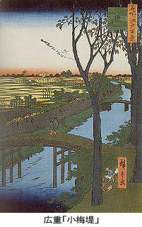

| 考証 江戸の面影三 | |
| 稲垣史生 | |
| (2015) | |
［「すみだ２号」の舷に寄りて］
ＪＲ浜松町駅のそば、世界貿易センタービルの屋上には展望台がある。そこに展開する、東京港と隅田川を眼下に見る壮観はあまり知られていない。爽秋の一日、私はその展望台に立ち、取材のためこれから行く隅田川を俯瞰して正直なところ感動した。
眼の限り東京港が広がっている。地上百五十二メートルの上空から、それは鮮かな幾何学模様を織り、港と、工場と、橋と、それから大小の船舶をくっきり浮かび上がらせていた。
芝浦に向かい合うのが月島・晴海埠頭、続いて豊洲の岸壁が東京湾内へ伸び、先方は越中島・葛西の辺りが霞んでいる。眼を返せば、竹芝桟橋に並び、日の出桟橋・芝浦桟橋が浮かんでいる。東京港だ。その広さは中央区に匹敵し、まさに横浜港と並んで日本の表玄関の名に恥じない。
かつて太平洋戦争の敗色濃き日、陥落寸前のサイパン島から手造りの船で脱出して来た数人の水兵がいた。私は海軍報道部にいたので、各社の記者と取材に出向いたのが月島だったような気がする。水兵は手帳に書かれた上官の命令書を、大切そうに内ポケットから出して見せ、逃亡でないことを訴えていた。戦争のためそこは埋め立てが中断し、荒涼としたコンクリートと雑草の浜だったし、何より水兵が乗って来たお粗末な船が哀れで忘れられない。
今その東京港は近代設備の粋を集め、都内へ流入する貨物一億トンのうち、ざっと三分の一がこの港から陸揚げされるという。小麦・大豆・砂糖・肉類など、一日も欠かせぬ品々がここから私たちの家庭へもたらされる。その種類は何と十万種に上るという。
だが、今、思い出話などやめよう。その月島と芝浦の間に、悠揚と東京湾へ注ぐ隅田川がある。
この川が公の文書に現れるのは、遠い平安初期の承和二年（八三五）六月の太政官符においてである。その文面では、従来、渡船二艘のところ、貢調の運搬に不足だから二艘増加せよというものである。その渡し場は多分今の浅草橋場辺りで、武蔵・下総間はもちろん、奥州街道の始発点にも当たっていた。例の在原業平がこの地を過ぎ、『伊勢物語』に描いたのはなお六十年も後のことだ。「遠くも来にけるものかな」と感慨にふけるのを、渡守に、
「早や船に乗れ、日も暮れぬ」
と促されて対岸へ渡るが、「あたりの景色もの淋しくて、船こぞりて泣きぬ」とある。ざっと千年前の隅田川である。それが、今や茫漠の彼方から流れ来って、ビルと喧噪の中に悠然と横たわる。この川には永い歴史がある。詩がある。それはロンドンのテムズ川、パリのセーヌ川にも匹敵する、美観と、詩と、そして存在意義をもつ。これから書こうとするのはこの川の東岸の人と風俗だが、人間を歴史的背景なしには描くことはできない。歌や舞台で知る隅田川と、近代化された隅田川の、驚異的変化をまずこの眼で見て確かめねばならない。私は貿易センタービルを降り、海側へ真っすぐ芝浦のビル街を歩いた。直線の道路と並木、それに恩賜公園まであって、すっかり港の風景ができあがっている。
竹芝桟橋へ出た。
岸壁のベンチで待つほどもなく、水上バスともいえぬ大型の遊覧船が着いた。浅草から来た人、晴海の国際見本市へ行く人、必ずしも観光客ばかりではなくて込み合った。が、それもわずかの間のこと、すぐ浅草行きの船が来て私は乗り込んだ。
隅田川はもっと上流、三股辺りが河口といわれるが、実質的にはこの辺りがそれであろう。月島の豊海町がすぐ眼の前にあり、水は流れるともなく、漂うでもなく、渺茫と品川沖に続いている。その海上には遠く、近く、大小の船が浮かび、そして走る。船に乗ってあっと驚くのは、月島も晴海も、また豊洲も越中島も、水面すれすれに浮かんでいることだ。一体、潮の干満はどうなっているのだろう？ これから目指す本所・深川も、ここからでは水面すれすれか、またはそれ以下に見える。林立するビルの裾まで、川はひたひたと迫っていた。
沈まないのだろうか。埠頭や大都会を支えているのは、鉄とコンクリートによる近代文明の、倣岸な物理的「力」のみではないか。嫌というほどそれを見せつけられた。むかしは隅田川八景といって、関屋落雁・潮入夕照・隅田川秋月・橋場夜雨・洲崎晩鐘・真乳晴風・駒形帰帆・富士暮雪の八カ所があった。今それらはどこへ行ったのだろう。
冷たい桟橋とビルの景観に、自然の割り込むすきまはまったくなさそうに見える。だが、『東京文学散歩』の野田宇太郎は、この河口で秋空の美観を、「金粉を散らしたような夕映え」とたたえ、同時にはるか濃紺の富士を見た感激を述べている。まだまだ探せばこの港、この都会にも、感動的な自然はいくらかある。かもめの飛翔、浜離宮のみどり、春には隅田堤の万朶の桜が望めよう。悲観することはない。
船は観光汽船会社の「すみだ２号」、全長二十二メートル、幅六・四メートル、ざっと百トンで二百人は乗れる。一階キャビン、二階に展望ロビーがあり、何より洒落ているのはその屋根が動くこと。ふだんは上げて展望台となっているが、橋をくぐるときぶつからぬよう、亀の子のように伏せる。また、案内嬢が下町っ子らしい、ぴちぴちした健康美人なのが何よりうれしい。
何時なりしかかの大川の遊船に
舞ひし女を思い出にけり
啄木の歌である。船も女もまるで違うが、この川筋を行けば、何かしら感傷の迫ってくるのはなぜだろう。
サヤサヤサヤ......舳先が水を割って進む。
［江戸湊から永代橋へ......］
右手に月島を見、左手に築地の魚河岸があった。魚河岸を川の側から見ると、房総辺りから来る船がすぐ市場の屋根の下まで漕ぎ寄せているのに驚く。当然の風景ながら、魚はマーケットのガラス棚にあるものとの観念しかなかったのが恥ずかしい。それは私の迂闊さというより、ここに住む人以外は誰しも気づかぬことではなかろうか。視点を変え、違った角度から物事を見ることの大切さを教えられる。
それと同じに、私は五十年ほど前に東京へ出て来たが、今まで本所・深川に住んだことはない。いわば他所者の眼しかもたないが、それだけにこの地の住人や、江戸好き人種とは違った角度から川向こうを見ることができるのではないか、と思う。江戸の研究書は汗牛充棟もただならずだ。が、私は新しい考証の眼で、丹念に、正確に、江戸の中の別世界を描こうと思う。他所者であることに、私は引け目を感じてはいない。
「まず前面に迫ってきたのは勝鬨橋でございます。その名は明治三十八年一月、旅順陥落を記念して......」
と船内放送が告げている。いうまでもなくその時は、川下の築地川から月島への渡し船に対して命名された。橋ではなくて舟渡しの名称だった。それが通船のため、橋桁が上へ開く跳開橋として架かったのは昭和十五年である。もちろん、渡しは廃されて、縁起のいい勝鬨の名は橋名として引き継がれた。以来、「開く橋」として親しまれてきたが、戦後、車の激増で開くことが稀になり、昭和四十四年、橋上の都電が廃されるとともに開閉用動力施設も取り払われた。動かなくなった橋上は、昼夜とも都心なみの激しい車の洪水にさらされている。
月島は昭和初期にできた人工島。江戸時代は最北端の佃島のみ、葦の中にぽつんと浮かんでいた。もちろん、勝鬨橋もない。したがって、隅田川の河口は西岸の御浜御殿から越中島までの広さとなり、この辺りは東京湾へ連なる広間な河口をなしていた。そして東西の両岸は低く、かえって水面の方が丸みを帯びて盛り上がるかと思われる。流れるでもなく、淀むでもないこの川と海の境界を、江戸時代にはひっくるめて「江戸湊」と呼んでいた。江戸の地図には「此所湊也」「諸国船入湊也」などの文字が見える。橋でいえば永代橋から新大橋・両国橋辺りまで、両岸でいえば西は小田原町・明石町・俗に鉄砲洲といった船松町・湊町・新堀大河端・浜町の一帯、一方、東岸では大島町・黒江町・相川町・佐賀町の一帯がそれに当たる。
以上は隅田川に臨む町々だが、その裏側の陸地には、日本橋川・築地川とその枝川、東岸では仙台堀川・小名木川・竪川とその枝川を、さらに縦横に結ぶ堀割が網の目のように通じていた。港の街の特徴である。近隣の国々をはじめ、西国筋から大坂へ集められた貨物の大半は船で江戸湾へ入る。そして大船から艀へ移され、この堀割伝いに日本橋の商阜（貿易港）地へ直送された。また東岸では、堀割沿いの倉庫へいったん収められ、高値の時期を待って売り出される。だから隅田川沿岸のクリークで結ばれるところ、江戸百万市民を養う食糧庫・必需品蔵の集中地帯だった。
さて、すみだ２号はいま佃大橋を過ぎ、日本橋川とその枝川の一つの落ち口を過ぎようとしている。現在でいえば佃島の最北端、石川島播磨重工跡の都営マンションを右手に、新川・日本橋箱崎町を左手に見る隅田川の三股に出る。片方はいま来た築地・芝浦方面へ、片方は深川の岸を洗って豊洲・東雲の新しい埋め立て地方面へ流れる。この辺りから上流の中洲へかけ、江戸最高の月の名所であった。
金のある風流人や、文人墨客が競って船を浮かべた。中には似而非風流人もいて、濃化粧の怪しげな女が葦の中に舫っていた。
その風景も妖冶だが、佃島の北端を過ぎたところで相生橋の辺りへ眼をやると、かつては昼なおぞっとするものを水面に見た。
何と、不気味な卒塔婆の群れが、流れの中に揺れ動いているのだ。恨むがごとく、嘆き悲しむがごとく、ゆらゆら......といったらオーバーだろうか。おびただしい数である。水難によって死んだ人の死霊を慰めるための供養碑である。半ば朽ち、欠け、老人の歯のように黒く、そしてゆらゆら揺れる様が何とも不吉で、哀しい。今はもう廃れ、そんな菩提心もまた人々の胸から薄れた。ただ不気味な写真のみが、別世界のことのように残っている。
さて、いつか船は永代橋に差し掛かっている。
隅田川をさかのぼり、河口から千住大橋まで十九橋、このうち鉄道、道路の架橋の五を引くと、現在、陸上の車と人の併用橋は十四を数え、これを「隅田川十四橋」という。川下から勝鬨・佃・永代・清洲・新大橋・両国・蔵前・厩・駒形・吾妻・言問・桜橋・白鬚・千住大橋の諸橋である。各橋ともすべて鉄橋で、それぞれ意匠を凝らし、競い合うように偉観を呈している。これらの橋が隅田川の美観を、どんなに助けているか計り知れない。
ところでこの十四橋のうち、江戸時代からのものは永代・新大橋・両国・吾妻の四橋のみ、もちろん明治以前はすべて木橋。古いだけに話題が多く、川向こうに関係のある事件が多い。
永代橋は中央区新川一丁目から江東区永代一丁目に架かる。長さおよそ百十間、元禄十一年（一六九八）両国橋・新大橋についで江戸の両岸をつないだ。赤穂義士が本懐を遂げた後、この橋を通って泉岳寺へ引き揚げたことはよく知られている。
また、文化四年（一八〇七）、深川八幡の祭礼に、群衆の重みで橋が崩れ落ち、三百人の水死者を出した。一説には死傷千五百人ともいわれ、道路橋に対する大きな警鐘となった。
橋多き中に永代怨みられ
鉄橋になったのはずっと後、明治三十年（一八九七）のことである。日本で初めて鋼鉄材使用のトラス橋としてお目見えした。トラス橋とは橋桁をつるすもの、湾曲した壮大な鉄の弓は、男性的景観として市民を喜ばせた。だが、その外観に似ず、関東大震災には壊れ、より頑強な今の鉄橋に架け替えられている。
永き世の橋をゆきかふ諸人は
おのづからにや姿ゆたけき 田安宗武
［『両岸図絵』に見る新大橋まで］
江戸時代の隅田川を描いたものに、葛飾北斎の錦絵や『隅田川両岸一覧図絵』などがある。しかしその中で、リアルな筆のタッチと、船中から見た両岸の風景を、的確に描いた絵は『隅田川両岸一覧図絵』に勝るものはない。画家は鶴岡蘆水で、天明元年（一七八一）の両岸を写したものである。上下二巻から成り、上巻は浅草橋場の真崎稲荷から、下り船に乗った眼で西岸を描き永代橋に至る。それからが下巻だが、その永代橋で船をぐるりと回し、以後上り船となって川上へ向かう。何と気の利いたことに、今度は逆に東岸に向けた眼で沿岸風景を描いてゆく。
天明といえば江戸の黄金時代に近く、隅田川も詩歌に、遊覧に、もっとも華やいだ年代である。今からざっと二百年前だが、この絵と昭和の現状とを見比べながら私も川をさかのぼることにしよう。
まず、船を回していくらもさかのぼらぬのに、西岸に軒提燈も艶かしい料亭ばかりの一画が描かれている。文字で「中洲」と書き入れがあり、弦歌のさんざめきが二百年の歳月を越えて聞こえてきそう。水をおいて武家屋敷に田安殿とあるのは、御三卿田安家の下屋敷であった。
両者の間に広がる水は、隅田川に落ち込む日本橋川にほかならない。すなわち河口で隅田川に合流し、河が三股の形になるので洲ができる。古い『江戸切絵図』では、その洲に葦が茂っている様を描いたのもある。江戸が膨張するにつれ、その洲ももったいないとて埋め立て、びっしり料亭を建てたのが中洲である。「三股」は佃島から箱崎まで、広い範囲の河口をいうとも、また、この中洲辺りに限るともいう。が、いずれにせよ月の名所で、中洲の料亭も風流人で繁盛、諸藩の外交官たる江戸留守居役が、情報の交換を名目に集まって、料亭のスポンサーともヒモともつかぬ関係にあった。中洲は安永元年（一七七二）から寛政二年（一七九〇）まで十八年間、別天地の歓楽境として繁盛した。
が、ご多分に漏れず、果てはお定まりの売春である。そのため吉原の客足が落ちた。商売の恨みは恐ろしく、盛んに密告したので警吏が踏み込み、現場を押さえたのでいっぺんに寂れた。天保改革の老中、水野忠邦が出たこともあって、やがて中洲の料亭も水中卒塔婆のように消え失せたのである。今この辺り、中洲の名を残すだけで、田安殿は酒で有名な新川となり、背後の兜町は日本経済の心音が聞こえる証券取引所のあるところだ。
眼を転じて東岸を見よう。永代橋のすぐ上流、佐賀町へ切れ込んだ三本の堀割があり、堀割沿いに白壁の土蔵がずらりと並んでいるのが見える。堀割のとば口に近く、それぞれ橋が架かっていて、川下から下の橋・中の橋・上の橋という。いちばん川上の上の橋が架かるのは、仙台堀川という隅田川へ縦に落ち込む縦川の横綱である。他の堀割は埋められ橋もないが、上の橋だけは今も健在である。
仙台堀川のすぐそばに松平陸奥の下屋敷、ほとんど密着して霊雲院があり、すぐまた隅田川へ直角に、縦の関係で流れ込む縦川がある。やはり横綱クラスの小名木川だ。万年橋が架かっている。
この辺り、今は清澄一丁目といい、護岸用堤防が高く築かれている。それはコンクリートの味気ない壁だが、関東大震災級の災害にも耐えられる頑丈なものである。この一帯、隅田川より水面下のところが多く、ために高潮や増水のときは、隅田川の水が堀割へ流れ込むのを防がねばならない。だから堀割の分岐点に、頑丈な鉄の水門が設けられている。鉄筋コンクリートで枠を作り、上下する重い鉄扉をもつ。昼夜とも警戒するためか、水門の上には当直室らしいものが乗っている。
が、すみだ２号が快走するこの日和では、水門は開け放ちのままであり、のぞくと向こう側に小名木川が、同じ高さの水面で広々と広がっていた。では、むかしは？ 『一覧図絵』には水門らしきものがひとつも描かれていない。わずかに万年橋の傍らに、見張り小屋のようなものが見えるだけである。
その万年橋のそばには松平遠江の下屋敷、ほとんどその門前から石垣の橋脚となり、新大橋が対岸の武家地――今の浜町へ架かっていた。
新大橋は綱吉の母桂昌院が、江戸市民の不便を哀れみ、将軍に架橋を勧めて成ったという。長さおよそ百八間、元禄六年（一六九三）に完成、両国橋に次ぐ二番目の橋となった。近くに住む芭蕉の句に、
ありがたやいただいて踏むはしの霜
とある。破壊を防止するため他の三橋と同じに、次のような高札が橋詰に立てられた。
一、此橋の上において、昼夜にかぎらず往来の輩やすらうべからず。商人・物もらい等とどまり居るべからず。車の類一切引渡るべからず。もし相背く族は曲事たるべきもの也。
一、火事の時、橋の上滞りなく諸道具通すべきもの也。
一、此橋の上より船の内へつぶて一切打つべからず。もし相背く族あらば曲事たるべきもの也。
元禄の架橋から寛保（一七四一～四三）までに、二十二回も修理や架け替えが行われている。これでは費用倒れとあって、幕府では廃橋へ傾いたところ、聞きつけた東岸の市民が、死活問題として存続運動を起こした。やむなく幕府では、延享元年（一七四四）、町人持ちの橋ならと、管理及び経費負担を条件に架け替えを許した。
このとき以来、新大橋は有料になった。また、隅田川利用の船頭たちは、これを機会に橋脚の掃除を受け持ち、ごみの付着による腐敗から橋を守った。さらに橋のたもとに露天の床屋を置き、渡橋規則の違反者を見張らせると共に、災害時の混雑防止に備えた。幕府の態度は煮えきらぬものだったが、市民の高い代償で、どうやら木橋を明治の中ごろまで持ちこたえさせた。広重の『名所江戸百景』のうち、「大はしあたけの夕立」は木橋時代のこの橋をよく描き、世界的にも有名である。印象派の画家ゴッホが、油絵でほとんどそのままを模写している。あたけは幕府の船蔵に因む町名、ここに軍船安宅丸が収容されていたからである。
［日に三千両の両国橋へ］
すみだ２号は行く。新大橋を出はずれると、東岸にその御船蔵のずらりと並ぶ様が『隅田川両岸一覧図絵』に描かれている。船は岸から引き揚げて、陸上の蔵に格納されたようだ。安宅丸や天地丸など、主力艦は艪数二百挺、水夫四百人とあるので、そうとうの大船だったことが分かる。だから御船蔵も大きく、二階家の三軒はすっぽり入る規模に描かれている。
天と地を丸呑みにする御船蔵
御船蔵は安宅町――今の千歳町一丁目の大部分を占め、三町ほどの間に大小十四棟が建ち並んでいた。
その御船蔵の切れたところ、旧本所・深川を分ける竪川があり、それに架かる一つ目橋が『一覧図絵』にちゃんと描かれている。竪川はここから真っすぐ東へ伸び、旧中川に達している。川向こうの開発時に、これと直角に交わる大横川と共に掘削された本所・深川の大動脈だ。「竪川」「横川」の名称は、本来は江戸城から見て縦だから竪川、横だから横川と名づけたのだという。極めて分かりやすい。分岐点には大水門があり、ここでは別に水門監視所まで作られている。
その旧御船蔵のところで、ちょっと眼を西岸の日本橋側へ移そう。浜町河岸である。『一覧図絵』には一橋殿・佐竹殿などの下屋敷が描かれ、築地塀の内は武家屋敷らしい鬱蒼たる樹林、表門はぴったり閉じているので、川沿いの道は人通りもなく至って寂しい。人を殺しても、盗賊が跳梁しても分からない真っ暗な道だ。黙阿弥の代表作『三人吉三』の舞台大川端である。また、新派の『假名屋小梅」『明治一代女』の名舞台の浜町河岸でもある。どちらも凄艶無比、隅田川情緒の極致ということができよう。大川端とは吾妻橋下流の西岸全体をいうが、特に両国から新大橋をいう、と『地名大辞典』にある。それに当たる。
ところで今はどうか？ お嬢吉三が、
「月も朧ろに白魚の、篝もかすむ春の空......」
とうそぶいた辺り、高速道路が走り、分厚く、高い護岸壁が立ちはだかって情緒もへちまもあったものではない。ただ、そのコンクリートの壁の向こう側に、樹々の上部のみどりがこぼれ、浜町公園であることがやっと知れる。
「さて皆様の行く手に......」
と案内嬢の声が、行く手に両国橋の近づいたことを知らせている。
両国橋は隅田川で最も古い、最も繁華な川向こうへの動脈であった。その繁盛は「一日三千両」といわれた。すなわち朝の青物市で一千両、昼は橋詰の見世物で一千両、宵は宵の納涼で一千両、合わせて三千両というわけである。
橋は明暦の大火後、川向こう開発計画によって万治二年（一六五九）、御入用橋として架設された。当時、川向こうは下総国だったので、武蔵との両国を結ぶ意味で両国橋と名づけられた。長さ九十六間、橋脚の多い反り橋だった。
明暦の大火に西岸の住民が、火に追われてここへ集まった。しかし橋がないため死屍山をなした。火災後住民が幕府へ架橋を嘆願したものの、戦略上の理由から幕府は渋った。時に大老酒井忠勝は、呵々大笑して言い放った。
「天下の将軍は人を以って要害となす。今、その人が難渋するというのに、川流を以て城を守るなら、万一のばあい誰あって防戦しようか。王道は橋を架け、覇道は渡船をおくと」
この一言で架橋が決まったという。
橋の焼失を防ぐため、火災後の都市計画で両岸に火除けの空地を造った。といっても、空けておくのは無駄なので、すぐ取り壊しのきく小屋掛けの芸人などをおいた。西岸の空地にかくべつ人が集まり、たちまちそこは盛り場になった。幕府は地代を取らぬ代わりに、彼らに橋の防衛を義務づけた。もちろん、喜んで負担し、船番や水防人を置いて警戒した。それでも足りず二艘の鯨船を備え、いつも橋脚の掃除や破損の監視に当たった。
それでもなお江戸時代に、洪水による流失二度、焼け落ちること五度、破損による架け替え・大修理は十数度に上った。
橋上の眺めは壮大で、
両国で見れば富士まで屋根つづき
筑波山両国からの行きあたり
ちょっと下品だが次の句も賑わいをよく歌っている。
二三人両国橋に屁が絶えず
『一覧図絵』では橋の全体を描き、お城帰りの武士、旗本の隠居、庶民では商人・職人、しがない棒手振り、さては植木を二人がかりで担いでゆく植木職、相撲取りものしのしやって来るし、編笠の虚無僧も渡って来る。前帯の茶屋女、蛇の目のご新造と娘も連れだって橋を渡るところだ。大賑わいである。橋の中央にたたずめば、川柳のとおり東に筑波、西に富士が望まれた。
両国の花火は享保の飢饉に、さらにコロリが流行したとき、死者の慰霊と悪疫退散のため水神に奉納の花火を上げたのに始まる。人心の高揚と世直しの意味を兼ね、以来、五月二十八日の川開きから八月二十八日までの納涼期間に打ち上げられるようになった。
隅田川の納涼は、江戸市民のいちばん楽しい年中行事ということができた。堤の上や火除地には、絵草紙・風鈴・虫売りの夜店をはじめ、呼び方も愉快ないろいろな夜店が出た。水茶屋では軒提燈に灯を入れ、あだっぽい女が客を呼んだ。橋下には屋根船・猪牙船が、美妓を乗せ、管弦の音色も優雅に上下する。
川開きの日は、船宿や料亭が互いに花火の華麗を競い、流星・虎の尾・星下りなど仕掛け花火が打ち上げられた。ぱっと夜空にそれが開くごとに、見物人は、
「鍵屋ァー」
「玉屋ァー」
と芝居もどきの掛け声をかけた。花火屋の屋号である。いかにも江戸っ子らしい夕涼み風景であった。
なぜ両国の夕涼みが賑わったか？ 交通機関がないため山海への避暑ができず、他に納涼の方法がなかったこと、さらに川向こうには、寺社や名所が多かったからである。両国は浅草と共に、江戸下町のアミューズメントセンターであった。
［橋上の名作と橋下の垢離場］
両国橋での話題は何といっても、義士の一人大高源五の煤竹売りである。師走十三日は武家屋敷の煤払いなので、大高源五は笹売りに化けて吉良邸を探ろうと、両国橋を本所方面へ渡ろうとした。
ところがあいにく、俳諧の師宝井其角と橋上で出会い、
年の瀬や水の流れと人の身は
と詠み掛けられた。子葉を名乗る大高源五は、こんな時もすかさずあとをつけて、
あしたまたるるその宝船
と返したという。史実にはない講談ダネだが、いかにもありそうな美しい話である。
また、芝居で名高いのは「鋳かけ松」、本題『船打込橋間白浪』である。
堅物で通る鋳掛屋の松五郎、どんなに働いても暮らしは楽にならない。通りかかった両国橋で、ふと弦歌のさんざめきに下を見れば、船遊山の客が芸者を揚げて豪遊している。瞬間、松五郎の頭にひらめいたのは、惨めなおのれの暮らしである。金が金を生む世の中、働きもせず豪遊できる者と、あくせくして一生を終わる者と......。松五郎の心は揺れた。瞬間、口を衝いて出たのは、
「あれも一生、これも一生、こいつァ宗旨を変えざァなるめえ」
の名文句、俄然悪事を思い立ち、鋳掛道具を河へ放り込むところが見せ場になっている。盗賊になった松五郎は、悪事は働けど義理堅く、恩人に迷惑をかけたことで腹を切るという結末となる。両国橋が本物そっくりに見え、また、松五郎の頽廃心理が世相をよく映している。そのため幕府は社会的影響を恐れ、写実に過ぎないよう主役の市川小団次に注意した。芸に生きる小団次は、この干渉にショックを受け、以後、怏々として楽しまなかったが、やがて鬱症が昂じて世を去ったといわれる。
さてその両国橋の上を、今は高速６号線が走り、水底には総武線両国トンネルがくぐり抜けている。日本橋の頭上ほど圧迫感はないが、錦絵で見る隅田川情緒はもう探すべくもない。
すみだ２号はつぎつぎ橋を抜けて行く。
左手、日本橋側はすぐ神田川の落ち口で、いうまでもなく江戸時代からの花街柳橋だ。神田川沿いの両岸には、船宿が軒を並べて猪牙舟が舫っている。ここから船で隅田川をさかのぼり、山谷堀へ上って「土手八丁」を吉原へしけこむのが常識的なコースだった。客は景気づけに船宿でちょいときこし召し、やがてここに御輿を据えるようになると、需要あるところ芸者が発生した。また、船宿変じて料亭と化し、りっぱに花街ムードを作り上げた。明治になってその「柳橋芸者」は、フジヤマと共に世界的になり、多くの大物政治家が惚れて正妻に迎えたことで有名である。
ところで、ちょっと、その対岸、本所側へ眼を向けよう。今、高速道路の下、千代田会館がある辺りに、『一覧図絵』ではおびただしい数の棒杭が見える。「百本杭」だ。川がこの辺りで曲がるため、護岸用として打ったもの、百本はあながち誇張ではなかった。
杭による流れの澱みは、魚族のよい生息場所だったことはいうまでもない。しらうお・うなぎ・なまず・はぜ・くろだい・いな・ふな・はや・てながえびなど豊富だが、中でも紫鯉は長尺で見事なものがとれた。その紫鯉が群れをなして、悠々と百本杭の間を泳ぐさまは、想像するさえ爽快な別世界であった。もちろん絶好の釣り場である。味も有名な淀川鯉に勝り、必ず高級料亭の膳に乗った。其角の句にも、
鯉の義は山吹の瀬や知らぬ分
とある。名物の紫鯉を一名「山吹の鯉」ともいったのである。
さらに百本杭を有名にしたのは、何といっても黙阿弥の「十六夜清心」であろう。
本題は『小袖曾我薊色縫』。本当は鎌倉の事件だが、舞台を両国に借りて少しも矛盾を感じさせない。二人は労りつ、労られつつ闇の夜をこの辺へたどり着くが、十六夜が清心の子を孕み、どうにもならぬ前途を悲観して二人は入水する。が、清心は死にきれず、両国橋に近い百本杭にすがりついて助かる。浄瑠璃の文句にも、
「行く空も薄墨流す雨雲に、鐘は沈めど清心は、なまじ覚えし水心、死ぬに死なれず波除の百本杭に縋りつき......」
とある。清心は無意識に杭につかまったが、見れば川上の梅見船では飲めや歌えの大騒ぎ、清心は松五郎同様、
「こいつはめったに死なれない」
と、太く短く世を渡る決心をする。そして見事泥棒に変身、鬼薊清吉と名乗って江戸を荒らしまわる。
一方、十六夜も下流で俳講師白蓮の船に助けられ、結局その妾となる。そして清心は死んだと思い、菩提を弔ううち生きている清心に出会う。驚き、喜びながらも、いったん悪の道に落ちた二人は立ち直れず、そろって白蓮をゆすりに行く。その白蓮が実は大盗大寺正兵衛で、しかも清心の兄だったことが分かる。くどすぎるその筋立ては、現代人の感覚に合わぬのだが、震い付きたいような色悪の世界を喜ぶ人もいる。
まさかその百本杭が、護岸堤防の完備した今も、同じところに残っているとは誰が思えよう。だが、驚いた。それが、あった！ わずか数本だが、今もすみだ２号の舷から確かに見えるではないか。
この「百本杭」の名は、また、江戸民間信仰のメッカのようにも思われていた。東岸の橋詰から段々があり、下りた辺りの川底には一面に小石が敷かれていた。百本杭で水勢が殺がれ、底には滑り止めの小石があるのだから、隅田の清流で水垢離をとるには理想的な道具立てであった。相州大山の大山信仰の信者が、すっ裸になって流れに身を沈めた。
「さんげさんげ、ろっこんざいしょう......」
と声高に夢中で唱え、俗信独特のエクスタシーに落ちている。夏はもちろん、寒中でも水の冷たさを忘れて信心に浸りきった。
「さんげさんげ六根罪障、おしめにはったい、こんごう童子、大山大聖不動明王、石尊大権現、大天狗小天狗......」
と俗信の対象を並べて利生を祈るのだ。祈りながら水を浴び、身を清めるのだが、「七日の千垢離」といって一度に千回、都合七千回川水を浴びるのだ。お百度を踏むのと同じに、本来はいちいち川を出たり入ったりしなければならぬのだが、省略してただ身を屈めて立ちさえすれば一回祈ったことになる。その数を正確に計るため、藁の銭緡を持っていて一回ごとに川へ流す。その銭緡が流れの中で、ずんずん流れれば大願成就、澱んで流れないと不吉だと信じられた。
大合唱の「さんげさんげ」は慚愧懺悔の読み違い。「おしめにはったい」は大峰八大の誤りだが、訳も分からず夢中で唱えるところに信者の階層を知ることができる。熊さんや八つぁん、それに長屋のおかん婆さんといった、学がない代わりに屈託のない連中ばかりである。それが集団で、時には伝馬船に乗って来て、盛んに「さんげさんげ」をやった。
相州大山寺は江戸から十八里、真言宗高野山に属し、本尊は不動明王で石尊大権現を祀り、大天狗・小天狗の社もあること合唱の言葉通り。毎月六、七日のみ信者の参詣を許したが、それには七日間の水垢離を条件とした。さてこそ、わいわいと、ホテルのプールなみの込みようとなった。『一覧図絵』にはやや下流に描かれている。柳句にもある。
相模まで聞えるほどに垢離を取り
［御米蔵、御竹蔵跡を行く］
船は百本杭を後にさかのぼる。すると西岸は柳橋から蔵前一丁目へと変わり、東岸は両国から横網一丁目となる。蔵前といえば幕府の米蔵を考え、横網はかつての漁夫町を連想する。
その通りだ。『隅田川両岸一覧図絵』を見れば、西岸は頑丈な石垣続きで、その間に八カ所の船入りの凹みが作られている。まるで今の桟橋のように、米を積んだ船が横づけになり、背後の米蔵へ収納したのである。遠くは出羽の酒田港から、幕府領の米を積んで日本海側を回り、下関から瀬戸内海に入り、大坂を経て江戸に来る驚異的な「西廻り船」もあった。上乗りという責任者は、この御米蔵の岸壁へ着いて初めてホッとしたという。
御米蔵に蓄えられた米は、小旗本や御家人の扶持米に当てられた。彼らは勘定所発行の米券を持参、蔵前通りに面した引換所で米の現物に換えた。一度に取りに来ては混雑するので、おいおい蔵前の茶店に米券を預けて受け取り方を頼んで帰るようになった。茶店のあるじは、すいたとき米を引き取り、他のお客の分と紛れないよう、依頼主の名札を米俵に差しておいた。すなわち「札差」の始まりである。
その請託はやがて商売となり、米券を担保に旗本・御家人に金融をするようになった。武家の貧窮に付け込んで、やたら利子を引き上げ大金持ちになった。江戸中期以後、金力で封建の背骨――身分制度を揺すぶったのはこの札差であった。その点、蔵前は今も大金の動く問屋街としてむかしの面影をとどめている。また、米蔵自身の跡には蔵前工高・蔵前中、蔵前警察や地方貯金局があるが、少し前までは何よりなじみ深い蔵前国技館の屋根が、でーんと腰を据えていた。
寒風の初場所日和つづきけり 万太郎
眼を東岸へ移そう。『両岸一覧図絵』では両国橋を出はずれると、すぐ武家屋敷が続き松平志摩や松浦豊後の文字の書き込みがある。武家屋敷はずっと大川橋、すなわち吾妻橋までびっしりだが、ただ一カ所、松前伊豆と松平伯耆守の屋敷の間に堀割があり、その奥深く大量の竹が立てかけてあるのがのぞき見られる。疑いもなく幕府の御竹蔵で、公用の竹材をすべてここに貯蔵したのである。武家屋敷の裏側に、ほとんど同じ面積の竹蔵があったのだ。
今その辺りは旧安田庭園と、隣接する横網町公園で占められている。安田庭園は元禄年間（一六八八～一七〇三）、丹後宮津藩主の本庄氏が造ったもの、隅田川の水を引いた潮入りの回遊式庭園である。明治には旧岡山藩主池田侯の邸となり、さらに財閥安田善次郎に買収された。が、大正十一年その遺志で、当時の東京市に寄付された。今は一般公開され、園内に両国公会堂もある。
また、横網町公園は明治に陸軍被服廠となり、カーキ色の軍服を作っていたが、大正十一年になって東京市が陸軍省から四十三万円で買い取った。そして着々と公園建設の準備を進めていた。運命なるかな翌十二年九月一日、突然襲った関東大震災に、誰しも避難場所として被服廠跡がピンと来て、家財を荷車に積んで押し寄せたのが惨劇の原因となった。地震による火は竜巻となって襲いかかり、家財道具を焼いて避難者もろとも天空に巻き上げた。この地の犠牲者は三万八千人といわれる。東京都慰霊堂には一帯の焼死者も併せ葬り、五万八千体の遺骨が納められている。唐破風の向拝の後ろに、高い基壇上に三重の塔を建て、塔上にインド風のデザインの相輪が光る。さらに園内には復興記念館があるが、詳しくは陸上へ上がってから述べることにしよう。とにかく慰霊塔はすみだ２号の舷からも、川向こうの一異観として望まれる。
さて、旧御米蔵・御竹蔵を過ぎれば、もう両岸とも目立った建物はない。東岸は三好町・黒船町・諏訪町など町地、西岸は内藤・最上・阿部など諸大名の名が見えるが、下屋敷だからほとんど目立たない。わずかに吾妻橋近く、西岸に駒形堂、東岸には多田薬師の屋根が光るのみであった。
駒形堂から北三百メートルが浅草寺、真っすぐ雷門に通じる街筋を並木町といい、朱塗りの門も五重の塔も、壮大な入母屋造りの本堂も、もうすぐそこに望まれる。ああ、行く手に吾妻橋が見えてきた。
吾妻橋すぐそばの竹町から、駒形堂近くの材木町へ渡し船が出ていた。竹町の渡しといい、よく利用された渡しであった。
吾妻橋へかかる前に、ここでちょっと隅田川全体の渡し船について述べておかねばならない。
隅田川に四橋しかない江戸時代、不足の分を何で補ったか？ いうまでもなく渡し船である。大回りして橋を渡らなくても、渡し船によって鼻唄をうたいながら対岸へ渡れる。ふつう知られるもので十五渡し、一時的なものを入れると十八渡し、明治以後のものを入れると二十一渡しとなる。
やはり河口から上流へ順に拾うと次の通り。沿岸の地名と景観は、船中から見てすでになじみである。
一 勝鬨の渡し（築地波除稲荷～月島）
二 月島の渡し（明石橋下～月島）
三 佃の渡し（湊三丁目～佃神社前）
四 中洲の渡し（中洲～仙台堀）
五 浜町の渡し（浜町河岸～竪川）
六 富士見の渡し（御蔵堀～横網）
七 御厩河岸の渡し（石原町～蔵前二丁目）
八 駒形の渡し（多田薬師前～駒形堂）
九 竹町の渡し（竹町～材木町）
竹町の渡しでも『一覧図絵』では、東岸の竹町に船頭小屋が描かれており、予備の船が二艘波除けの泊まり地に入っている。そして他の一艘が川を横切り、今しも東岸の船着き場に近づきつつある。船着き場は渚から、石の段々で路上へ上るようにできている。
一方、西岸では材木が整然と並ぶ材木町へ、ここでも渡し船が着岸しようとする絵柄となっている。乗客は六人、岸で船待ちをする客も一人描かれている。渡し場ではふつう予備の船が二艘、稼動中の船が一艘だった。が、竹町の渡しは一名「花形の渡し」といわれたほどだから、稼動の渡し船がそれだけ多かったのであろう。
繁盛しただけに大きな事故があった。宝永二年（一七〇五）三月十五日、この渡し船が転覆、四十人の水死者を出した。危険防止のため一回に十人、荷のある時は八人以上乗せなかった。四十人もの死者が出たのは、花形の渡しだけによほど人員過剰だったのである。渡し船の転覆はこのあと明和六年（一七六九）三月四日の佃の渡し、天保九年（一八三八）の厩河岸の渡しと二度もあった。いずれも乗せ過ぎが原因のため、渡し船の経営者はいちはやく逃亡した。
さてこの竹町から、さらに上流の渡しには次の六カ所が数えられる。
十 山の宿の渡し（花川戸～枕橋）
十一 竹屋の渡し（山谷堀入口～三囲神社）
十二 寺島の渡し（地蔵坂～浅草今戸）
十三 橋場の渡し（小松島～浅草橋場）
十四 水神の渡し（水神～真崎稲荷前）
十五 汐入の渡し（南千住汐入～牛田薬師前）
二ケ国の橋に不足の渡し守
の句がある。
［隅田川の船の種類と吾妻橋］
隅田川の景観の中で、今ひとつ書き落としてきたのは上下する船の種類である。『隅田川両岸一覧図絵』を見ると、河口には河口らしい大船が、三股辺りには遊覧用の屋根船が描かれている。そして柳橋の船宿からは、吉原への猪牙舟も走っている。大正十五年版『深川区史』によると、隅田川の荷船は左の六種類に分かれるという。
第一は形の扁平な伝馬船、主として荒荷や糞尿を運んだ。堀割伝いに日本橋や神田の商家、内堀の辰の口まで漕ぎ上り、本丸大奥の糞尿まで集めに行った葛西船がこれである。
第二に船底の平たい高瀬船、竪川から中川を経、利根川を利用して塩・薪炭を運んだのはこの船である。
第三にずんぐりした達磨船は、積載量は多いが自力での帆走には弱かった。したがって曳航船に曳かれることが多い。他に胴の太い団平船は、扱いにくいので船頭に嫌われ、また、鯊釣りや蜆、蛤取りには形のよい荷足船が使われた。さらに勝浦辺りから来る帆船は、五大力船といって近海通いの大物である。河口にはさらに檜垣船、樽廻船が、帆を下ろして舫っていたことはいうまでもない。
さて、いつか吾妻橋が頭上へ来ている。
ザザザザザ......。
すみだ２号が舳を曲げ、私はこの小さな水上遊覧の旅を終えようとしていた。両岸の景観の送り迎えに気をとられて、もう来たかという感じである。最後に吾妻橋についても概要を述べておきたい。
吾妻橋は安永三年（一七七四）、江戸時代四橋のうち最も遅く架設された。長さ八十四間、幅三間半、既存の新大橋・永代橋さえ廃橋になりかけたあとだけに、吾妻橋は初めから出願による民営であった。発起人は浅草花川戸の家主伊右衛門と下谷竜泉寺の家主源八の二人。町の繁栄を図るため、どうしてもここに橋が欲しかった。両国橋の架橋から隔たること百十五年、それでも幕府から軍事上いい顔はされず、民営と安全確保を条件にやっと許可を得た。
特に安全確保の中に、隅田川のいちばん上流の橋なので、もし増水や人出のため流失し、下流の橋を壊すことがあれば弁償せよというのである。両国橋を壊したときは修理費の三分の二、程度によっては半額の負担を義務づけられた。
このほか、幕府に願って架橋したので、冥加金の名の税金五十両を払わねばならない。度々の修理費と橋税のため、いうまでもなく通行人から橋銭を取り、船稼ぎの者には橋脚保護の作業を課した。それでも不平をいう者もなく、天明三年（一七八三）の大洪水のときも、やや損害は受けたが守り抜いた。皮肉にも両国・永代の両橋に落橋事件があり、多数の死者を出したのに、川上で水勢の強いはずの吾妻橋の方が、厳しい条件ゆえに終始無事故で終わっている。
当時の架橋にはそうとう高度の技術が使われ、世界の水準を抜いていたといわれる。例えば両岸絶壁にして、橋杭を立てることのできない場合の猿橋や、石積みの橋脚を持つ石造拱橋も室町時代にすでに出現していた。吾妻橋は反りの浅い木造だけに、当時の工法から見れば容易な架橋だったに違いない。しかもなお幕府が架橋に際し、厳しい条件をつけたのは、川上の橋だけに、落橋による流木のため下流の橋が流されることに対する警戒からであった。
皮肉なことにその予測がはずれ、吾妻橋がびくともしなかったのは、住民の郷土愛による橋だったからだ。その橋によって土地が栄える、どうしても守り抜かねばならぬという、共同の防護意識がこの結果をもたらしたのである。下町気質の根源である。
橋の名の変遷からもそのことがいえる。はじめこの橋は「大川橋」と名づけられ、「吾妻橋」というのは俗称だった。しかし俗称の方がしっくりとし、民営にぴったりだったので、ふつう吾妻橋で通した。正式名となったのは、昭和八年鉄橋に架け替えられた時だが、当然のことゆえ誰ひとり注意をひかれなかったのでも分かる。
よき名なる吾妻かもひそひそに
雨になまめき濡れて通るも 今井邦子
すみだ２号は舳で大きく円を書き、静かに観光汽船会社の吾妻橋船着場に横づけになった。
［隅田川沿いの名所］
さて、吾妻橋ですみだ２号と別れ、川向こうへ渡って旧称の本所・深川へ足を向けるとしよう。花の頃なら対岸の墨堤伝いに行くところ、記述の都合でいきなり向島の北部へ車を飛ばそう。もちろん、散策のつもりなら浅草松屋から、東武伊勢崎線で鐘ヶ淵へ出るのがよい。その方が向島を縦断して、特異な土地柄を高架線の上からゆっくりと見ることができるので......。
今から七、八千年前の縄文時代、関東の野は東京湾の深い湾入によってほとんどを占められていた。北西方の秩父・相模高地、それに房総の台地を残してすべて海であった。本所・深川どころか、東京全体が魚類の住みかといってよい。
が、考古学上の縄文時代は、地質学の区分では沖積世と一致し、河川による海の埋め立て作用が始まっていた。東京湾では北から古利根川・渡良瀬川・太日川（江戸川）・荒川、その末の隅田川や中川などが入り組み、もつれ合い、その運ぶ土砂の堆積や沖合からの藻屑の吹き付けでそれは前進した。河は川床を変えつつ、次第に陸地を形成していった。それには永い年代を要した。が、地震のため、海底が隆起するなど、突然の変動も度々あったに違いない。一千年前の想像図でさえ、なお香澄流海（霞ヶ浦）、香取海、印波浦（印旛沼）、鳥羽ノ淡海（小貝川）など、沼ともつかず川ともつかぬ古名でその複雑な生成模様を織りなしている。
これら河川のうち最大なるは、何といっても利根川と荒川であろう。北西山地の水を集め、自らが育み、形成した平原を悠々と流れ下る。が、天候の激変で、一度ふたつの川が氾濫すると、まだ形成過程にあった河口はたちまち泥濘の海となった。人を流し、草木を薙ぎ倒した。水が引いてもなお葦原で、作物を得るまでに永い歳月と労力を要した。古来、この氾濫とどう戦い、流路をどう変えるかが住民の歴史そのものであった。
向島は現在墨田区の北部である。江戸から見れば隅田川の向こうに、島のように浮かんでいたのでこの名が起こったのであろう。その名称からも海湾の埋もれゆく様が想像される。が、今この眼でそれを確かめられるのは、向島の北端、綾瀬川が荒川から分かれ、隅田川に注ぐ三角地帯である。かつて荒川の末が隅田川で、秩父山系の水を集めて江戸を縦断していた。ところが明治四十年（一九〇七）の洪水で、浅草・本所・深川の六〇パーセントが浸水するという大被害を出した。
このとき人々は、水量に対して、河口の流れが釣り合わぬためだと考えた。東京を守るため、どうしても放水路により水勢をそらす必要があった。そこで並行して流れる中川へ水を落とす計画も立てたが、ふたたび四十三年に大洪水があり、根本的に治水観念を変え、大規模な掘削工事に切り替え、二十年の歳月をかけて造ったのが今の荒川放水路である。
「この先は堀切橋、渡りますかね？」
と運転席から聞かれた。堀切の菖蒲園が近く、そこへ来た客と思われたのは当然である。
「いや、橋手前の多聞寺へ行きたいのだがね」
地図を見せたがピンと来ず、いったん車は荒川土手へ出た。川幅二百五十間（約四五五メートル）、清澄な水が静かに流れている。放水路だから船影はなく、広い河川敷にも人はいない。寂然としてこれでも東京都内かと驚くばかり、対岸の菖蒲園の辺りへ、長々と堀切橋が伸びていた。
なるほど驚くべき工事だ。第二次の治水計画では、荒川をこの辺りで二分して、上流は幅二百二十間から二百五十間に掘り、下流ともなれば二百五十間から三百間幅の運河を新しく掘ろうというものだ。埼玉県の川口付近から、深川の新木場に至る全長六里（約二四キロ）の運河を通すのである。途中、中川と出合い、並び流れて共に東京湾に落ちる。隅田川よりはるかに広く、ゆったりとした河川敷を取って、どんな増水にもびくともしない設計であった。
工事は第二次水害の後、東京市の手に負えずとして、当時の内務省が乗り出し、明治四十四年に始められた。何しろ河川敷は千百町歩、新掘削の下流はなるべく人家を避けたものの、それでも隅田町をはじめ、若宮・木下・善左衛門村など多くの古来の町村が水底に没した。
工事は予定よりはるかに遅れ、大正を飛び越えて昭和五年、ようやく二十年ぶりに完成した。その間、大正十二年に関東大地震があり、隅田河畔では被服廠跡の惨事など目も当てられぬ大災害を受けた。が、だいぶ工事の進んだ放水路縁へ避難して、助かった人も多かったのである。
では、隅田川と荒川とは別物か？ あながちそうともいえず、上流の北区岩淵町でつながっている兄弟川と見倣すことができようか。その分岐点に岩淵水門があり、絶えずここで水量を調節している。
そうだ。タクシーが多聞寺を探しあぐねたのも無理はない。土手下は家並みが押せ押せだが、道路がここだけ奇妙に曲がりくねっている。その曲線は奇異というしかなく、曲がった道路にまた曲がりくねった路地がついている。のぞいてみるとそれに沿い、また曲がったなりにうまく二階家が建ち並んでいた。
畦道の名残りなのだ。向島にも何度も都市計画が実施された。その度に真っすぐな道路がつけられ、便利になり、美しくなった。が、過疎地にその必要はなく、ずっと後々まで畦道のまま残ったのである。本所では開発時の都市計画地区と、その手の及ばなかった旧農村地区が、道路の直曲にはっきり浮かび出ていて興味深い。が、それは北から南への、この叙述の途中で述べるとしよう。
［隅田村の多聞寺と綾瀬川］
突然、眼の前に多聞寺が現れた！ 曲がった道路の奥に隠れていた。
何と、多聞寺の山門は切妻造り茅葺きの四足門で、享保三年（一七一八）、焼失後に再建され、そのまま今日に至ったものである。これは珍しい。東京ではもとより見たことはないし、川越の名刹喜多院の山門は、寛永（一六二四～四四）の建築だが瓦葺きである。地方都市が皆東京にまね、マーケットとガソリンスタンドばかり目立つこのごろ、もうすぐ茅葺き屋根は見られなくなろう。
隅田山多聞寺は新義真言宗で毘沙門天を祀る。慶長十一年（一六〇六）の建立で開山は実円法印、本尊の毘沙門天は弘法大師の作と伝えられる。
が、当山の縁起では創建を遠く天徳二年（九五八）にさかのぼり、はじめ隅田堤外にあったのが、十一代住職鑁海のときこの地へ移ったとする。それまで不動明王を本尊としていたが、移転後間もなく毘沙門天に代わった。その変更事情につき、鑁海がある夜の夢に不動明王の出現するのを見た。そのとき夢に不動様いわく。この地の守護を明日から毘沙門天に代わるぞよ、と。不思議なこともあるものと首をかしげていると、あくる日、旅の老翁が山門のところで荷を下ろして一息入れているのを見た。どうされた？ と聞くと、老翁は、
「自分は讃岐国の百姓だが、年久しく我家に安置したこの尊像が、或る夜、夢枕に立って東国の衆生済度にでかけるぞと告げられた。そこでかくは背負って歩く者じゃが、ここまで来ると急に荷が重くなって......」
と尊像を背から下ろして見せた。なるほど一尺二寸ほどの毘沙門天だが、ずっしりと巌のように重い。
「ふしぎなこともあるものでござる。実は拙僧も......」
と、鑁海も夢のことを語り、本堂へ行ってみると不動明王の本尊は消え失せていた。そこではるばる運ばれて来た毘沙門天を本尊にしたという。が、フィクションである。よくある夢告伝説のうちでも、平凡で、きわめて物語性にも乏しい。とはいえ、山号も隅田なる隅田村の古寺に、いかにもふさわしい素朴なストーリーではなかろうか。
山門を入る。すると左手に、「狸塚」と彫った自然石の碑がある。かつてこの辺りに狸夫婦が住んでいたが、いたずら好きで毘沙門天の怒りに触れて死んだとも、住職に難問を吹っかけては困らせたのを、毘沙門天門下の善尼子童子が見兼ね、知力で退治したともいわれる。これまたこの地が隅田村だった当時の、森と洞穴の風景を思わせる伝説ではなかろうか。実際、明治十一年の『東京全図』には、綾瀬川と荒川放水路に挟まれたところ、森と田んぼに囲まれた多聞寺が書き込まれている。
曲がりくねった畦道の名残り、茅葺きの山門、そして狸伝説まで、都心からわずか三十分のところに、「江戸初期」が現存するのは素晴らしい。もうここだけであろう。
さてこの多聞寺の北方、荒川放水路と隅田川を結ぶのが綾瀬川である。かつて綾瀬川は足立区の綾瀬から、小菅を通ったすえ現在地で隅田川へ合していた。荒川放水路ができると中断され、今はわずか七、八百メートルの頭なき尻っ尾なき運河同様の河となり、頭上に首都６号線がグワーンと呻っている。
が、江戸時代は奥武蔵野の水を集め、えんえんと流れ下って隅田川に落ちていた。沿岸には合歓の花が美しく、秋は虫聞きの名所として知られていた。
合歓咲いて稀に綾瀬に江戸の舟
虫聞きは闇に綾瀬をたどり行き
その落ち口は三角州になり、渚に葦が生え、水が澱む。隅田川河口の中洲と同じに、明治の地図にはみどりの葦むらを思わせる土砂の堆積が描かれている。まぎれやすいがこの一帯もまた三股といった。
ほの見えしうすくれなゐの一むらは
綾瀬の岸のねぶの花かも 加藤千蔭
［隅田川御殿と稲富家の悲劇］
この綾瀬川の合流点で、隅田川は今も鉤の手に曲がって南流する。その対岸は荒川区側が南千住、足立区側が千住曙町だ。江戸の地図には前者が「田」、後者は「柳原新田」とのみ書かれた寂しい江戸の郊外であった。安政（一八五四～六〇）の地図にしてなおこの通り、江戸初期の綾瀬川では、合歓や虫聞きどころではない荒蕪の地だった。向島側の突端、今、鐘ヶ淵中学があるところに将軍の狩猟時の休息所があった。『御徒方日記』に次の通りある。
「寛永二十年三月九日、隅田川にて御膳上る。それより向島御茶屋へ御成り云々」
まだ両国橋も架かっていないから、将軍は御用船を出して向島へ渡った。そして持参の弁当を、船中で食べたというのであろう。それから向島の御茶屋へ入ったというが、それが綾瀬川に臨む休息所であろう。規模も設備も不明だが、次の『正保図』では「隅田川御殿」となっている。ここに特別の建物を建て、必要人員が配されていたのであろう。
やはり寛永二十年（一六四三）の春、家光は牛島（向島一帯）へ鷹狩りに来て隅田川御殿へ立ち寄った。獲物があったと見え上機嫌で、茶を服したあと隅田堤を帰途についた。
時に渚に白雁の群がるのを見、お供頭に、
「あの雁、射とめよ」
と下命した。傍らにいたのは砲術家の井上外記正継と、同じく稲富喜大夫直賢の二人。「承る」と同時に答え、同時に弾丸を込めた。
人の気配に白雁は驚き、上空へ飛び上がったところで二人はまた同時に銃の引き金を引いた。
銃声が河畔にこだました。
が、発火したのは喜大夫の鉄砲だけで、外記のそれはあいにく不発に終わった。喜大夫の撃った白雁は虚空に舞ったあと、逆落としに田んぼの水にしぶきを上げた。
二発目を撃った。これも確かな手ごたえがあり、同じ田の面へ逆落としになった。
「みごとじゃ」
家光はたたえ、手ずから今落とした白雁を喜大夫に与えた。喜大夫の面目これに過ぐるはない。
その分、井上外記の顔がつぶれた。上命があったとき発火しなくては、戦場で物の用に立たぬではないか。
その上まずいことに、双方砲術の家柄といえども、外記の方が年嵩であり、はるかに戦歴も目覚ましかった。先代は秀忠将軍に仕え、大坂の陣ではさかんに敵を砲撃、戦功により五百石の旗本に取り立てられた。寛永十二年（一六三五）、鉄砲百挺を作って献上、また大砲を改造して射撃距離を十二町から二十町に伸ばしてもいる。三年後に鉄砲役を拝命、与力五騎・同心二十人を預けられた。同時に五百石の加増があり、このとき一千石の高級旗本であった。
これに対して喜大夫の稲富家は、かつて丹後の忌木城主だったが、戦国の時流に乗り切れず浪人したのを、父の代に秀忠に拾われて大坂の陣に出た。砲術のたしなみがあったので、城内に大砲を撃ち込んで功績があり、六百五十石の旗本に取り立てられた。喜大夫直賢は元和九年（一六二三）、父の跡を継ぎ、鉄砲方として同心十人を支配していた。実戦の経験はない。
おかしなことになった。年齢も五十代の古兵が、まだ三十いくつの若者にしてやられた。口惜しい。外記ははるかに先輩だから、喜大夫の方が発射を遠慮すべきではないか。銃を自分のと取り換えても、外記に花を持たすべきではなかったか。外記は深く喜大夫を恨み、いつかは仕返しをと機会を待った。
隅田川の遊猟から三年目、正保三年（一六四六）九月重陽の日に、二人は殿中菊の間で顔が合った。ここは諸役支配クラスの詰席で、百人組番頭・槍奉行・旗奉行など揃っている。中に喜大夫が同席して、しきりに砲術自慢の最中だった。聞けば大砲の泣きどころは、重くて命中率が低いことだと、幕府の砲術をひとりで担っている口ぶりである。あの時の将軍の褒美に、驕りきった態度が老外記にはカチンときた。喜大夫が幔幕の標的を考案、これで練習したところ、一割方の命中率が三割にはね上がったと鼻をぴくつかせるのだ。外記は我慢がならない。
「それはおかしい」
と無意識に怒声が飛び出していた。
「幔幕の標的を撃つこと、井上流では父の代からいたしおるわ。また、大筒は重いのが弱点というが、何の、わしは南蛮銅を使って重量を一割まで減らしたぞ」
すぐ喜大夫が反撃してきた。
「しかし、重量を減じては弾丸が......」
「飛ぶとも、距離を四十町まで伸ばそうと、今その考案を急ぎおるわ！」
ここは殿中、満座の中で罵られては、喜大夫もいきり立たずにはいられなかった。まだまだ武士も血の気の多い時代だ。喜大夫は瞬間肩衣をはね、脇差の鯉口切って迫ろうとした。寛永五年（一六二八）、すでに殿中の刃傷事件があり、討ち手の豊島明重一族が断絶の憂き目をみている。一同あわてて喜大夫を押さえ、外記を別室へ押し込めてやっと事なきを得た。
が、後がある。このとき同席した小栗長右衛門政次、長坂丹波守信次が、殊のほか二人の不仲を心配し、何とか和解させようと思った。日を改めて長坂邸へ呼び、話し合いで打ち解けるように取り計った。が、外記は狩り場の口惜しさが忘れられず、喜大夫は殿中での屈辱が忘れられない。小栗・長坂が斡旋しても無駄のようにも思われた。
九月十三日、こんどは駿河台の小栗邸へ二人を呼び、酒宴のうちに心を和ませようとした。が、この時も二人は口をきかず、睨み合ったまま早や夜も更けてきた。てんで無駄なので散会することになったが、一度に帰しては危ないと長坂が気づき、玄関で余計な声を掛けた。
「喜大夫殿はしばしお残り頂きたい。外記殿はどうぞ......」
何の意図もない言葉だったが、外記にとっては疎外の言辞に聞こえた。お前は帰れ、こっちには話があるとの意味にも取れ、鬱屈したものが瞬間爆発した。振り向きざま長坂を二度刺し、驚き逃げる喜大夫にも一刀を浴びせた。怨念こもる凶刀に喜大夫は絶命、瞬間、小栗邸は騒然となったが、気骨ある老武士だけに外記はその場で立ち腹を切って果てた。
この事件のため両家は改易、あたら砲術の二家が潰れたが、思えば隅田川の遊猟が争いのきっかけであった。その問題の発砲の地点は、確実に今の鐘ヶ淵中学の辺りである。それなのに、首都高速の車洪水の向こうに、今はわずかに隅田川がちらついて見えるにすぎない。まこと月なみの感慨だが、白雁の群れなど想像することさえできない。
隅田川御殿は明暦三年（一六五七）と延宝二年（一六七四）に修復され、続いて貞享二年（一六八五）にも修理の記録があるので、大奥に惑溺がちの綱吉さえ時に気分転換に来たとみえる。が、ほどなく生類憐みの令を出すに至って、もう狩猟どころではなかった。隅田川御殿は憐みの令とともに廃絶したと見られている。
すみだ川つつみに立ちて舟まてば
水上とほく鳴くほととぎす 橘千蔭
［鐘ヶ淵伝説あれこれ考］
隅田川が綾瀬川を合わせる三股を、なぜ鐘ヶ淵というのだろうか？ もちろん、鐘がこの淵に沈んでいるという伝説による。しかも三股に近い浅草橋場の三カ寺が、それぞれこの沈鐘伝説の本家を主張していることでも有名だ。が、中で長昌寺説がいちばん強く、今もその由来を彫った銅鐘が残っている。
長昌寺（今戸）は日蓮宗で開山は日寂上人、もと浅草寺の住職だったが、弘安二年（一二七九）、日蓮の弟子日常と宗義を論じて敗れた。よって発奮して身延山に登り、宗祖に会って入門し名を日寂と改めた。間もなく江戸へ帰ったが、浅草寺へは入らず近くに庵を結んで厳しい修行のうちに示寂した。日増・日可という従僧がおり、師の遺志を継いで浅草橋場に精舎を建て、長昌寺と名づけたのが始めだという。その地は日寂・日常が宗論を戦わせた因縁の地で、二僧が座った扉型の芝生は本堂前に永く保存されていた。『江戸名所図会』にその絵がある。

鎌倉末期の元亨元年（一三二一）、隅田川一帯は大洪水に見舞われ、寺社、人家の流されるもの数を知らず、浅草橋の長昌寺も堂塔ことごとく流失した。このとき鐘も鐘楼ともども流され、ほど近い三股に沈んだという。以来ここを鐘ヶ淵というのだと『名所図会』に説明がある。
第二には亀戸の普門院説である。
普門院（亀戸）は新義真言宗の寺、大永二年（一五二二）、三股城主の千葉自胤が創建した。この城は隅田川三股に近いと推定されるが、千葉氏の祈願寺ゆえに初めは寺を城内に置いた。しかし何時代か、三股城は兵火にかかり全焼した。時に洪鐘一個も隅田川に沈没、よって鐘ヶ淵というと、これまた『名所図会』にある。
第三は長昌寺に隣接する保元寺（橋場）伝説。こっちは『江戸砂子校異』の鐘ヶ淵の項に、
「保元寺の鐘楼崩れて鐘此処へ沈みぬ。水至ってつめたく、晴れたる日には船より鐘見ゆ」
とある。保元寺は後に法源寺と名を変えた。
さて、以上の三説を信じると、鐘は三個三股の水底に眠っていることになる。が、そんなことがあっていいか。三股の合流点は川幅が広く、流れが複雑でいかにも深そうな河の相貌に見える。伝説・奇談の生まれそうな自然の条件が揃いすぎている。皆捨て難い。が、この種の伝説は相模の花水川にもあり、中国にさえ似た話がある。皆、地名の由来を語り、寺社では箔をつけるため、本家争いとなるのも共通の現象であった。
しかし、おかしい。長昌寺は三股に近いとはいえ、橋場だからだいぶ川下になる。どんな大洪水が起きたからとて、川下の鐘が川上の三股へ流れてゆくだろうか。物理的に不合理である。長昌寺の隣の法源寺もまた同じことがいえる。どうしても疑いを挟まざるを得ない。
ところが二番目の普門院については、所在地が三股とあるのでこの矛盾はない。兵火で城が焼かれたとき、鐘楼も焼けたため川へ転落したか。または敵手に落ちるのを嫌い、鐘は城兵が川へ沈めたかどっちかである。いかにもありそうな情況が考えられる。が、しばらく預かろう。
さらに『名所図会』では戦乱の後、普門院は独立して三股に再建されたが、元和二年（一六一六）、公命により亀戸へ移転したという。
問題はその普門院の移転の時である。鐘は船に乗せて向島側へ渡したが、重すぎたか安定が悪かったか、隅田川の中流で舟が転覆した。船頭も人夫も水中へ投げ出され、その救助で大騒ぎをするうち、鐘はゆらゆらと竜頭を振りながら暗い川底へ沈んでいった。こっちが的確である。現実感に満ちている。
家光の隅田川狩猟には、だから鐘は川底に眠っていた。が、やんちゃ坊主の家光は水底の鐘より、手ごたえのある獲物の方に関心が強かったに違いない。話題にもならなかった。だが年代を経、八代吉宗となると何事にも関心を持った。やはり狩猟に来たときすぐ命じた。
「その鐘、引き揚げよ」
鶴のひと声に家来たちが、船を出し、水練の達者をさっそく水底に潜らせた。竜太郎なる勇敢な美少年が、薄暗い水底に潜ってゆくと、鐘の精なる美少女がいて、俗世へ引き揚げてはならぬとたしなめる。しかし、それでは将軍のお覚えも悪かろうと、水面へ頭部だけ見せることで妥協した。そしてその約束通り、鐘が水面に出た途端、つり縄が切れて永遠に沈む様、矢田挿雲著『江戸から東京へ』に面白く書かれている。しかしこの種のお話は、原典の方がかえって実感が迫ってくる。出しておこう。
享保のすえ、彼の辺へ成らせらるる時、何かは知らむ網にかかり容易にあがらず、是非に引きあげよとの命下りて、御徒衆をはじめ水練の者大勢打ち入りて、彼の網の下りたるあたりの水底に寄りつどひて見るに、何とも知れず水底に漂動する様恐ろしくて、猥りに寄り付きがたければ、いろいろにして糺し見るに、釣鐘水底に横に倒れ数年を経し故に、鐘に苔むし水草生ひ茂りたるが、浪に漂ひ動く有りさま生ある物の動く如く見えて、初めの程は恐怖しけるが、漸く見届けて言上せしこと、予が近隣落合郷の源八郎豊久、その頃御小納戸を勤仕せしが、其の日扈従し奉りて此の事を見聞せしよし、予が幼稚のとき物語ありし也。又其の後予が多年知れる人の物語に、三つ股の辺へ船にて行きけるに、折しも其の日晴れ、風静かにして水底も能く澄み渡り、流石に深き水底も少しは見え透きけるが、釣鐘水底に竪になりてある鐘の頭を正しく見たりといふ人あり。彼のものかかる事を心にかくる人にて、かりにも偽説なき人なれば疑ふよしなし（『武江披砂』）
風さえてこほる霜夜のかねが淵
ふけゆく月に鴨ぞ鳴なる 河野三貫
だが、沈鐘伝説はあくまで伝説で、首肯できないのは私のみではあるまい。鐘は「曲」にして、隅田川がこの地点で大きく曲がっていることから来ている。その川底には固い岩盤があり、水はこれに突き当たって曲がったとされることを『続隅田川とその両岸』下巻（豊島寛彰著）で知った。その引用書『墨田川叢書』には次の通りある。
潮入の洲には甚大なる石埋りてありといへり。隅田村の老人助藤文五郎と云ふは、寛政の末に生れし人にて、同人云ふ。潮入に大石の有こと老人は皆覚えて居る也。先年、小菅御殿御普請の節、潮入の東北なる付洲の土を掘取って地形したる時、地の底に甚大なる石のありしを慥に見たり。此時潮入の百姓老人等、打寄て泣きて歎願しける故に、潮入の方を掘ることは止めになりしとぞ。
遠水鶏小菅の御門しまりけり 一茶
［尼寺成林庵の夕映え］
鐘ヶ淵から七、八百メートル、川沿いに下れば水神の森がある。そこを目指そう。水神の森にある隅田川神社は、川に生きる界隈の住民が、船霊を祀ることに始まる鎮守の神様なのだから......。だが、川沿いは凄じい高速道路と厚い護岸壁に遮られ、何も見えず、一歩も歩けない。いったん鐘ヶ淵中学の前の墨堤通りへ出て、水神公園を目指すしかない。水神の森はその公園の向こうなのだから......。
それにしても先は綾瀬橋を渡り、埼玉県へ突っ走るこの墨堤通りも何とせわしないことであろう。道を聞くこともできんではないか。また、通りを歩く人もない。
墨堤通りはその字の通り、かつての隅田堤をそのまま道路にしたものだ。したがって川との間は広い河川敷になっていた。かつては古川敷といっている。
明治二十年五月、この地に近代産業のウルトラＣ、鐘ヶ淵紡績株式会社が誕生した。資本金は十万円、何と、二万八九〇〇錘の紡機を据えつけたものだ。まだ手工業時代だった当時、これは驚天動地の数字だったというほかはない。翌々年から運転を開始、明治二十六年には資本金を五十万円増やし、第二工場を造ったかと思えば、その翌年には百万円を増資して兵庫工場を新設した。紡機実に四万錘である。
以来、合併・買収・新設を繰り返し、奇跡的な規模の拡大を遂げた。昭和の初めで同社の工場は、内地・朝鮮・中国にわたり四十四カ所に上り、その製品は綿糸・綿布のほか絹糸・絹布・生糸・紬糸・漂白・捺染など多方面にわたり、従業員は三万人という膨大な数に上った。
さらに人眼を驚かしたのは、舶来の化粧煉瓦によるモダンな洋館だった。本館正面の正門には、当時、別格の貴族学校とされた学習院の鉄門が移されたことも国民の耳目を聳動した。何もかも常識はずれの規模と社風に、世人評して「玉の井の道楽工場」とさえ言った。
さればといって欧米ふうの労働条件で、合法的搾取をしたかといえばそうではなく、日本的温情主義が鐘紡のモットーであった。工場内に千七百畳の寄宿舎があり、前面の庭に泉水を配して休息の場としていた。正月には家庭と同じに雑煮を祝い、芝居も会社持ちで居ながらに食堂で見ることができた。
だがその温情主義も、昭和初めの経済パニックと、すきま風のように吹き込んだ唯物史観の前にはひどくもろかった。昭和五年四月、鐘紡兵庫工場にストの狼煙が上がり、温情主義の殿堂もただではすまなかった。工員が街頭でビラ配りをし、本所公会堂で開かれた鐘紡糾弾無産党共同演説会では、「鐘紡五万の従業員を見殺しにするな」のスローガンが見られた。
その後も第二次大戦では空襲を受け、敗戦となってはＧＨＱの監理下に置かれるなど、日本の変転はすなわち鐘紡の幾変転であった。私が戦後間もなく取材に訪れたときは、なお工場は古びたなりの姿で建っていた。
それが、今はない。あの広い鐘紡の敷地いっぱいに、都営の高層マンションが眼の限り続いている。何という変わりよう！ 鐘ヶ淵（正式にはかねがふち）公園へ出てみると、さらに都営住宅は南へ伸びるため、大通りとの間を金網で遮断して工事を進めていた。公園の中にあった木母寺も移ったし、名物の榎本武揚の銅像も、足場が組まれてどこかへ移転の直前であった。旧観の喪失をやたら惜しむ者ではなく、ただ現実社会の進歩を願う一人だが、それにしてもあまりにもひどい変わりようだ。この辺りは梅若堀が切れ込んで、木母寺裏の葦原を浸していた。かつての運河の跡であり、澪の名残りでもある。
運河はこの一帯――関屋の里の舟運に使われていた。広重の錦絵にもある。それは得意の雪景色で、木母寺も舟も雪を着た薄暮の梅若堀である。
話は前後するが明治二十九年（一八九六）、大雨により荒川・利根川・中川とも氾濫した。向島は腹背より泥水に襲われ、住民は身ひとつこの墨堤へ避難した。幸い荒川筋は早く水が引いたが、堤上より見れば墨田村はもとより、隣接する善左衛門村・寺島村など残らず水中に没し、あちこちの高みに残る人々が手を振って助けを呼ぶ。時に村長は英断をもって、大堤防を梅若堀近くで断ち切った。瞬間、満漲の泥水は梅若堀へ落下、あたかも琵琶湖の水が瀬田川へ落ちるの状を呈したという。
越えて明治四十年の洪水は、夜間の出水と綾瀬川堤防の決壊で、濁水は怒濤となって家と人を流した。住民はパニック状態に落ち、上流の千住と結ぶ俗称「圦樋」をふさいだ。いかにも水の流入は減ったが、それだけ上流千住地区の水量が増え、両地区の住民は開けろ、開けないで大口論になった。果ては血の雨を降らせかけたが、危ういところで和解したとある。
さらに明治四十三年の洪水は、荒川も綾瀬川も泥海中に呑み込み、かつてない最大規模の被害をもたらした。堤上から見ると多聞寺と成林庵の屋根のみ、わずかに孤島のように浮かんでいたという。やがてその墨堤も決して安全ではなく、言問付近で決壊してこの辺りだけ濁流中に孤立した。そこから西方へ眼を転ずると、橋場・今戸も泥海と化し、あれが日本堤よと指呼の間に望まれた。隅田町の役場も郵便局も、残された堤上へ移って事務をとったと記録にある。
成林庵（墨田）は鐘ヶ淵公園から二十メートルほど東へ入ったところ、東武伊勢崎線鐘ヶ淵駅のすぐ近くである。成林院ともいい、臨済宗妙心寺派の尼寺である。奥州磐城平の城主安藤対馬守に仕えた老女千代が、主君夫妻の菩提を弔うため建立したと伝えられる。
安藤家は代々鷹場で、磐城平の方言で「安藤の長シボ」と呼ばれていた。いわゆる太っ腹で、こせこせしないという意味である。千代女の主君は三代重治で、将軍近侍の奏者番まで勤めたのだから、豪放なひとかどの人物だったのであろう。創建は貞享二年（一六八五）。
庵というほどだから、表から見ては俗家と変わらないが、切石伝いに行くと閑寂の気がひしひしと迫る。「ご隠居」と呼ばれる前住職が、今も八十歳の高齢で元気と聞き、むかし話を聞こうと訪れた。禅宗らしい簡素な内陣に、本尊の釈迦如来が鈍く光っていた。「ご隠居」の謙堂尼、十二代住職の自恭尼と客殿で対談した。
幼少の重治公は虚弱で、ために千代女は心を痛め地蔵尊に祈った。その尊像が今も祀られていること。成林庵中興の祖は本郷湯島の麟祥院から来た知貞尼であること。安藤家のほか尾州家をはじめ、諸大名奥向の帰依が篤かったことなど話は尽きない。
謙堂尼は昭和二年、京都の尼僧学林を出て成林庵へ入った。以来ずっとこの向島で過ごし、いつしか永い歳月が流れた。
現住職の自恭尼は、工兵大佐の娘で尼僧学林前に住んでいて禅の世界に憧れた。野火止の平林寺で修行中を、謙堂尼に請われて当山へ移ったという。俗世にあれば色白く、声涼しく、さぞ美しい人であろう。なぜ世を捨てたかとぶしつけに聞けば、
「大げさな......」
と静かに微笑するような人である。
この辺りで最古老の謙堂尼は、入山当時この客殿から墨堤の桜がすぐそこに見えたと懐かしげに語られる。四季折々の向島の風趣に、どんなに尼僧生活の寂しさが慰められたか知れない。毎年四月の大般若法要には、花吹雪の中を客僧たちが、続々と舟で成林庵へ集まって来たという。庵では花の法要の後、恒例のとうふ田楽を作って僧をもてなした。それは参詣者にも供したので、その夜おびただしい数のお椀を洗ったことが懐かしく思い出されますと、老尼は遠い眼になって語るのだった。
大般若経六百巻には、霊験があり、不思議に流行の疫病をおさえた。そのため悪疫がはやる年は、経巻を車に積んで村中を回り、庶民のため平癒を祈願したという。一番聞きたいこと、例の明治四十三年の洪水について切り出した。
「一代前の話ですけどね......」
伝聞だと断ってから謙堂尼は答えた。当時この成林庵は高地にあったので、罹災者が屋根に取りついて助けを呼んだという。屋根の上では眠ることができないので、瓦をはがして天井裏へ入って寝たと先代に聞いた。その先代住職も亡くなり、共に語って往時を懐かしむ老人たちも、おいおい亡くなって諸行無常を感じますよと、脱俗の老尼も深い嘆息になった。
秋の落日が障子を赤く染めている。本堂を辞してふと見れば、参道わきの新しい観音像の銘に「延命十句観音経」の一部、
「朝念観世音 暮念観世音 念々従心起 念々不離心」
が彫られている。夕映えの美しい光の中に、それは何と深遠な教義を含んでいたことか。向島の夕映えは美しい。
［幽玄の里の梅若伝説］
成林庵からぐるぐる道を、ふたたび墨堤通りへ出て、ものの三百メートルと行かぬ右手に石の鳥居があった。隅田川神社の参道なることを物語る。驚いたことに墨堤通りに面していたはずの、名刹木母寺も後退して今は隅田川神社と隣り合わせに建っていると聞いた。だからこの鳥居もやがて神社前へ移されるのであろう。梅若堀のある関屋の里、墨田区墨田の三角地帯は、今、急ピッチで変貌しつつある。足場の悪いその工事現場を行く。
鳥居をくぐって二百メートルばかり、なるほど川岸に臨んで正面に隅田川神社、並んで川上に木母寺があった。寺社隣り合わせでおかしな気がしないでもないが、木母寺は明治年間、神社になったり寺へ戻ったりの奇妙な経歴があった。これ位のこと、まあいい。
まず川上の木母寺へ向かう。というのは、私は終戦後間もなく木母寺を訪ねたことがある。戦災を受けた本堂がまだ再建されておらず、梅若堂のみぽつんと建っていたように思う。石碑の類も散乱して寂しく、ここが江戸趣味のメッカ木母寺かと索然とした。現在のご住職だろうが、そのとき庫裡から出て来られて、『隅田町誌』を下さったのが忘れられない。今もその『町誌』は手元にある。
が、まるで変わった。寺は移動し、おんぼろの庫裡の代わりに、本堂・講堂・庫裡を合わせたコンクリートの伽藍が建っている。間口十三メートル、奥行二十九メートル、軒高八・七二メートルの堂々たる建物だ。別に高さ二〇・五メートルの、三層塔状の納骨堂もそびえている。門を入って右手には、ガラスの覆堂に覆われながら、むかしのままの梅若堂が建っている。また前庭には三十基の石碑が、それぞれ場所を得て並んでもいる。ここは、「東京変貌」の中でも、最も著しい例のひとつではあるまいか。まだ工事中のこともあって、何か寒々とした感慨が迫る。
増水時は狂暴な隅田川も、平時は温和で幽邃な流れであった。古来、幾多の詩やドラマの素材となって世人の心に潤いを与えた。謡曲『隅田川』をはじめ長唄・狂言など数えきれない。中でも文学作品に初めて隅田川の名が出るのは『伊勢物語』である。
いうまでもなく、この作品の作者は、在原業平、あるいは紀貫之ともいう。いや、そうではなく、業平はこの物語を書き上げると妻の伊勢に与え、彼女はそれを夫の死後、自分の著作に取り入れたという説もある。『伊勢物語』の起名由来に合うが、ともあれその九段目の末尾近くに「すみだ河」の名が出て来る。
猶ゆきゆきて武蔵の国と下つ総の国との中に、いと大きなる河あり。それをすみだ河といふ。その河のほとりにむれゐて思ひやれば、限りなくとほくも来にけるかなとわびあへるに、渡守、「はや舟に乗れ、日も暮れぬ」といふに、乗りて渡らんとするに、皆人物わびしくて、京に思ふ人なきにしもあらず。さるをりしも、白き鳥の嘴と脚と赤き、鴫の大きさなる、水のうへに遊びつつ魚をくふ。京には見えぬ鳥なれば、皆人見知らず。渡守に問ひければ、「これなん宮こどり」といふをききて、
名にし負はばいざ事とはむ宮こ鳥
わが思う人はありやなしやと
とよめりければ、舟こぞりて泣きにけり。
業平は平城天皇の皇子阿保親王の第五子で、母は桓武帝の皇女伊登内親王なる貴種だけに、元慶元年（八七七）五十二歳で右衛門中将、翌二年相模権守を兼ね、さらに同四年美濃守を兼務した。在原氏の五男で中将だったから、世人「在五中将」と呼んだ。業平美男説については、天安二年から仁和三年（八五八～八八七）までの記録『三代実録』に、
「業平体貌閑麗、放縦不拘有才学、善作和歌」
とあることによる。以上、『伊勢物語』の著作者としてまず満点に近い適格者である。
ただ、問題は東国へ旅したことがあるかだが、これまた確かにその原因はあった。二条天皇の后高子が、まだ入内しない前に業平と深く思い合う仲であった。二人は忍び忍び会っていたが、露見しそうになって奈良辺りへ逃亡した。
高子の兄国経が怒るまいことか、捕まえて髪を切り放ったので、せっかくの美男子も台なしである。都の人に見られるのも恥ずかしく、髪が伸びるまで歌枕を探し、陸奥の八十島（塩釜）まで旅をしたというのである。その途中の隅田川描写である。
「宮こ鳥」は都鳥とも書き、ユリカモメだというのが定説。その歌もさることながら、蒼然とたそがれる渡船場の叙景は凄絶というほかはない。
すみだ川は『万葉集』では「角太」、『吾妻鏡』では「墨田」、『正保政国図』では「須田」、『伊勢物語』の中には「墨田」の文字を使ったものも見られる。これらの異字は後々まで使われるが、角も須も「洲」を意味し、平安前期ではこの一帯が陸地となり、奥州街道へのとば口であったことを物語っている。孝徳天皇の大化二年（六四六）、国郡の制が定められて可都思可あるいは葛飾郡とし、任命の国司によって統治されて久しい。
だが、なお東国は深いジャングルに蔽われ、激しい風雪と大河の氾濫を繰り返す荒々しい風土であった。交通機関は皆無に等しく、陸奥の旅といえば命がけであった。何かにつけて作者が都を恋しがり、涙にくれるのは、この危険多い荒涼たる旅路だからであり、その情景が彷彿と浮かび上がる一文である。
思えばはるかな時代だが、渡し船があって幾人か乗り合わせるのだから、恐らくこの頃から洲が陸地として定着し、村落らしいものが現れ始めたのであろう。その住民の間に、やがて優に哀しい物語が生まれ、語り伝えられるようになったとしても不思議ではない。都から美しくも可憐な稚児が人買いにかどわかされて来たが、この辺りで病にかかったため非情にも捨て去られた。薄命の稚児はやがて死ぬが、いまわの際にしきりに都を恋い、母を慕った。村人はこれを哀れんで、死体を路傍に埋めて一本の柳樹を植えた。多少、似た事実があったか、まるまる創作か、この話は親から子へ、孫へと伝承された。
長い歳月が流れ、幾代にもわたって語り継がれると、それはかつてあった事実か、それとも虚構か、または他国から伝播したものか分からなくなる。かくて『伊勢物語』から百年ほどの間に、梅若伝説は形を整えたと思われる。
平安中期の貞元元年（九七六）、僧忠円がこの地を通りかかり、哀れな稚児伝説を聞いて厚く弔い、翌年傍らに念仏堂を建てた。すなわち木母寺の起源である。
世は藤原の時代で、表面は華やかで平穏に見えながら、ようやく摂関政治の矛盾から乱世の兆しを見せ始めていた。人買いが横行して、こんな悲話はあちこちにあったに違いない。だからこの稚児の名も、かどわかされたいきさつも分かっていない。一般的な稚児誘拐伝説として伝わっていたにすぎまい。
摂関政治の世が終わり、国司は空名を擁するのみとなり、保元・平治の乱を経て平家が政権を専らにした。時に桓武平氏の末流葛西氏がこの地を領した。同時に自衛手段として、これを伊勢神宮に寄進し、当時の慣習に従って葛西御厨の名目を得た。神領にしておけば他の劫略に会わないからである。
治承四年（一一八○）八月、頼朝伊豆に旗上げし、石橋山に敗れて安房へ落ちながら、やがて八万の味方を得て武蔵へ入ろうとした。葛西、豊島の両氏は早く頼朝に味方し、江戸氏を説いて舟橋を架けさせて大軍を渡した。その渡河点もまたこの渡し場辺りである。
源平の抗争期を経て鎌倉・室町となり、戦国争乱の世にさしもの葛西氏も滅び去り、神領葛西御厨の名目も何の効き目もなくなった。世は欺瞞と殺戮に満ち、まこと澆季末世というほかはなかった。が、そんな世にあっても、稚児伝説の哀愁は人ごころに深く根を下ろし、脈々としてこの地に伝わった。足利三代将軍義満の世に、世阿弥元清が出て初めて能の世界にこの伝説を取り入れ、大成したのである。それは幽玄閑雅、芸の極致をゆくものであった。謡曲『隅田川』のあらすじをまず辿るとしよう。
春三月の大念仏の日、近在の僧俗が続々と対岸へわたる中に、由ありげな都ぶりの女が渡し場へやって来た。やや常人と異なるので、船頭はこの場で狂うて見せたら船に乗せようという。女は答えた。
「うたてやな、隅田川の渡守なら、日も暮れぬ舟に乗れとこそいうべきを......」
と、『伊勢物語』の一節を引いて船出を促すのだ。
船が出た。
中流に来て見れば、対岸の柳樹の下に多くの人々が集まって、声高らかに大念仏を唱えている。何のためかと女が聞けば、実はちょうど去年のこの日、三月十五日に憎体の人買いが都から十二、三歳の稚児を連れて通りかかったのじゃ、と船頭が話し始める。人買いは稚児を奥州へ売り飛ばすつもりだったが、哀れ少年は旅に病んでもう歩けない。それと見て人買いは、無情にも苦しむ稚児を捨て去ったのじゃ。かわいそうにもういくばくの命でもあるまい。
村人が見かねて介抱すると、いまわの際に稚児は都の北白河に住む吉田某の一人息子といい、父を早く失って母ひとり子ひとりの暮らしだったが、人買いに騙されてここまで来たのだと語った。が、何とも都が懐かしい。死んだらこの路傍に埋め、しるしに柳の木を植えて賜れと頼み、念仏を五度唱えてむなしくなったと船頭は語った。
船中でこの話を聞いた件の女は、その稚児こそわが子梅若丸で、はるばる都から尋ね尋ねて来たのだと明かす。船頭は驚き、
「さては御身の子にて候か。労しや」
と嘆きつつ女を墓へ案内する。母の嘆きは極点に達し、再会の望みも今は絶え、わが子梅若丸はこの下にかと、春草萌ゆる塚に泣き伏すのであった。この痛ましい情景に、大念仏の参会者も慰める言葉を知らず、ひたすら唱名念仏するばかりである。
「南無阿弥陀仏、南無阿弥陀仏......」
母は身も世もなく嘆いたが、ふとその念仏の合唱の中に、わが子の声を聞いてハッとした。
梅若丸だ！
人々も確かに聞いたという。そこで今一度聞きたいぞえと、共に念仏を唱えると、あら不思議や生前の梅若丸の亡霊が墓辺に現れたではないか。
おお、梅若丸か、母者かと、互に手に手を取りかはせば、又消え消えとなり行けば、いよいよ思ひは増鏡。面影も幻も見えつ隠れつする程に、東雲の空もほのぼのと、明行けば跡絶えて、我子と見えしは塚の上の草茫々として唯しるしばかりの浅茅が原と、なるこそあわれなりけれ、なるこそあわれなりけれ。
この謡曲『隅田川』の作者は、一説には世阿弥の子の元雅ともいわれるが、大永四年（一五二四）に成った『能本作者註文』には世阿弥元清とある。しばらくこれに従っておこう。
世阿弥は元弘三年（一三三三）、伊賀の申楽役者観阿弥の子として生まれた。申楽は物まねや言葉芸を主とし、極めて芸術性の乏しい芸能であった。村々を回って滑稽を演じ、わずかの報酬を得る旅芸人だ。観阿弥も一座を組んで放浪したが、幸運にも奈良の春日神社に出演したことから、やがて大和申楽四座の一つに数えられるようになった。
観阿弥は常の能役者と違い、観念的ながら能の向上を目指して精進していた。当時、申楽は「乞食の所行」といわれたが、いつかその沈滞から一段抜け出ていることに自身はまだ気づいていない。それが、応安七年（一三七四）足利三代義満の眼にとまり、京の今熊野神社で技を披露する機会に恵まれた。観阿弥の子の藤若――後の世阿弥が義満の眼にとまり、能楽大成のパトロンとして捉えたのはこの時である。世阿弥は父観阿弥と共に舞った。その容姿の可憐にして美しいこと世に類がない。義満は深く世阿弥を寵愛した。
北山に金閣寺を建てたワンマンの義満は、世阿弥にとってこよなき理解者であった。世阿弥は存分に才能を発揮し、謡曲『隅田川』を書いたのもその庇護があってのことである。
義満の世阿弥への寵愛は、永い間少しも衰えなかったし、芸にはいよいよ磨きがかかって、能楽独特の幽玄閑雅の境地が確立されていった。世阿弥にはすでに長男元雅なる後継ぎができ、心置きなく著作に、技に、十分没入できる環境に恵まれていた。名作『隅田川』が生まれるのに何の不思議もない。ただ一つの問題があった。
この能の終演近く、里人一同が唱名念仏するシーンだ。その高らかな念仏の声に、招き寄せられるように髪振り乱した梅若丸の姿が現れる。シテの母親がかき抱こうとすると、たちまち姿は消えてあとかたもない。母は狂おしく幻影を追うが、早や東雲の空は白々と明け初める。美しい終幕だ。恐らく作者の精魂込めた結びであろう。
ところがその上演に当たって、世阿弥の子の元雅は謡曲通り、梅若丸の亡霊を形にして見せようとした。それには役者に子方を使い、茫漠と現れて、茫漠と梅若塚の陰に消え失せることにした。元雅はそう演じようとした。
これに対して父の世阿弥は、亡霊に扮する子方の登場を必要なしと主張した。珍しいことだ。元雅は世阿弥の才能を受け継ぎ、演出に、作曲に、抜群であり、かつて異見をさしはさんだためしはない。「弱法師」「盛久」「歌占」など、すでに元雅には名作があり、世阿弥は深く後継者として頼み、信じていた。なぜ子方の出演に限り、眼を怒らせ異議を唱えたのだろうか？
元雅も激しく論駁し、一歩も譲ろうとしなかった。
『隅田川』を元雅作とする説は、このいきさつも理由として上げている。自作自演だから元雅は自己流を主張できた。世阿弥作なら、父として、門人として強く主張はできなかったであろう。ともあれ『二百十番謡目録』には元雅作となっており、今なお二説がある。
話を子方論争へ戻そう。世阿弥はなぜ子方の出演を嫌ったか？ そのイメージに何か忌まわしい思い出があるのではないか？ そうとしか考えられない。
そもそも男色は弘法に始まるといい、遣唐僧が中国からもたらした習俗である。中国はこの道でも先進国で、それは唐虞三代の太古からあった。漢の高祖は籍儒を、武帝は李延年を愛し、唐の蘇東坡も李節に熱中したという。やがてそれは衆庶の間にも広がり、都洛陽には男娼窟ができたほどである。
わが留学僧はその男娼を買った。女戒に縛られる僧の身には、これしか発散の方法はなく、深く病みつきとなって帰朝した。帰ると美童を食事係「喝食」の名目で、ひそかに囲って愛したのである。
帰朝僧は無条件で高僧とされ、そのもたらした文化・習俗はひたすら渇仰された。男色も仏教同様にこの国に根づき、普及した。大伴家持は美童久寿磨を愛し、熱つ熱つの恋歌を贈ったし、平安朝では平教経が寵童菊王丸を熱愛した話が知られている。
世阿弥が生きた室町期は男色の最盛期で、今熊野神社での演能で義満の眼に留まったのも、芸の力というより多分に藤若の美貌のせいであった。時に義満十八歳、世阿弥十二歳、ちょうど変質的愛欲に溺れやすい年ごろであった。義満は室町の柳営に世阿弥をとどめ、朝夕傍らを離さなかった。祇園会の山鉾見物にも世阿弥を伴い、桟敷に席を並べ京わらわを驚かせた。
「あれ見よ公方は子方と《かわつるみ》か」
どんなにそのささやきが世阿弥には痛かったか。芸一筋の世阿弥に、それは最高の侮辱であり、天賦の才の否定だった。能とはやはり「乞食の所行」から一歩も昇華できないときめ付けられた言葉である。それどころか人間として、変質的な愛欲は肉体のこの上ない苦痛だった。あの行為を思うと鳥肌が立った。
義満からの寵愛には、その忌まわしい影が常につきまとった。
子方を舞台へ立たせれば、それだけで世阿弥は苦い思い出にさいなまれる。だからこそ子方を出さず、狂おしい母の舞い姿と、謡曲の歌詞のみで幽幻さは十分に出るとした。
世阿弥のいう幽玄や優雅は、形あるものでは説明できない。写実や知覚を超絶した無の世界である。なぜ形ある梅若丸を出す必要があろうか。母の物狂いだけでよい。そこに幽玄の極点があった。
思えば『隅田川』のこの子方論議が、図らずも能の神髄を語り、幽玄の本質を明らかにしている。『隅田川』の意義は大きい。
［木母寺の歴史と「梅若縁起」］
時は移る。室町末期となる。
江戸城を築いた太田道灌が、梅若塚に詣でて修復したといい、このとき梅若寺が建てられたともいう。天正十八年（一五九〇）には家康が江戸城に入り、狩猟の途中立ち寄って「梅柳山」の山号を授けた。道灌が五石、家康が二十石の寄進をし、以後二十五石の寺領を永く保有した。
慶長十二年（一六〇七）前関白近衛信尹が東下し、隅田川に遊んで梅若寺に詣でた。そのとき寺名はこれがよいと、柳の枝を折って「木母寺」と書いた。文字は書幅として今に残っている。木偏に母の字なら「栂」となるが、古来、「梅」の意に使った例が多いので梅若丸の因み名である。それがずっと今日まで続いている。
また、このころ木母寺の縁起ができたと見え、『江戸名所図会』に全文が載っている。ストーリーはほぼ『隅田川』と同じだが、登場人物の名がすべて書かれている。稚児の名は梅若丸、吉田少将惟房の子で、近江坂本の日吉山王に祈願して生まれた秘蔵っ子であること。人買いは信夫藤太、母の名は花子、後に薙髪して妙亀尼となるなど具体的である。そのことと今ひとつ、梅若が死んだとき通り合わせ、塚を築いて念仏供養したのは、これまた下総坊忠円阿闇梨と名を出している。梅若の亡霊が現れるのは、その読経に感応してのことだし、また、阿闇梨は永くこの地にとどまって、ここを常行念仏の道場として菩提を弔うことになっている。

延宝七年（一六七九）、磐城平の城主安藤対馬守重治が、この縁起をもとにした絵巻物を狩野派の画工に描かせて寄進した。上中下の三巻から成り、極彩色の美しいものである。
内容は『隅田川』プラス『木母寺縁起』だが、花子が妙亀尼となって以後、浅茅ヶ原の草庵に住み、やがて付近の鏡ヶ池に身を投げる終末部だけは大違いである。浅茅ヶ原は浅草橋場であり、地理的にちょっとおかしいが、これは故意に妙亀塚伝説と合併したものであろう。江戸中期ともなれば、いよいよ梅若伝説に尾ひれがついてゆく様がよく分かる。ともあれ『梅若権現御縁起』は、木母寺の寺宝として現存し、本堂二階の収蔵庫に保管されている。
安藤対馬守といえば、十一代信正は幕末の文久二年（一八六二）、坂下門で浪士に襲われ、危ういところで城内へ逃げ込んだことで有名である。その安藤家三代目の重治が、成林庵といい木母寺といい、どうしてかくも向島と縁が深いのであろうか？ 十四代の現当主綾信氏に聞くと、この辺り一帯に安藤家の土地があったからだという。江戸の幽邃境として、重治はこの上なく愛着を覚えたのに違いない。
続いて元禄～享保年中（一六八八～一七三五）、梅若伝説に取材した一連の文芸作品――すなわち「隅田川もの」の全盛期を迎えた。近松門左衛門作の浄瑠璃『雙生隅田川』、馬琴の読本『隅田川梅柳新書」、京伝の合巻本『隅田春梅若詣』、長唄『八重霞賎機帯』、常磐津『両顔月姿絵』（法界坊）など皆それである。いずれもこの『梅若権現御縁起』を基にし、多少の修飾を加えたものばかりである。
隅田川ものの隆盛は、隅田川御殿以来の武家の観光地が、庶民に親しまれてきたことを物語る。逆に、文学や音曲が、木母寺を庶民に親しませる仲だちとなった。
木母寺の鉦の真似してなく水鶏 一茶
はよくその情景を伝えている。川柳子さえこの悲劇の寺に詣で、
木母寺の十六日は愚に返り
と詠んだ。三月十五日の梅若忌に、どんなに賑わったかを裏返しにした一句である。
宝永二年（一七〇五）の「木母寺旧跡図」を見ると、土手道（墨堤通り）に接して山門があり、正面に玉垣囲いの梅若丸墓所、上に梅若堂が建っている。その左手には木母寺本堂、右手には鐘楼と五智堂があり、そうとうの寺域を持つ様がうかがえる。庶民は舟で、駕籠で来て梅若丸を偲んだ。
だが、江戸時代が終わると幕府の保護を失い、新政府の廃仏毀釈令により、一時は廃寺となって堂舎は取り壊された。跡地にはただ梅若堂が「梅若神社」と変身して残ったのみ。
そして二十年が過ぎた。世は変わった。明治二十一年（一八八八）、廃仏毀釈思想も瘧が落ちたように消えた。僧光円の出願により木母寺が再建された。同時に梅若神社も仏寺に復帰、元通り梅若堂となった。
明治三十一年（一八九八）発行の『風俗画報』のうち「新撰東京名所図」に、面目を取り戻した木母寺の真景が出ている。墨堤通りのすぐ傍に梅若堂があり、右手に本堂が見え参詣者も多い。梅若神社となった期間中止していた梅若忌が、寺への回帰と同時に復活されたのだ。その当時の景観だ。が、太陽暦に変わったこともあって、法会の日を四月十五日と改めている。四月中旬の東京は雨降りが多いが、これをいつからか「梅若の涙雨」というようにもなった。
大正十二年の関東大震災では、本堂が前方へ傾いて倒壊寸前の災害を受けた。が、幸い梅若堂は無事だったのに、第二次大戦の空襲にはどんな僥倖も起こり得なかった。昭和二十年三月十二日夜の空襲で、本堂は焼け、さらに梅若忌の三月十五日、火の雨が降るように焼夷弾が落下したという。寺宝は梅若堂へ搬入してあったが、それを狙うかのように機銃が撃ち込まれた。梅若堂の柱に残る弾痕はその時のもの、安藤対馬守寄進の『梅若権現御縁起』も、この機銃の弾丸に貫かれた。寺宝は仏像、掛物、什器など数多いが、この梅若堂自身と縁起絵巻がもっともよく永い木母寺の歴史を語っている。
法のはな咲てはしぼみしぼみては
また咲きかへる春はとこしへ 平山省斎
［浮島・隅田宿・水神の森］
さてその木母寺と、今は隣り同士の隅田川神社（堤通）へ向かおう。
この社は水神・船霊の二神を祀り、隅田川一帯の総鎮守となっている。水神を祠るので水神社、社地が浮島のように見えたので浮島神社ともいう。
言い伝えでは、どんな洪水でも、かつてこの社地が沈んだことがない。なぜかと思って出水のとき見ると、水面にいささか高低の筋があり、社地はその低い筋に当たっているという。だから堤の上から見れば、石垣を積み上げた社殿はとにかく、平地に建てた社務所は四、五尺も水中に没したように見えた。舟で来るときは近づくに従い、だんだんと高くなるように見え、社地に着くとちゃんと陸上に立っているのだ。浮島の名はこの現象から起こった。
むかしはこの浮島の南に隅田宿があり、すなわち奥州街道の宿場だった。隅田千軒宿といったから、相当繁盛したのであろう。街道は、私がさっき通って来た、墨堤通りから二百メートルほどの水神道がそれである。
だが、後に奥州街道の入口は千住へ変わったし、慶長年中（一五九六～一六一四）、隈田堤（墨堤通り）ができ、住民をその内側へ移したため浮島はさびれた。元の隅田宿だから「元隅田」といい、したがって陸奥へ行く在原業平が、「名にしおはばいざ事とはむ宮こ鳥」と歌ったのもこの地点だとされている。
頼朝が鎌倉への途中、この地へ差しかかったとき大暴風雨になった。三万の大軍は立往生をしたが、頼朝が水神に祈願すると、たちまち風雨が治まって無事対岸へ渡ることができた。よって水神の霊験を感謝し、若干の財物を奉納して去った。後に建久年間（一一九〇～九八）、頼朝は社殿を造営するとともに、神社から三十間南方に橋を架けたという。このとき車輪ほどもある大亀に、水神が乗って水中から現れたもうた。人々奇瑞に喜んで、この橋を「頼朝橋」といった。後に太田道灌も頼朝に習い、同じ地点に橋を架けた。前例により「道灌橋」と称したとある。里人がどんなに橋を待望したかがこれによって分かる。
さて、本殿の造立は分からないが、間口・奥行とも九尺、拝殿は間口三間・奥行二間の小ぢんまりとした社である。幸い戦火を免れて、今も古色を湛えている。が、何とも滑稽で情けないことに、本殿のすぐ後ろに高速道路が走り、おまけに厚い灰色の護岸壁が立ちはだかって、全然隅田川は見えないではないか。江戸一番の幽邃境は遠いむかしの語り種となった。かつて浅草花川戸の信者が、講中を作って船で水神へ参拝に来たものだ。元禄の泰平の極運には、旗や幟で飾り立てた船が、幾艘も神楽を奏して漕ぎ寄せたという。
境内の数多い歌碑の中に、『隅田川叢誌』の著者で水神社の宮司矢掛弓雄撰並詠の「隅田川八景」がある。今は美しい詠歌によってのみ、水神一帯の幽玄と哀れを偲ぶよりすべがない。
浮島秋月 すみだ川すみてさやけき月見れば世の浮島も名のみ有なり
関屋夜雨 荒はてて関屋の松の夜の雨のふるき名のみぞ世に聞えける
鐘淵晴風 沈みたる名も世にひびく鐘ヶ淵浪たちさはぎあらしふくなり
綾瀬帰帆 舟人の心ものりて夕かぜにあやせわたりは真帆つづく也
長堤夕照 富士がねに夕日うすれてすみ田川長きつつみをいそぐ里人
外田落雁 隅田川外田のかたのをちかたに落くる雁の声聞ゆなり
梅若暮雪 古塚は有やなしやとたどりきて埋もれにけり雪のゆふぐれ
村寺晩鐘 里中の森にこもれる古寺のさびしさつぐる入相のかね
［吉原道の白鬚で雨に遭い］
墨堤通りをさらに南下すると、間もなく白鬚橋から来る明治通りと交差する。一段と車の洪水が激しく、それだけ都塵が濃く、めまぐるしく、近代生活の煩雑さがゴーゴーという騒音となって迫って来る。
嫌だな。多聞寺や成林庵や、木母寺の詩の世界から一歩一歩遠ざかるのが寂しい。早稲田の学友で本所育ちがいたが、少年時代の記憶にある街が、どんどん消え去るのは堪らないと言っていた。「故郷喪失」の寂しさをいうのだが、ちょっぴり私もそれに似た心境でもある。
が、まだまだ諦めるのは早い。川向こうの情緒や詩の世界はこれからであり、都市化の波の中に生きている文化財こそ尊く、そして、見て感動的である。交差点のすぐそばに法泉寺（東向島）があった。戦災も受けず、今なお古い木造のままで、人並みの感想だがほっとする。左手には区の保存樹第一号、タブの大木が聳えているのも嬉しい。
平安前期、葛西の豪族葛西清重が、両親の菩提を弔うため建てたといい、本尊は釈迦如来の木像である。葛西氏はこの一帯を領有し、菩提寺も善美をきわめたものだったが、世の盛衰につれ興廃はやむを得なかった。一時は廃絶に瀕したこともある。天文元年（一五三二）僧安元が留錫し、戦火のため焼失した伽藍をやっと再建して中興の祖となった。一説にはこの安元が清重の子孫ともいわれ、そのためか当時の寺島の領主遠山新三郎が土地を寄進し、降って江戸時代には三代家光が寺領八石五斗を寄進している。
本尊の釈迦如来のほか、「髻不動明王」も祀られており、こっちの方も参詣者が多かった。南北朝の忠臣新田義貞が、髻の中に結び籠めた守本尊なのでこの名がある。どんないきさつでこの寺にあるのか？ 『武江年表』元禄十五年（一七〇二）の条に、寺島村の百姓伝左衛門の娘が、この地の草むらで不動尊の像を拾い、法泉寺に納めたとある。義貞の挙兵から三百七十年も後のことになり、やや浅草観音引き揚げ伝説と似ているが、ここがかつて渡河点だったことを証して信憑性は高い。
境内にできた幼稚園の前に、短冊塚なる句碑が建っている。
思いきってとぶ姿なりほととぎす
夕煙り雪の野末に里ありや 千鳥庵島翠
と読める。島翠の本名は河崎重恭、和学者で平田篤胤の門下、寛政九年（一七九七）秋の建碑で、当時の長閑な向島風景をよく写している。
その法泉寺を出て、ちょっと下ったところに白鬚神社、さらに二百メートル東に向島百花園、そのすぐ裏手に蓮華寺と、この一帯にごちゃごちゃとむかしの向島が残っている。
白鬚神社（東向島）は天暦五年（九五一）、天台宗の良源（元三大師）が琵琶湖西岸打颪（滋賀県高島町）の白鬚明神をここに分祀したといわれる。『江戸名所図会』や『武蔵風土記』の説だが、それは江戸時代に密教僧によって作られた由緒だろうとされている。まあ、どうもそれくさい。
白鬚神社は埼玉県高麗郡の入間河畔に多く、大宝三年（七〇三）、高麗人の入植によるものとされている。この神社のあるところ、高麗人の拠点だったことは確実で、この社のほか墨田区内には、荒川、中川の沿岸にも白鬚神社がある。まだ神仏混淆のない時代、天台宗の僧良源の開基というのも思えばおかしいわけだ。入間川と同様、高麗人の入植地だったのだ。
社殿は元治元年（一八六四）の造営で総欅造り、関東大震災にも太平洋戦争の空襲にも焼けず、夏なおひんやりと神さびている。
祭神はいつの頃からか、猿田彦を併祀している。この猿田彦は天孫降臨の際、道案内に立ったという神である。その神話から発展して、お客を導き案内する神という信仰が生まれた。信仰というかこじつけというか、ともあれお客を呼ぶというので、娼家や料亭のあるじが熱を上げた。その現れが境内の奉納品で、拝殿前にある狛犬には吉原の娼家松葉屋半右衛門、浅草の料亭八百善こと八百屋善四郎の名が彫まれているのが目を驚かす。文化三年（一八〇六）奉納の文字にも心ひかれる。
松葉屋といえば花魁ショーを思い出すが、あれは引手茶屋の松葉屋だそうで、ここにあるのは本格派妓楼の松葉屋であろう。ずいぶん古い名に出会うものだ。
大坂城代内藤豊前守の家来小野田久之助は、百五十石というから下級武士でも上の部であった。が、刀の代わりに算盤片手の勘定方で、気の小さい文弱な侍だった。豊前守が城代を退役し、江戸へ帰ったので久之助も供をして深川屋敷のお長屋に住んだ。
しかしなお残務整理があるため、享保三年（一七一八）八月、久之助は公金四百五十両を持って大坂へ向かった。ところが途中江尻の宿で盗賊に襲われ、金を取られた上に斬り殺されるという非運に遭う。豊前守はその腑甲斐なさを怒り、跡目相続を許さなかったので一家は路頭に迷った。
久之助の妻たか女は一家の口を糊するため、また、敵を探すのに廓が有利と、吉原江戸町の松葉屋へ身を売った。美貌でもあり教養も豊かなところから、たちまち最上級の太夫に昇進、くるわ名を瀬川と名乗っていた。
時は流れて三年目、享保七年四月のこと、三人連れの客が松葉屋へ上がり、上方弁を使うので瀬川はふと注意をひかれた。そこで帳場に預かった脇差を改めると、まごう方なき夫の差料だった。この男に殺されたのだ。少しの躊躇もなくその刀で、
「夫の敵、覚えたかッ」
と襖越しのひと突きをくれた。確かに手ごたえ。が、そのとき松葉屋の亭主が飛び込んで来て、仇討ならその手続きがあると、手代を奉行所へ走らせて届け出た。いかにも遊女屋の亭主らしい処置だ。奉行所からすぐ検使が来て、手負いの仇人を運び出し吟味した。三人の盗賊はすぐ犯行を吐いたので、奉行中山出雲守の裁決で磔のうえ獄門。一方、瀬川は仇討ばかりか、迷宮入り事件の解決に功ありとして、傾城奉公ご免という話せる裁きがあった。
この盗賊の頭源八が大坂にいたころ、瀬川の父大森右膳の中間で、彼女に横恋慕したことがあるなど盛りだくさんにした話もある。できすぎの感がないでもないが、敵討に対する松葉屋の亭主の処置など、法に適っていて私にはけっこう現実感がある。その松葉屋の半右衛門である。
白鬚神社の例大祭は六月六、七、八日の三日間、町々には神輿や獅子頭が練り歩いて大いに賑わう。
獅子頭は都内でいちばん大きく、若い衆三人掛かりで操作する。胴体は五反の木綿で五人掛かり、江戸末期の作であることも自慢の種であった。大正六年夏の祭礼に、若い衆は血気に逸って隅田川を押し渡り、日ごろあこがれの吉原へ繰り込んだ。そして当時最大の妓楼、角海老へ獅子頭を振り立てて舞い込んだ。といっても、酒の勢いと若者意識から、さんざん中で暴れまわってから引き揚げたが、このことが町内の問題になり、以後、獅子舞いの行事は中止された。
吉原とのつながりはそんな事だけではなく、ここは遊客の吉原コースとしても有名であった。
年寄りは皆白鬚で撒くつもり
白鬚までは一緒に来ても、老友はここで撒かれてしまう。そんな悪趣味ではない、さらッとした情景も歌われている。
白鬚へ駆けこんだのも八九人
吉原への途中驟雨に遭ったのである。
［盛衰激しい百花園小史］
白鬚神社から二百メートル、畦道の面影残すぐるぐる道を行くと、有名な百花園の入口に着く。墨田区東向島、日暮里から都バス、上野広小路から京成バスが出ているし、東武伊勢崎線なら東向島駅からすぐの所である。
「百花園」の標札のある表門は新しいが、一歩踏み込むとむせ返るように樹々のみどりと、四季を通じての花々の面白さはたとえようがない。百花園だから百種の花が――と思ったら、何と、七百種に上ると聞いて二重に驚いたと書いた入園記もある。さくら・なし・ぼたん・しゃくやく・卯の花・朝顔・蓮など四季それぞれの花が咲き匂うが、中でも宮城野・筑波の萩は格別である。私が訪れたのは萩の季節で、名物の萩のトンネルを、散らさず通り抜けるのにひと苦労した。
伊藤左千夫の歌にある。
ゆきかひの小みちを狭み萩が枝に
袂ふれれば花ちりこぼる
花のほか百花園には三十基もの句碑がある。いずれも雅致・風流を極めたもの。文化元年（一八〇四）の開園以来、一流の歌人・俳人がおのがじし雅懐を建築物や碑に残している様、まこと超俗の別天地というほかはない。
雅致・超俗の点では同じだが、私はそれら花や碑より、強くこの百花園自身の盛衰に心ひかれる。何ものも時流に左右されぬものはないが、この風雅の殿堂百花園だけは、まともにその強い影響を受けた。泰平の世には百花繚乱、乱世には荒廃して一顧も与えられない。その変転ぶりには哀歓があり、それはどんな名句、名歌よりも私の胸を打つのはどうしたことであろう。
この地はかつて多賀屋敷といわれたところ、寺島・請地など四カ村を領した多賀藤十郎屋敷の跡である。多賀氏は七百十石の旗本、近江多賀の出で早く家康に仕えた。一時は繁栄して多賀四家を数えたが、そのうち三家まで江戸中期に故あって断絶している。中には同僚と役目のことで争い、刃傷事件を起こし、また、なぜか当主が逐電したため断絶した家もあった。いわば不吉な一族である。
藤十郎も七百石で大番組、書院番組を勤めた歴々の旗本だったが、法泉寺および蓮華寺の寺領をかすめ、年貢を横取りしたため代官伊奈半左衛門に訴えられた。そのため寺社奉行本多弾正の吟味を受け、御朱印地を侵すとは不届きとあって切腹を言い渡された。藤十郎にも言い分はあったに違いないが、取り上げられず恨みをのんで多賀屋敷内で自害して果てた。墓は法泉寺にある。
屋敷はほぼ三千坪、武家屋敷らしく周囲に堀をめぐらした構えだったが、あるじの切腹とともに荒れるに任せ、軒傾き、庭上草深くして、まこと狐狸窟をなすありさまだった。隠士鞠塢がこれを見て、風雅と実利の両面から発開を思い立った。それが花園の起こりである。
鞠塢は俗称を平八といい、奥州仙台の出身である。天明年間（一七八一～八八）、江戸へ来て、こつこつ働いて日本橋住吉町に骨董店を開くまでになった。そこで改名して北野屋平兵衛といったが、世人略して「北平」と呼んだ。
北平はもともと世才があり、そのうえ文事にも疎からず、加藤千蔭・村田春海・亀田鵬斎・大田南畝（蜀山人）・大窪詩仏・抱一上人などの愛顧を受け、殊に茶人川上不白・千柄菊旦の紹介で諸大名や旗本の屋敷へ出入りし、骨董を売買して巨利を得た。
さてひと通り商売のうま味を知り尽くすと、急に空漠感を覚えて近郊の閑静を慕うようになった。そこで骨董店は人に譲り、本所の中之郷村に隠棲して菊屋宇兵衛と改名した。それで菊宇と呼んだのだろうが、それでは商人臭が払拭できぬため、気取って鞠塢を号したと思われる。「塢」は川っぷちの土手のこと、風流ぶって意味の通じないところが無邪気というか。
郊外の閑居は優雅だが、しばらくすると鞠塢は退屈で仕方がない。はじめは百姓をするつもりだったが、ふと多賀屋敷のことを耳にするとじっとしていられなかった。そっくりその屋敷を買い取り、敷地内に半ば埋もれていた祠を掘り起こして天神様を祀った。
同時に千蔭・春海・南畝らに、一本ずつの梅樹の寄付を要請すると、皆よろこんで応じ、忽ち三百六十本も集まった。『風俗画報』隅田堤の部に、この梅を、
「一株一日の料にあつ」
とあるのは、一株分の梅の実を一日のお菜にしたとの意。どうも鞠塢はちゃっかりしたところがあり、風流より根っからの商人ではないかとの疑問も湧く。が、表面は風流人の鷹揚さを見せ、梅を寄付した文人たちに庭の造作を一任した。すると詩仏・南畝・千蔭など毎日のように訪れ、株主顔をしてあれこれかしましい論議をした。
「庭苑らしく整っているより、百花しどろに咲き乱れているのがよい」
「四つ目垣は物々しいから蕨縄か棕櫚縄......いや、いっそ藁縄がかえって面白かろう」
などと勝手なことを言い出し、道も泉水もまったくの型破りのものとした。それを以て風流としたが、お蔭で野趣あふれる超自然の庭園となった。世は文化・文政（一八〇四～二九）という泰平の極運を迎え、風流めかす奴が多かったのでどっと見物人が押しかけた。
蜀山人が得意の鼻をうごめかせ、「花屋敷」の三字を書いて入口に掲げれば、詩仏も負けずに左右の柱に、
「春夏秋冬花不断、東西南北客争来」
の聯を書き、また千蔭も掛行燈に「お茶きこしめせ梅干もさぶらうぞ」と凝った文句と筆蹟を見せた。
翌文化二年の正月、園中に小松を植えて一周年を祝ったが、江戸の名ある文人は残らず集い、おまけに自称風流人もわんさと押しかけて脱俗ぶりを誇示した。この時の秀逸、
松も引き若菜も摘みて今日よりは
春のこころを覚え初めけり 千蔭
梅咲かばつぎてもとはん此宿の
松にひかるる今日ばかりかは 春海
鶯の初音の小松引く袖に
あるじ顔にも匂ふ梅が香 三島自寛
あれこれ江戸の話題となり、ほどよい郊外の遊園地として客が集まった。このころが百花園の最盛時であった。文政十一年（一八二八）には将軍家斉が来臨している。が、惜しいかな、その三年後の天保二年（一八三一）八月、鞠塢は七十歳の高齢で病没した。辞世。
隅田川梅のもとにて我死なば
春咲く花のこやしともなれ
その後も弘化二年（一八四五）には十二代家慶が来臨、園内の離れ座敷にくつろいで楽焼きを楽しんだりした。この上ない百花園の宣伝になった。
明治の世になっても名声は衰えず、乃木将軍が時々来遊したし、伊藤博文も韓国統監という肩書きで立ち寄った。明治四十一年（一九〇八）十月十二日、後の大正天皇も萩の美しい百花園に行啓されている。向島の名園としては、当時、破格の栄誉ということができる。
が、百花園の盛運もこれまで、翌々明治四十三年の大洪水で、花も木も建物も一瞬にして押し流されてしまった。佐原家は早や四代目鞠塢の世だったが、一面の泥濘の海を前にどうする術もない。四代目鞠塢は五代目と相談し、涙をのんで廃園することにした。
ところが、家付きの娘ふじが猛然と反発し、天皇の行幸さえ仰いだこの名園を、むざむざ廃するのはあまりにも口惜しい。借金をしても再建を......と、強硬に主張したため、無理を承知で四代目鞠塢は思い直した。だが名木を集めようにも、よき時代はすでに去って一株運動などしてくれる奇特人はいなかった。借金がふくらむばかりで仕事ははかどらない。めまぐるしい世の中では遊園地の観念も変わって、草花だけの百花園へのんびり杖を曳く者は稀になった。佐原家に残ったのは借金だけで、整理された園内には閑古鳥が啼くというありさま。佐原親子は借金の利子に追われ、ちゃっかり者の初代の末らしくもない悲境に落ちた。
ふたたび廃園の相談が持ち上がった。もはやそれしかない。その寸前である。小倉石油の社長小倉常吉氏が救いの手を差しのべたのは......。大正十四年、彼はいっさいの債務を整理し、手を加えて園内を旧観に戻し、そのうえ佐原一家に居住権と営業権を無償で与えた。梅樹一株ずつを持ち寄ったスポンサーとは、だいぶ奇特さの規模が違った。
この小倉常吉氏の没後、のぶ子未亡人は夫の遺志を継ぎ、昭和十三年十月、百花園の保存と公開を願ってこれを東京都に寄付した。以来、東京都の管理に移されたが、間もなく太平洋戦争となり、風流韻事どころではなくなった。空き地には野菜が植えられ、防空壕が掘られた。そのあげく、二十年三月十日の大空襲には、一瞬にして花も野菜も焼き尽くされ、この大打撃のため五代鞠塢は直後に急死する始末である。天なるかな、そのとき六代目を継ぐべき鞠塢の長男菊典は、沖縄に転戦中を翌月の四月十四日、百花園の罹災も知らず戦死している。さらに太平洋戦争の敗戦となっては、あたら名木も薪代わりにどんどん盗み去られる。百花園もまた戦後の荒廃から例外ではあり得なかったのである。
しかし歴史のある名園を、そのまま茅の原とするにはあまりに惜しい。昔日の百花園を今いちどと、地元の文化協会が立ち上がって復興を計った。幸い、菊典の妹が他家へ嫁いでおり、その一人が白鬚神社の宮司今井栄氏の妻であった。今井氏は名著『墨東歳事記』の著者だが、先年亡くなられて今は長男香氏が宮司である。その縁で姉君が百花園の席亭を経営、遠い鞠塢の血によって今も名園は引き継がれているということができる。
もちろん、管理者は東京都で、昭和十四年から有料となって今日に及んでいる。昭和五十三年十月、百花園は文化財保護法により、国の「名勝及び史跡」の指定を受けた。
園内の目ぼしいものに一瞥をくれると、門を入ってすぐ右手に「福禄寿尊碑」がある。向島七福神の一体、福禄寿の鋳座を物語り、その奥に尊堂だけあるが本尊はいない。百花園が都の手に移されたとき、融通の利かぬ役人が、公園に宗教的なものがあってはいかんと白鬚神社へ移した。が、それでは縁起ものの七福神めぐりの順序が狂うので、正月七日までのその期間だけ、臨時に尊堂へ安置することにした。
尊堂の右手にあるのが「御成座敷」、家斉も家慶もここへ入ったので、その一室は畳を高くした上段の間になっている。
御成座敷のすぐ横から、南北に長く伸びる堀は「蛙の池」、夏は蓮の花が水面を蔽い尽くす。池畔の藤棚も捨て難いが、何といっても名物は萩のトンネルである。全長三十メートル、秋の花盛りには、肩をすぼめて通っても、なお可憐な花びらが散るのをどうしようもない。
詩碑・句碑の類は案内書にあるものだけで二十七本、池の東側の一碑を読めば、
紫のゆかりやすみれ江戸生 和紫
とある。和紫はどんな人か知れないが、いかにも江戸人らしい一句。思えば有名人の名句もあるが、そうでない凡作の短冊が樹々の枝やぼんぼりに結びつけられている。自分で名作と自負してか、または江戸人らしい無造作からか、そこらが百花園の面白さでもある。
そういえば東京都公園協会発行の百花園案内書の見取図に、順路として白鬚橋からの明治通りが書かれているが、その白鬚橋をひら仮名で「しらしげ橋」と書いてあるのには恐れ入った。生粋の江戸下町だ。
［抜けられます玉の井慕情］
百花園を出てその明治通りを。切り、三百メートルほど歩くと東武伊勢崎線の東向島駅（前玉の井駅）に出る。百花園へはこのコースを逆に、浅草駅から三つ目の東向島で降りるのが便利であり、早い。
浅草駅を出てすぐ隅田川を渡り、業平橋駅・曳舟駅を過ぎて三つ目に当たる。ビルが少なく、木造の家並みが続くところ、いかにも私には向島らしい情景に思える。無数の、名もなき人々の営みがここにある。
玉の井の名は前出多賀藤十郎の愛人から来ているという。藤十郎は前述のように、寺領をかすめたため切腹させられた旗本である。大番を勤めたほどの大旗本なら、側室の二、三人がいるのは当然であろう。だが、おかしい。玉の井はどうして後の百花園、多賀屋敷にいなかったのだろうか。妻妾同居は当時ふつうのことだったのに......。
藤十郎は鷹揚な、武張った初期の旗本に私には思える。寺領をかすめとったことを咎められ、切腹と決まっても平然と屠腹したのではないか。その藤十郎では、表向き、側室とも名乗れぬ小女か、または抜きさしならぬ不倫関係の女ではなかったのか。玉の井は......。
訳あって本邸へは入れず、草深いこの辺りに玉の井は住んだ。
何の関連もない話だが、大正十二年（一九二三）の震災後、追われるように夜の女がこの玉の井の地に集まって来た。関東の大震災で、浅草の十二階下に巣造っていた私娼たちが、行き場を失って移って来たのである。
浅草十二階は「凌雲閣」といい、十二層の塔状煉瓦造りの建物であった。浅草公園の北西部にそびえ、塔上から東京の半分が見えるといわれた。その名の通り雲をぬきんで、浅草の名物として人が集まるので、表向き銘酒屋の名で私娼が発生した。銘酒屋は銘酒とかかわりなく、女に春を売らせていた。
地震でその十二階も中ほどで崩れ折れ、そのままでは危ないので残りは工兵隊が爆破した。女たちは棲息地を追われ、泥沼と蚊の新開地玉の井へ移って来たのである。
かつてその地は多聞寺付近と同じに、曲がりくねった畦道の跡をそのままに残していた。蛙鳴く泥濘地帯を、まだ電化されない東武線が、佗びしい汽笛の音をひびかせて走った。住みにくく、地価が安いゆえに女たちはこの地へ流れて来たのである。
が、何の目当てもなしに来たのではあるまい。墨堤通りひとつ向こうには、全盛期の鐘ヶ淵紡績があり、女工が多かったとはいえ遊客源の一つではあったろう。
私には玉の井が、不意に地中から湧き出た街のように思えてならない。東京には吉原・新宿・品川などの公娼や、洲崎・亀戸などどっちつかずの色街もあったが、玉の井だけは妙に幻想的で肉体臭がしない。
私が悪友に誘われていったのは昭和五、六年、玉の井の全盛期だったということができよう。闇雲に路地から路地を歩いた。暗い狭い路地の奥に小窓があり、女の顔だけ裸電球の光に浮いて見えた。私は二十歳を出たばかりで、特別の情感はまだ湧かなかった。「抜けられます」と書いた街灯と、やたら溝板を踏んで路地を歩いたことだけが印象に残っている。
生意気に、もう煙草を喫っていたのだろうか、ふと路地を出ると明るい通りがあり、風呂屋があり、酒屋があり、その酒屋の一角で煙草を売っていた。ゴールデンバットを買って喫った。明るい通りにはふつうの街の営みがあった。
「銘酒屋というのはそれさ。そういう店のあるじが、路地うらに小店を出して女に稼がせているのさ」
と悪友に聞かされたが、若い私にはよく呑みこめなかった。恥ずかしながら床の中のことや、その費用にしか関心がなかったと記憶する。
限りない耽美の世界が、この玉の井にあるのを教えてくれたのは、実はお茶の水女子大学教授勝部真長君である。昭和十一年、二・二六の年に私は早稲田を出たが、新聞社に勤め始めた私は、叛乱事件や阿部定の猟奇事件に追われて小説も読めない毎日が続いた。この年、永井荷風は『※東綺譚』（※はさんずい＋墨）を書き上げ、翌年四月から朝日新聞に連載し始める。
すでに日中戦争が始まっていて、『※東綺譚』など閑文学と決め付けていた私だが、一日、矢来町の医家なる勝部君の家で、凝った同書の私家版を見せられて一度に魅せられた。すでに木村荘八さんの挿絵も入っていて、ただ魅惑されたというしか言葉を知らない。斬った張ったの新聞記者生活が、これほど味気なく思えたことはなかった。
『※東綺譚』については剰語を要しないが、遊民を自認する一老作家が、稲妻の走る玉の井で夜の女お雪に出会うのが発端で、曲がりくねった路地奥の娼家へ通うことになる。
娼家といっても、一畳半か二畳の見世に座り、障子につけた小窓から顔だけ見せて客を呼ぶ。老作家はすべてお雪の内幕を知り、自然な、純真な女と思いつつも深入りはせず、それとなく金に好意を込めて娼家の街を遠ざかるという、ただそれだけの筋である。物語性や小説的な要素が少なく、むしろ随筆に近いということができよう。それでいて珠玉の一編とも、戦争前後の最大傑作とも讃えられている。なぜだろうか？
ここに木村荘八著『随筆風俗帖』（昭和十八年）、『現代風俗帖』（同二十七年）、『東京今昔帖』（同二十八年）があり、現地玉の井のスケッチがふんだんに収録されている。それは何と有難い記録であることか。娼家の入口が二つに分かれ、その一カ所ずつに女の顔が見えること。女の部屋には鏡と衣紋竹しかなく、それで一杯の小部屋であることなど、隠し書きの忙しいタッチで写されている。
いかにもその通りだった。女は小窓から顔を出し、
「ちょいと旦那」
「眼鏡さん」
「あら、いつかの人、知ってるわよ」
と声を掛け、つい相手になれば袖をつかんで離さない。結局、狭い急な階段を押し上げて、二階の小部屋で情交するのだった。初めから敷布団だけが敷いてあり、女はいきなり前をめくって、安直に、マスプロ方式で事を終えた。味もムードもない。まだ田んぼが残っていて、索然として蛙の声を聞いていると、もう女は次の客をくわえこむのである。そのものずばりの売色システムというほかはなかった。
大正十五年（一九二六）というから、震災から三年目の全盛期における、玉の井の娼妓に対する警視庁の調査結果がある。女の総数は六百五十三人で、前身は飲食店女中の二百二十五人が最も多く、農家出の百十一人がこれに次ぐ。年齢は十九歳の九十七人が最多、二十歳の七十六人がこれに次いだ。大体、二十五、六歳どまりで皆若く、肉体にまだぴちぴちとしたところがあった。娼婦はすべて無感情に交接するとされるが、ある調査では二百人のうち六十人が、一週間に一度のオルガスムスを味わっているという。間隔には差があるものの、その感情零の者はほとんどいない。
私はこの事に注意したい。どんなに無感情のはずの売色でも、男と女の結合であり、癒着である。どうして情愛が湧かず、通い合うものなしにすむだろうか。
永井荷風は『※東綺譚』で、きらりと光るその人間性を、索漠たる娼婦の街に見せてくれた。蚊と溝と汚物と、手練手管とあくどい搾取しかない曲がりくねった街に、それはまるで珠玉のように光って見えないだろうか。
作品の冒頭で老作家は、髪結い帰りの娼婦お雪に出会い、夕立ちの中を誘われるでもなく彼女の見世に行く。例の小窓のある女の部屋で、それとなくお雪の前身や遊びのルールなどを聞く。お雪は首すじにおしろいを塗りながら、特に卑屈になるでもなく語るところ、人の出会いの尽きぬ味わいがある。知らず胸に温もりを覚える。
ひとしきり雷雨があった後、やや小やみになったようだ。その間、老作家の思念は為永春水の世界へ飛び、生娘や芸者論に及んでしばらくお雪の身辺を離れる。が、それもわずかの時間、あとに続く箇所が私には堪らない。
雨は歇まない。
初め家へ上った時には、少し声を高くしなければ話が聞きとれない程の降り方であったが、今では戸口へ吹きつける風の音も雷の響も歇んで、亜鉛葺の屋根を撲つ雨の音と雨だれの落ちる声ばかりになっている。路地には久しく人の声も跫音も途絶えてゐたが、突然、
「アラアラ大変だ。きいちゃん。鰌が泳いでるよ」という黄いろい声につれて下駄の音がしだした。
老作家と女は、日を追って好意を持ち、一見情夫のように彼女の小部屋へ出入りする。決まって軽い土産物を持参するのも、それとない情愛の現れであろう。お雪はそう取った。どんより曇った梅雨空にネオンがにじむ夜、お雪がふと切り出すシーンも私には悲しい。
お雪は座布団を取って窓の敷居に載せ、その上に腰をかけて、暫く空の方を見てゐたが、「ねえ、あなた」と突然わたしの手を握り、
「わたし、借金を返してしまったら、あなた、おかみさんにしてくれない」
「おれ見たやうなもの。仕様がないじゃないか」
「ハズになる資格がないって言うの」
「食はせる事ができなかったら、資格がないね」
お雪は何とも言はず、路地のはづれに聞え出したヴィオリンの唄につれて、鼻唄をうたひかけたので、わたくしは見るともなく顔を見ようとすると、お雪はそれを避けるように急に立上り、片手を伸して柱につかまり、乗り出すように半身を外へ突き出した。
その辺が『※東綺譚』のヤマ場であり、結末らしい結末もなく、作家の老いの嘆きらしい言葉で終わっている。ただそれだけの作品で、小説らしいモチーフも、随筆としての要素もない。
繰り返すようだが、玉の井の風俗をそのまま写し、初老の作家と一娼婦の、淡い情感の交流を述べたにすぎない。小説でもなければ随筆でもない。では何か？ 端的な叙情の表現はないが、『※東綺譚』は一編の詩ではないのか。きらりと光るのはその詩情である。「きいちゃん。鰌が泳いでるよ」「借金を返してしまったら、あなた、おかみさんにしてくれない」......。まさに詩である。永井荷風は詩人であり、薮蚊の鳴く陋巷を、無上の愛欲美の世界として見せてくれた。『※東綺譚』は戦後最高の珠玉編といって憚らない。
今その名作の跡を訪ねれば、どうやら当時の面影をとどめている。
東向島駅から約四百メートル、東武伊勢崎線のガード沿いに行った右側、墨田三丁目で右側へ折れる辺りがそれとすぐ分かる。なぜすぐ分かるのか？ かつての農道の面影を残し、曲がりくねった路地が自然に眼に入る。木村荘八さんの描写をもってすれば、溝沿いの小家がばらばらの角度で並び、これを飛行機から瞰視すれば百足のうねりのように見えるだろう。路地は卍に交差しているので、遠近を表現するのも難しいという話もある。若年の日、ふと路地を出てたばこを買ったその煙草屋であろうか。今は片方は銘酒でなく、ごちゃごちゃと雑貨が並んでいた。
交番があって若いお巡りさんが立っていた。気さくに何でも答えてくれるのである。この辺一帯が私娼窟だったこと、溝は不衛生だから埋められたこと、だからもう蚊もいない。
「さあ、その古戦場を見に来る人？ あんまりないねえ」
とお巡りさんは笑った。
市街地整備も進んだし、売春防止法からもう三十年余も経つ。ふつうのしもた屋や、小商売の家が不規則に並んで、張り出し窓や物干しには、下町らしい植木鉢が並んでいたりした。
交番の裏に伏見稲荷がある。作品の中で永井荷風は、偶然この稲荷社の前に出たことがあると書き、そこから暗い路地を抜け、無花果の下葉をくぐるとお雪の家の裏口がある近道を発見する。私はかつての稲荷の社を知っている。その前に広い溝川があった記憶も、薄いながら残っている。もし荷風がお雪の家まで、実在のまま書いていたとすれば、今、私はほぼ見当をつけることさえもできる。多分、あの辺りであろう。子供の三輪車が転倒しており、朝顔の蔓が格子窓の中ほどまでも這い上がっている家ではあるまいか。
茫々四十数年の歳月が流れた。踵を返そう。稲荷社の前はいま小さなマーケットになり、買い出し時刻の奥さんを集めていた。
さっきのお巡りさんがまだ立っていて、
「鳩の街へも行きますか。すぐそこですよ」
と好意的である。吉原を訪ねた時もそうだったが、こんなところには話せるお巡りさんを配してあるのだろうか。
玉の井は第二次大戦中も、現実的な「不要の要」を認められて存続していた。鐘紡をはじめ工場は多かったが、戦略爆撃は幸いなかったものの、火と風の前にはマッチ箱のようなものだった。三月十日の大空襲に、火焔の竜巻に掃き立てられるように女たちは逃げた。東へ東へと。
東はまだ田畑が多く、割り合い安全だったといえよう。追われ追われて浦安まで逃げた者もいた。散り散りにはなったが、案外死傷者は少なかったという。そこで彼女たちは、体ひとつ、どんな日を過ごしたことだろうか、やがて終戦の日が来た。
汚れ、疲れて、彼女らは古巣へ帰って来た。が、なぜかそこには巣を造らず、やや南の地蔵坂裏に同じ安直な私娼街を造った。小窓から顔を出し、客を呼ぶさまが鳩に似ていたので、いつか「鳩の街」と呼ばれるようになった。が、占領軍の指示からか、入口のドアにけばけばしい色ガラスが入り、いっせいに毛髪を染めたように思う。そんな女の印象が強い。田村泰次郎の小説の描写からだろうか。そんな女たちも、お雪さんももういない。お巡りさんに手を振って別れた。
［曳舟川通りと明治通り］
『※東綺譚』の夢は果てしがないが、そこを出てすぐのところで明治通りと水戸街道が交差して、物凄い車のラッシュを見せている。その交差点を、さらに百五十メートルほど東へ行くと、明治通りがさらに曳舟川通りに交差し、恐らく川向こう第一の交通量ではないかと思われる。両側は下町らしい商店が続き、向島に限っていえば第一の繁華街へ来たなとつくづく思う。この交差点の東へ二百メートルほど行けば京成の曳舟駅、西へ五十メートルも行かぬ距離にあるのが東武伊勢崎線の曳舟駅である。つまり交通ラッシュの曳舟川通りは、この両駅の間を北から南へ走り、末は隅田川から分流して、旧向島と本所を分ける源森川（現・北十間川）にぶつかる。
源森川は隅田川から直角に流れ込む堀川で、今も枕橋・小梅橋など江戸名残りの橋名が残っている。
曳舟川通りといい、これらの橋といい、もちろん、むかしの曳舟川の埋め立て道路である。曳舟川はもと本所・深川の飲料水を供給するため掘られた上水道で、亀有に近い越谷に始まるので「亀有上水」といい、それゆえ今も斜め直線に向島を横切っている。幅四間、亀有から源森川の間は二十八町ほどだが、人口の増加と共に清浄さを失い、享保七年（一七二二）、上水を廃してふつうの運河とされた。西側の川沿いに堤を設け、川っぷちを歩いても行ける。舟は「さっぱこ」という田舟に似た小舟で、下りは流れに任せたが、上りは船頭が綱をつけて土手を引いて上った。その舟数わずか十二艘、広重に曳舟川の図があるが、両岸はまさに荒涼たる沼地で、農家が五、六軒散在するばかりである。今日の喧噪、煩雑の街と、何という大きな違いであろうか。
引舟は屁の出るような姿にて
向島の特徴の一つは失われた。が、それはどんどん堀割を埋め、道路にする川向こう全体の都市計画の一環でしかない。本所・深川の堀割はどんどん埋められつつある。
ついでに並行して走る水戸街道についても、回想の一言があってもよさそうである。
水戸街道もその名の通り、江戸から水戸への街道が今に残るもの、江戸期には幹線道路だった。むかしは千住宿で日光街道と別れ、小菅・亀有・中川を経て柏・取手へ進んだが、今は言問橋から真っすぐ北東へ走り、松戸・柏・取手へとつながる。やたら江戸の感傷にひたるものではないが、水戸をはじめ十一藩の参勤交代が、
「下にー、下にー」
と毛槍を振って行った街道にほかならない。成田不動や鹿取・鹿島への参詣者も、笈を背負い、鈴を振ってこの道を行ったであろう。
さて、この水戸街道を、東武伊勢崎線の曳舟駅から百五十メートルほどのところ、向島四丁目に秋葉神社がある。今ではあまり知られないが、かつては「火の神」として信仰を集め、また、この辺りは向島一の景勝の地で知られた。
この神さまの来歴は漠然としていて、はじめ火伏霊神ほか一神だったが、明治維新後は遠州秋葉から勧進した秋葉権現を本殿に、千代田稲荷を相殿に祀った。一説に、荘園だったころの豪農岩田与右衛門が祀っていた稲荷を千代田稲荷だとする。『新編武蔵風土記』には、その本尊、天狗の形で右に剣、左に縛縄を持って火焔を背負い、白狐に乗った剛毅魁偉の神だったとある。不動明王の形を天狗にしたものだが、何のことはない肝心の宮司もご本体を見る前に、関東の大震災で本殿が焼けてしまったという。
そのくせ火の神様を祀ってあるので、例年十一月十七、八日の鎮火祭の当日は、火防の神符を配布するので参詣者がひしめき、沿道の露店ではあやめ団子にドッコイドッコイ、飴細工や新粉細工、心太、はじけ豆、それにおなじみ鯣の付け焼きがいい匂いをさせている。文字焼き、おもちゃ屋、絵双紙屋も多く子供を集めていた。
永井荷風は浅草からよく言問橋を渡り、この秋葉神社前を通って玉の井へ向かった。やたらに人恋しかったのであろう。子供たちの後ろに立ち、金魚掬いを見ていたかも知れない。
玉の井の女の顔が胸に浮かんだ。戦前のこの道はまだ暗く、痩身の荷風の影はひどく寂しかった。
さてその秋葉神社から、ふたたび隅田川へ戻るのはすぐである。西へ百五十メートルほど行くと、川沿いの墨堤通りへ出、それが大きく曲がる旧桜堤の下に長命寺がある。長命寺と隣り合わせで、弘福禅寺が中国風の反り屋根を光らせている。
ふたたび私たちは土手越しに隅田川の水を見ることができた。今の町名では向島五丁目だが、つい明治の中ごろまで、須崎と呼ばれていた土地である。農家がぽつぽつある中に、東岸を護る堤防がここで二つに分かれ、一本は渚伝いに上流へ、他の一本は大きく屈折して走り、二重の堤防を成していた。屈折して北へ走る堤防が、すなわち先刻から私たちが歩いて来た墨堤通りにほかならない。
土手は桜並木である。
享保二年（一七一七）吉宗将軍が、江戸城吹上御苑の桜を隅田川に移したのを始めとする。ついで同十一年、吉宗は寺島村から木母寺まで、桜、桃、柳の樹を植えさせ、隅田堤を飾ったのが花と向島のゆかりの始めであった。向島を語るには花を無視できない。花を語る者は向島を無視できない。春ごとに、万朶の桜が隅田堤を飾った。
とはいえ桜の寿命は三十年といわれ、ともすれば衰えかかるのを、百花園のあるじ佐原鞠塢、名主坂田三七郎など有志によって受け継がれ、特に明治十六年（一八八三）、向島に別荘を造った大倉喜八郎が、成島柳北と計って新たに一千本を加えた。墨堤に花のトンネルができたのはこの時である。
すみだ堤の上に駒なべて
花のあたりを行くは誰が子ぞ 蜀山人
長命寺はその桜の堤の土手下にある。寺名とは裏腹に、戦後の復興がうまくいかなかったのであろう。境内には歌碑とも墓碑ともつかぬ苔むした碑が、傾き、倒れ、欠け、散らかっていた。これが有名な長命寺か？
「ちょっと、あの......」
庫裡を開けたとたん三毛猫が飛び出したが、どうしてか人の気配は感じられなかった。
［長命寺と桜田門事件のお小姓］
長命寺は天台宗で延暦寺の末。はじめ常泉寺といったのを、寛永年間（一六二四～四三）家光将軍が鷹狩りの途中、急に腹痛を起こしてこの寺へ駆け込んだ。そして、住職が差し出す境内の般若水で服薬したところ、何と、けろりと癒ってしまった。
「不思議じゃ。以後、長命水と名付けよ」
住職、感激して、寺名まで縁起のいい長命寺にした。
享保年間（一七一六～三五）、芭蕉の孫弟子に自在庵祇徳という人があった。蔵前の札差でうなるほど金があるのに、隠遁の志深く長命寺境内に草庵を造り、芭蕉像を庵室に祀って朝夕俳聖の徳を慕った。よってこれを芭蕉堂と呼び、その後もずっと俳諧三昧の粋人によって引き継がれた。
のんびりした時代だったのだ。それが維新の変革期となると、俳諧どころではなくて草堂は潰れ、芭蕉像は長命寺本堂へ移された。中村国香宗匠がそれではいかんと、茶室風の凝った芭蕉堂を建てたところ、こんどは明治二十九年（一八九六）の日本銀行ボートレースで打ち上げた花火が破裂してこの堂も焼けた。が、幸い芭蕉像は助かった。
芭蕉堂の災厄はそれだけではすまない。関東大震災にも猛火に包まれたが、ふたたび住職が芭蕉像を担いで逃げ、危うく焼失を免れた。元禄時代に孫弟子が作った像だけに、芭蕉の面影をよく伝えているといえよう。寺の名にふさわしく、今も芭蕉像はある。
長命の寺なればこそ翁の碑
芭蕉の名句が境内のあちこちにある。
万延元年（一八六〇）三月三日、上巳の節句に大老井伊直弼は、行列も美々しく三宅坂の彦根藩邸を出て江戸城へ向かった。桃の節句だというのに珍しい大雪で、城も大名屋敷も真っ白に雪を着ていた。
行列の先頭が桜田門外松平大隅守の表門まで来たとき、さいかち河岸の路傍にうずくまっていた笠に合羽の男が飛び出して、
「捧げます。捧げます」
と叫びつつ直弼の駕籠に近づこうとした。
「無礼者、退れ！」
井伊家の従士が遮ると、瞬間、相手は笠を投げ、羽織をぬぎ捨てた。下は白鉢巻に襷十字にかけていた。驚きあわてる彦根方を尻目に、しゃにむに駕籠をめがけて斬り込んで来た。
銃声が一発、寒空にひびき、それが合い図で水戸浪士関鉄之介、それに薩摩の有村次左衛門などいっせいに斬り込んで来た。いわゆる桜田門の変である。
直弼のお小姓千葉某は駕籠脇にいたが、抜き合わせる間もなく浪士に背に一刀を浴びせられてその場に倒れ、昏倒した。まだ戦闘力は残っていたが、敵も少年のことゆえ、それ以上斬りつけることなく去った。
ふと気がつくと主君直弼は、首のない胴体となって傍らに転がっていた。すでに乱闘は終わって辺り一面、鮮血と、死体と、呻き声で満ちていた。
「殿！ 殿！」
とお小姓は主君に縋って泣いた。
「申し訳ございません。一太刀も合わさずして......」
「泣くな」
と言ってお付きの侍も泣いた。
まだ少年の児小姓とはいえ、駕籠脇にいたのは主君を護るためであった。それが、刀も抜き合わせず斬られ臥すとは腑甲斐ない。まして完全な後傷では、武士としていちばん不名誉とするところ、彦根藩でも藩規により切腹を命じようとした。が、何しろ年少の児小姓のこととて、死一等を減じて永の蟄居とした。
児小姓は主君の身の周りの世話係りだが、多くは同性愛の関係にあり、主君に殉ずるのが歪んだ忠誠心の帰結であった。本能寺で信長の死を見届けたあと、狂ったように敵中へ突入して死んだ森蘭丸がいい例である。まさに同性心中といえる心境であった。
千葉某も殿のもとへ行きたい。が、藩法に縛られてそれもならず、悩んだすえ長命寺へ入って髪を下ろした。そして朝夕大老の位牌に、供物を捧げて生ける人に物言うごとく語りかけた。
「ひどい雪でござりましたが、柄袋さえかけておらねば......。口惜しうござります」
「気にするな。覚悟の上で大老職を受けたのだから......」
と直弼の位牌は、いつもそう答えるのだった。
千葉某は修行を積み、ついに長命寺の住職にまでなった。二十六世千葉昭如その人である。
水戸浪士の一人蓮田市五郎は、生き残って事件後、細川越中守屋敷へ預けられたとき、記憶なお鮮明なうちにと描いた襲撃時の絵が残っている。その絵によれば、大老はすでに引き出され、稲田重蔵が背を刺し、有村次左衛門が直弼の首を斬った瞬間が写されている。
そして駕籠の向こう側に、斬られて上半身だけ見える負傷者が一人倒れている。よく見ればこの負傷者は前髪立であり、これが千葉昭如の在俗の姿ではあるまいか。
長命寺の境内には、ことさら歌碑、記念碑があって枚挙に遑がない。いずれも見捨て難いものばかりだが、何といっても光るのは本堂前にある芭蕉の句碑、
いざさらば雪見にころぶところまで
が出色である。実際に長命寺辺りで、この名句ができたといわれる。
そうかと思うと、「忠犬六助の碑」というのがあり、猫でもないのに鼠取りの名犬で、不思議がられ、有難がられていたが、不幸にも犬殺しに捕らえられて屠殺された。庶人哀れんで明治二十一年（一八八八）に建てた忠犬の碑である。台座を犬にかたどったが、震災・戦災でだいぶ欠落した。その供養のため、十返舎一九の狂歌を捧げておこう。
此世をばどりゃお暇にせんこうの
よむは妙法連歌狂哥師
［長命寺の花と人と恋］
ところで、数ある石碑・墳墓の中で、もっとも特徴的なのは明治の文人成島柳北の肖像入りの石碑である。美男の肖像の鼻が欠けているのがユーモラスで、村童のいたずらぶりにも不思議と腹が立たない。
柳北の碑は二・四メートルの自然石、上部に「柳北仙史肖像賛」と題した漢文体で来歴が書かれている。その下部の円形の中に、鼻のない肖像が彫られているのだ。名優九代目団十郎に似て顔が長く、美男には間違いないが、「馬が小田原提燈を銜えた顔」などと、柳北の真価を知らぬ奴はろくなことを言わない。
柳北は幕府の奥儒者で、安政元年（一八五四）家を継ぎ、同三年に教授格の侍講となった。『徳川実紀』『後鑑』の訂正・補修に手をつけていたが、時流の変転を覚ってフランスの騎兵戦法を紹介、採用されると同時に騎兵頭となった。政権交代の混乱は一般史に譲るが、その間、一時、外国奉行になったほどの人物であった。
もちろん、新政府が見逃すはずがなく、太政官の高等官僚に召された。が、てんで問題にせず、明治五年（一八七二）、本願寺現如と共にヨーロッパの旅にのぼり、帰朝して朝野新聞を興してその社長となった。言論の自由を絶対の信条とし、たびたびの官憲の弾圧にも屈しなかった。とても、とても、馬面や小田原提燈どころではない。
柳北は、幕府に対する愛惜の情や、我がもの顔の新政府役人への嫌悪感や、人生そのものへの頼りなさを変革期ゆえにつくづく感じたのであろう。そしてゆきついた先が、芸文の世界であり、果ては儒者の顰蹙を買う花柳界への惑溺であった。畢生の作を『柳橋新誌』といい、その序文に柳北はこう書いた。
「余や狂愚の一書生、凹硯禿筆もて僅かに其の口を糊する者」
と。すなわち自らを狂愚と笑い、赤貧洗う如しと文筆家の生活を告白した。したがって、
「文の鄙俚なる、事の猥褻なる、聖人君子をして読ましめば乃ち将に唾して棄てしむ」
と、『柳橋新誌』の内容を卑下し、こきおろしている。かつて幕府の儒官なりし柳北には、まさに唾棄すべきは軟文学であった。が、この淫卑猥褻の中にしか、変革期の天才の生きる世界がなかったのである。
累々たる石碑と、よい対照をなすのが境内桜餅山本屋の華やかな話題である。今は首都高速と、墨田堤通りの二重の車騒音の下、きわめて目立たぬ存在だが、これぞ有名な長命寺の桜餅屋である。
下総銚子の山本新六、元禄四年（一六九一）、職を求めて江戸へ出て来た。だがすぐこれといった仕事もなく、やむなく長命寺の寺男に住み込み、山門脇に小屋を建て門番をつとめた。人生、何が幸いするか知れぬもので、享保年間、土手に桜が植えられると毎年花ごろには花見客で賑わうようになった。そこでふと思いつき、桜の落葉をかき集めて醤油樽に漬け込み、餅を包みこんで売り出したところ、風味よく、甘さも満点、たちまち「墨堤の桜餅」として名物となった。年と共に売上げが伸び、文政七年（一八二四）で一年の収支は次のようになった。
すなわち桜葉の漬け込み三十一樽、葉数締めて三十八万七千五百枚。桜餅の代一個四文ずつとして、この代締めて千五百五十貫文、金に直して二百二十七両一分二朱と四百五十文になる。このうち砂糖代五十両を差し引くと、年間平均して一日の売上げ四貫三百五文三分......と、他人のふところを勘定する暇な奴もいた。
もっとも、客は餅だけが目当てではなく、給仕の娘お豊・お栄を口説こうとの魂胆で来る奴もいた。餅も桜もどうでもよく、もっぱら娘の餅肌を想像して、縁台から転げ落ちた間抜けもいた。
美女お豊は二代目山本金太郎の娘だから、ちょうど名宰相阿部正弘が幕閣に入ったころである。正弘は二十五歳で老中になるほどの英才、しかも芸能にも関心を持つ話せる殿様であった。安政元年（一八五四）三月、猿若町河原崎座の新狂言で、桜餅屋の娘お豊をストーリーの中に組み込んだのを正弘は見た。正弘は以来お豊を贔屓にし、そのため山本屋の売上げは倍増したと諸書にある。
が、すべて「贔屓にした」止まりで、一体、どう贔屓にしたのか書いたものがない。まさか老中が桜餅屋へ行くわけがなし、これは正弘の方でお豊を屋敷へ呼んだのであろう。といっても、すぐあれを考えるのは早計で、当時、大名・旗本屋敷へ、芸者・狂言師を呼ぶのはふつうのことであった。酒興を添えさせたのである。お豊もその意味の贔屓くらいに考えるべきだろう。
だが、時が移り、明治年代へ入るとそうはいかなかった。維新に入って間もなくのこと、三条実美・岩倉具視など新政府の大官がオランダ公使を隅田川の舟遊びに誘った。もちろん、柳橋から屋根船を出させ、両岸の風景を観賞しつつさかのぼった。折から向島の春たけなわ、墨堤の花の美しさに、盛んにオランダ公使は感嘆の声を上げた。
遊覧コースにはもちろん、弘福禅寺や長命寺が含まれており、名物の桜餅の接待もプランの中に組み込まれていた。ちょうど疲れを覚えたころなので、公使は喜んで緋毛氈の縁台に腰を下ろした。山本屋では一般客を断り、名物の桜餅で一行を歓迎した。が、公使は桜餅など見向きもせず、接待に出た当時の看板娘お花に見とれている。何と、ひと目惚れしたのだ。
公使はさっそく大官を通じ、お花さんを妻か妾に所望したいと言い出した。が、外国との交際は始まったばかりで、毛唐といえばまだ怖気立つ時代である。父の山本屋に交渉したが、とてもとても応じるわけがない。
「しかし山本屋、日本が悲惨な戦争もせず、文明開化の世を迎えたのには、オランダからの助力が大いにあったからじゃ。それを話して娘に納得させてもらえまいか」
これは三条公の役どころであろう。盛んに山本屋のあるじを口説き、やむを得ずあるじは娘のお花を口説いた。
もちろん、毛むくじゃらの異人など、江戸女のお花が承知するはずがない。
「どんな偉いお方か知りませんが、私は傍へ寄られるのも嫌」
と拒んだこともちろんである。それを重ね重ね、お国のためを謳い文句に口説かせたのは岩倉であろう。山本屋もついに観念して、
「お国のためと思って承知しておくれ。むかしからお主のためなら、喜んで命を捨てた者もいる」
と、芝居がかりの台詞で懸命に口説いた。この「お主のため」には誰もがまだ弱い時代で、お花もついに泣く泣く首を縦に振った。
公使は外に一軒持たせたか、あるいは公使館で同棲したか、とにかくお花を熱烈に愛した。向島の「唐人お吉」である。
阿部老中に愛されたお豊といい、このお花といい、よくよく美女血統の血筋である。オランダ公使との間に、どんな愛憎の生活があったかは知らない。が、オランダ公使との間に、さぞ融合のない寂しい歳月が流れたように思える。公使が日本で死亡すると、お花さんは長命寺に近い寺島村に隠居し、静かな余生を向島に送ったとある。
いまひとつ山本屋について恋物語がある。
明治二十一年（一八八八）といえば正岡子規はまだ二十二歳で、ベースボールに熱中したほど健康でもあった。大学予備門や本郷の近文学舎で勉学中で、その夏、涼しい山本屋の二階に下宿して受験準備に忙しかった。
そのころ山本屋にはお陸という美少女がおり、勉学中の子規の心に淡い憧れを抱かせた。子規はそれが歌や句になると、忘れぬうちにランプの笠に書きとめたという。最初の歌集『七艸集』を出したのはこの頃だが、中にお陸さんへの恋歌とおぼしきものが幾つもある。
吾妻橋こがねのはしらつくるとも
誓かはらじいもと我との
秩父てう峰より出づる隅田川
かぎり知られぬ恋もする哉
子規は二十二、お陸さんは五つ年下の十六歳、ひそかに恋文も交わしたが、結ばれることなく終わったらしい。後にお陸さんはそれら恋文を皆始末したため真相は分からない。この年子規は浦賀へ旅行し、横須賀から金沢を経て鎌倉まで歩いた。運悪くこのとき大雨に会い、疲労困憊して二回も血を吐いた。子規は以後、第一高等学校を出て華々しい文芸活動に入るが、悲運にもその間に病気は急速に進行していった。それでも下谷区根岸（台東区）で、病と闘いながら文芸活動を続けた。そして、明治三十五年九月、危篤に陥りながらなお口述筆記を続けさせた。
あふ時はうれしの杜の下露に
また袖ぬらすわかれなりけり
山本屋の前は墨堤通りで、今もむかしながらの素朴な二階建てである。桜並木の奥に引っ込んでおり、うっかりすると見落とすほどだが、さすが名物だけに縁台式の店はいつも込んでいる。堤の下はすぐ隅田川で、花どきには一面、万朶の桜が水面へこぼれそうに咲き乱れていた。
田舎者が山本屋で桜餅を食べているのを見ると、上包みの葉と共に食べているので、さっそく通人が、「そりゃお前、《皮を剥いて》食べるんだ」と教えたところ、
「あれえ、そうかの」
と隅田川の方を向いて食べたという話がある。
ちょうどその向かいに建っているのが「墨※植桜之碑」（※はこざとへん＋是）で、高さ三メートル余もある大石碑だが、「墨堤」を「墨※」と書くほど難しい漢文体だから立ち読みをする風流人はもういない。
それより観光客の眼を引くのは、近くに同じ高さで建つ石の常夜灯であろう。いかにも桜の堤によく似合い、夜桜には無限の情緒をかもし出すことだろう。明治四年（一八七一）に建てられ、花見客はこの灯を目当てに集まった。また、自然に川舟の灯台役もつとめ、長命寺付近の墨堤にはなくてはならぬものとなった。
が、妙なことにその銘文に、「本所総鎮守」とあるのは、かつてここに牛の御前があり、その社にあった石燈籠だからである。古代この辺りは対岸から見ると、臥牛の形に似ていたので牛島といわれた。その総鎮守として牛島神社があった。ふつう牛の御前といったが、大正の震災に焼けて今は七百メートルほど川下の隅田公園へ移った。つまりその名残りだが、石燈籠だけおいてゆくというのもおかしなもの。洒落ではないが、《もう》取り戻せない。
ところで今ひとつ、墨堤がこの燈籠辺りで急に曲がり、鈎の手になって墨堤通りへ下りると突き当たりに、名物言問団子の「言問亭」がある。この名物団子屋についてもふれておかねばなるまい。
こっちは桜餅ほど古くはなく、明治四年（一八七一）、牛島神社がここにあったとき、植木師の外山佐吉が、土手の参道に団子屋を出したが、勝手違いでさっぱり売れなかった。二升の粉が余るほどである。たまたま長命寺に逗留中の隠士花城翁なる人、ぶらりと入って来て団子を食べた。植木屋の団子だからうまくはない。
「こりゃ何という団子だい？」
「へえ。名が無えんで......」
客は風流人だけに、とっさに、
「言問団子はどうだい。それがよい。それにせい」
と独り決めにした。業平が「いざ言問はむ都鳥」とやったのは橋場の渡しで、今の言問橋も業平橋も方角違いである。まして中間の牛の御前には何の関係もないが、ひょいと口から業平縁語が出たか、または自分が団子の名を事問うた洒落だったのか、今では誰に言問いようもない。洒落ではないが......。
ところが何のはずみか、この団子の名が江戸っ子にはやたら嬉しく、意外やどんどん売れるようになった。味もおいおい吟味され、左党にさえ欠かせぬ花見の食物となった。
ひとつつき始めるときりのないもので、維新のとき二束三文で買いおいた庭石が、世の落ち着きと共に値が出て金ができた。思えば言問団子の成功は業平様のお蔭である。そこで店の南西の田んぼを買い、言問の岡と名づけて業平朝臣の祠を建てた。「言問祠」といい、これがまた人気を集めて、二升の団子が売れなかったのに、今や十倍の二斗の団子もたちまち売り切れた。そのころは向島に俄雨があると、相手が誰とも聞かずに傘を貸し、その鷹揚さがまた人気をあおった。今も言問亭は大繁盛である。
［弘福禅寺と三囲稲荷の風雅］
長命寺に隣接して、川下にそびえるのが牛頭山弘福禅寺である。この寺に限り、正面からお参りになることをお勧めする。その山門が中国式の三重屋根で、末端の反った竜宮門である。
入って高い基壇の上に建つ、傾斜の急な本堂の屋根にも驚かされる。今こそ車の排気ガスをかぶっているが、かつて江戸の閑寂の中にあって、中国風の特異の風趣を見せていた。それも道理、浄土宗の増上寺、天台宗の寛永寺、真言宗の護国寺、禅宗の青松寺と並んで黄檗道場の首座を占める寺だからである。
開山の鉄牛は宇治万福寺隠元禅師（明国僧）の弟子。諸国をまわって善根をほどこしたが、小田原にいるとき城主稲葉美濃守正則の知遇を得、正則が幕閣に列するや、延宝二年（一六七四）、江戸へ出て弘福禅寺を興した。
この一帯は江戸初期の向島未開発当時も、牛が臥っているように土地が盛り上がっていたので牛島といわれたことは前述した。その名称が敷衍して、牛島といえば向島一帯を指した。よって鉄牛は山号を「牛頭山」とし、三層の楼門上に高々と額を掲げた。
境内には有名な「咳の爺媼」の石像があり、今も咳に悩まされる老人の信仰を集めている。
永禄十一年（一五六八）、上野国碓氷郡土塩で、原田某の主婦が難産のすえ死亡した。不幸、生まれた男児がその母の乳を吸ったため、家人に忌まれて寺へ預けられた。ところが、生まれながら悟道に達し、知徳広大にして人々を驚かせた。自ら名乗って風外といった。風外は絵の天才というべく、達磨像の絶妙さは無類である。人々は皆その絵を手に入れようとしたが、貴賎を問わず金で売ってはくれない。ただ、米五升を持参すれば、急に機嫌よく描いてくれる。が、五升の米のあるうちは、また、万金を積んでも筆を執ろうとしなかった。
出家しても寺へは入らず、近くの崖に穴を掘って住みついていた。その上、寒暖によって住居の穴を変える。武州秩父から遠くは箱根まで、転々と気の向くまま移動した。
たまたま箱根山中を放浪中、雨に降られると傍らの大岩石を持ち上げ、傘代わりにして小田原へ帰って来た。人々はその剛力に驚いたが、風外はまるで気にもかけず、いいものが手に入ったと、その日からこつこつ鑿を振るって父母の像をその巨石に刻み始めた。
達磨絵の名手だから、父母ともややそれに似ているが、禅味あふれる石像である。風外は朝夕この像に香華を手向けて供養した。
寛永九年（一六三二）、稲葉美濃守正勝は小田原城に封ぜられ、この話を聞いて孝心を賞で、山中に寺を建て永く留めようとした。が、風外はそれに答え、
「近世、独り出家して寺へ入るのは容易なこと。だが、出家した上、さらに出家するこそ難事でござる」
と言って岩窟へ帰った。出家してさらに出家――稲葉侯は難解な禅語にしばし考え込んでいたが、やがてはたと膝を打って、いよいよ風外を慕い、急ぎ常住の岩窟まで駆けつけた。
が、出家の出家とはこの世から解脱することか、洞窟は静まりかえって人の気配がない。
「これは！」と驚き稲葉侯が穴に入ってみると、ただ一枚の麻の着物と一個の破れ鍋のみ。領主の好意が煩わしく、いち早く遁走したのである。後に風外は伊豆の山中に隠れ、いよいよ世の煩瑣を嫌って、里人にみずからの洞窟を埋めさせて死んだという。
稲葉侯はすっかり心酔し、風外の父母の像を小田原城に移して保存した。が、その後、越後へ転封の折、江戸築地の藩邸へ移し、さらに弘福禅寺が開基寺だったことから境内に祀られたのである。石像はいつからか風邪の神とされ、信心すれば風邪が癒ると信じられた。特に百日咳には効験あらたかで、ぴたりとやむともっぱらの評判だった。
どうしてか。何のことはない、風外という字面からのこじつけにほかならない。
この弘福禅寺に並んで、かつては本所一円の総鎮守牛島神社があった。長命寺の桜餅屋近くにあった燈籠は、もとはこの牛島神社の参道入口に建っていた。牛島神社は後で述べるが、関東大震災を機会にずっと南へ移り、ここでは燈籠にわずかにその跡をとどめるのみ。とはいえ牛頭山弘福禅寺に隣接して牛島神社があったことを思えば、対岸から見る向島は、この辺りが最も隆起して、人も多く住んでいたことが分かる。
それはとにかく、弘福禅寺から三百メートルほどの川下に有名な三囲神社がある。創立は伝説ながら文和年間（一三五二～五五）とされ、近江三井寺の僧源慶が霊夢に感応して建立したという。すなわち源慶、延命地蔵を奉じて東国を遍歴中、たまたまこの地を通りかかったとき荒れ果てた小祠を見つけた。里人に由来を尋ねたところ、弘法大師が一粒の梅の実を得、もし霊あらば有縁の地に生えて我を待つべしと言った。その種が牛島へ飛び来って梅樹となったので、かつては弘法を祀って栄えたが、いつかさびれてしまったという。
源慶はそれを聞き、この地にこそ延命地蔵を祀るべしと、里人とともに再建の土を掘った。
ところが掘り進むうち、その地下に壷が発見され、中から稲を担った翁像が出てきた。同時に白い狐が現れて、三度穴を回ったという。それで三囲稲荷というようになった。弘法大師のお告げとは関係なく、また、現実に祭神は翁でも狐でもなく、宇迦御魂命で近世の田の神である。まあ、ふつうの稲荷社であろうというのが近ごろの定説である。
しかしこの辺りに農家が集まっていて、畦道伝いに低湿地の田へ出かけていったであろうことが証せられる。明治四十三年の大洪水に、成林庵の屋根から見るとこの一帯のみが浮き島のように浮いていたという。想像するさえ凄じい、川向こうらしい情景ではあるまいか。
とにかく三囲神社を、一般に有名にしたのは宝井其角の雨乞いの句である。
元禄六年（一六九三）の夏は大変な日照り続きで、里人たちは六月二十八日、ここの社前で雨乞いの行事に余念がなかった。
通りかかったのが其角とその門人の白雲であった。白雲は蔵前の札差和倉屋三郎兵衛、これから吉原へ足を伸ばすところだった。そのためやや自責の念もあって、其角に雨乞いの句を勧めると、すぐ矢立てを取り出して書いたのが、
夕立や田をみめぐりの神ならば
の一句である。さすが名調子の一句だが、繰り返し読んでみると夕立の「ゆ」、田の「た」、神の「か」の三字を取り入れた曲作りである。神泉苑の静御前のように、たちまちザーッと滝落とし、というわけにはいかなかったが、翌日霊験あって雨降りとなった。江戸っ子の喜ぶまいことか、たちまち向島名所に数え上げられた。今は通りに面して鳥居があり、ここでも本殿を中心に句碑・歌碑、有名人の記念碑などいっぱい建っているが、中でも本殿の東、白狐祠の前に妙なスタイルの老翁と頭巾をかぶった老媼の石像が立っているのが目につく。
翁の背には、
「元禄十四年辛巳五月十八日、生国上州安中、四野官大和時永、居住武州小梅」
とあり、婆さんの方はただ「大徳芳感」とのみある。
こんな石像には一種の怪奇味を感じ、知らず引きずられるのは私ばかりであろうか。『葛西志』や『江戸砂子』など、確かな書物には石像につき、こんな由来が記されている。
元禄の初めに白狐塚を守る老夫婦がいて、付近に住む白狐にも、里人たちにも親しまれていた。里人は白狐に願い事があると、この老夫婦に呼んでもらうとすぐやって来て、何でも願い事を叶えてくれた。が、白狐が呼ばれて来るのはこの老夫婦だけで、他人が呼んでも姿を見せなかったという。これが本物の狐つきか、老夫婦亡きあとは信者がこの像を作って寄進したのだという。どうも爺婆の像の多いところだ。これにも其角は一句を捧げている。
早稲酒や狐呼びだす姥が許
なお、その折々に書かなかったが、庶民に親しまれている向島の七福神について書き漏らすことはできない。一定のコースがあるわけではないが、ふつうこの三囲神社から始めて、順次北の寺社へ詣でるのである。はっきりご神体があるものもあり、白鬚神社のように神社名からのこじつけもあるが、ともあれ七福神とその所在は左の通りである。
恵比寿大黒 三囲神社（向島）
布袋尊 弘福禅寺（向島）
大黒天 延寿院（深川平野町）
弁財天 長命寺（向島）
福禄寿 百花園（東向島）
寿老神 白鬚神社（東向島）
毘沙門天 多聞寺（墨田）
七福神は浅草・山手・品川などにもあるが、風雅の地向島のものが最も親しまれている。今でも正月は観光バスが回るほどで、七日ごろまで各寺社で七福神の分体を売っており、一体あて揃えて飾り、一族の福得を祈るのである。文化元年（一八〇四）の百花園のあるじ佐原鞠塢が秘蔵する福禄寿から思いついて言い出したもの。泰平の極点、文化・文政のころとて、たちまち七福神めぐりは普及して、地元のそれを忘れてまで向島へ人々は集まった。
年寄りは皆白鬚で撒くつもり
は、七福神めぐりに老人がついて来たので、最後の白鬚神社でまいてしまおうという若者の魂胆、あとはいうまでもなく吉原へ......。そのためこの向島の七福神はもてたのである。
［美声「竹屋ァー」の渡し］
三囲神社はちょうど浅草側の山谷堀と向き合い、間を隅田川が流れ下っている。山谷堀の入口には船宿が密集し、柳橋からの遊客の中継地、吉原への日本堤の起点として賑わっている。言問橋のなかったころ、この地が双方から対岸へ渡る要衝の地であった。
三囲稲荷の鳥居のすぐそばに、「都鳥」という掛け茶屋があった。お美代という粋なおかみがいて、対岸へ渡る客があると持ち前の美声で呼んだ。
「竹屋ァー」
その竹屋は対岸山谷の船宿の名。甘い澄みきった声は隅田川を越えて届き、
「おーい」
と竹屋で返辞があって迎えの船が漕ぎ寄せて来た。色っぽいその声が評判になり、もともと「待乳の渡し」といっていた名が、いつか竹屋の渡しに変わったのである。
もっとも、都鳥は安政ごろ（一八五四～五九）の掛け茶屋なので、渡しの呼び名もそれ以降のもの。しかし昭和三年二月、渡し船が廃止になるまでこの名で呼んでいた。端唄の文句にもこんなのがある。
♪ 夕立や田をみめぐりの神ならば、かさい太郎の洗い鯉、ささがこうじて狐けん、ほんに全盛なことじゃえ。堀の船宿竹屋の人と呼子鳥。
蜀山人にもこんな狂詩がある。
鳥居半出大川端 遥指三囲稲荷壇
蘆葉刈来盛洗鯉 蒲焼食尽割長鰻
葛西号掛太郎鼻 晋子句翻百姓肝
向晩船頭呼不起 屋根舟内只聞鼾
ところで、世に隅田川乗り切り事件というのがある。本当かどうかはしばらく預かって、真に馬で乗り越すのならこの辺りであろう。講談では、将軍家光が若いとき、家臣を相手に盛んに武術に励んでいた。ある年、旱あとの集中豪雨で、下町・川向こうが大洪水となって大変な被害が出ているという。
家光は真っ先に駆け出し、浅草寺を過ぎるとその激流へ飛び込もうとした。さあ、家来たちが驚き、あわてまいことか。
「お止まり下され。上様に万一のことありましては......」
それでも振り切って飛び込もうとした時、やや上手、山谷堀辺りから一人の武士がざんぶと激流へ馬を乗り入れた。
「あいよーッ」
手綱さばきも鮮かに対岸に着くと、すぐまた馬首を返して浅草側へ戻った。
「天晴じゃ。源平合戦の佐々木・梶原もかくや......」
と家光上機嫌で褒美はこれじゃと指五本を広げてみせた。五十石かせいぜい五百石と思いきや、五万石の加増で大名に取り立てられたという。が、まったくの嘘。寵臣阿部忠秋の、相次ぐ加増を理由づけるための講釈師の作り話である。
が、ちょうどこの頃、講談ではない本物の隅田川乗り切りがあった。水戸二代の藩主頼房が、その子光圀を鍛えるため隅田川乗り切りをやってのけたのだ。
光圀十二歳の寛永十六年（一六三九）、ある日父頼房が光圀を連れて遠乗りに出掛けた。浅草寺に参詣の後隅田川へ出ると、前日の豪雨で滔々たる激流が岸を削っている。
頼房は御三家でも屈指の暴れん坊とて、
「どうじゃ、この川渡ってみるか」
と冗談半分に言った。すると光圀はすぐ応じ、もう着物をかなぐり捨てている。
「その意気じゃ、ついて参れ」
「はい」
水戸人はもともと那珂川で鍛えられ、後に水府流を創始するほど水には馴れていた。が、頼房や光圀まで、いつ泳ぎを覚え、自信をつけたのか、付家老の中山備前があわてて馬の轡を押さえた。
「ご覧じませ。あのように死体が......」
なるほど備前が言う通り、半ば腐爛した死体がぶくぶく流れてくる。ここ二、三年続きの飢饉に、餓死者の死体を水葬するのだ。
が、頼房はてんで気にもかけず、まず川面に水しぶきを上げた。遅れじと光圀がこれに続く。二人は三囲稲荷を目指して抜き手をきった。みごとな泳法である。
とはいえ光圀はまだ十二歳、漂流する死体にぶつかるとやはりこたえるらしい。それに、中流へ出ると疲れも募ってきた。中山備前は早くも見て取って、四、五艘の漁船を用意して万一に備えた。それがよかった。
「がんばれ光圀！ 獅子は子を千仞の谷へ突き落とすという。試練じゃ。耐えよ」
頼房は並んで泳ぎつつ激励した。が、もうだめだ。十二歳の少年貴公子に、この激流は無理というほかはなかった。ついに水中に姿を没したではないか。
「若殿！ 若殿！」
さすがの備前も青くなり、沈んだ近くへ船を漕ぎ寄せた。えらいことになった。
だがそれは一瞬の戦慄にすぎなかった。同時に潜った頼房が、光圀を鷲づかみにして浮上したからである。
「備前受け取れ！」
そう叫んでわが子を船上へ放り上げた。
この話、ここまでは頼房の名将談だが、水から上がってのやり取りで名君光圀談と変わる。頼房は言った。
「もしそちが溺死したら、親子とも世間の笑いものになろう。これが戦場なら何とするぞ！」
瞬間、光圀は大胆にも言い放った。
「もし戦場で父上が重傷を負われたら、光圀は倒れたそのお体を踏み越えて戦いましょう」
言いも言ったり、頼房はすっかり喜んで、その場で小鍛冶宗近の脇差を褒美として与えたという。こっちの隅田川乗り切りだけが本当である。
竹屋呼ぶ顔は夕日に桜色
［牛島神社と隅田公園の情趣］
牛島神社は長命寺横の燈籠について書いたときも述べた。つまり社は以前その位置にあったが、今は七百メートル南の隅田公園の中にある。関東大震災後、隅田公園を造るに当たって、設計の都合上、公園の中央、旧水戸藩下屋敷の泉水近くに移ったのである。社殿は壮麗な総檜権現造りで、きすが旧本所の総鎮守である。狛犬代わりに石造の「撫牛」がいることでも有名だ。
牛島神社を語るには、まず牛との因縁をさぐらねばならない。
この一帯は浅草側から見て、臥牛に似ていたから牛島といった。明暦三年（一六五七）の大火の時もなお、公式の被害記録には牛島とある。建長年間（一二四九～五五）、隅田川から牛頭の怪物が現れ、のしのし歩きまわってまた水中に没した。よって牛島というなど、ネス湖ばりの怪談があるが当てにはならない。
杜は旧時「牛の御前」といい、今もその名の勅額が拝殿に掲げられている。後奈良天皇から賜わったもので、今も老人はそう呼ぶ方が親しみやすいという。牛は「大人」、御前は「御前」なので、その辺り臥牛状の岬だったのかも知れない。
ともあれこの一帯どころか、まだ川とも田んぼともつかぬ泥濘の川向こう全体を、日本橋・浅草側からは牛島と呼んでいた。が、中世、下地中分、すなわち荘園領主が持つ徴税権を、治安だけ担当していたはずの武士に実力で蚕食されていった。牛島もその例に漏れず、領主・地頭の間でごたごたし、結局、荘園領主側に残った分を本所といった。何しろそれが本筋で、本所、本所といううちに、牛島の名が消え「本所区」の本所になったのである。
さて、牛の御前こと牛島神社は、清和天皇の貞観二年（八六〇）、慈覚大師が弘法の旅の途中、この辺りで日が暮れ先へ進めない。見れば一軒の茶屋があり、一夜の宿をと戸をたたいた。すると不思議や小屋の中に、衣冠をつけたいかめしい老翁がいた。大師が不審に思い、訳を聞くと、翁は素盞鳴尊であって、東国を守護せんとするも託する人物が見当たらない。それで思案にくれていたが、今、汝に会って安心して託することができる。わしの姿を写し与えるから、これを守護神として神社を建てよ。もしこの地に災厄が降りかかれば、わしが牛頭の神となって災難を払おうと答えた。そして一枚の肖像画を残して翁は去った。
大師は大いに喜んで、住人に説いて神社を建て、尊像を御神体として祀った。事あらば牛頭の神として出現し給うにより、謹しみ尊んで牛の御前といったともある。
また陽成院のころ、清和の第七皇子が遊歴の途中この地で薨ぜられた。時の住職が憐んで厚く葬ると、ある夜夢枕に立って礼を述べ、もし当国に疫癘庖瘡の厄があれば、予は荒神となって疫病神を取りひしいでくれようといった。あまり気の荒々しい神霊なので、牛の御前の相殿に勧進し、神号を王子大権現といった。
以上は牛の御前縁起だが、だいぶおかしいところがある。確か我は素盞鳴尊といったが、尊は神様であって坊主の慈覚大師にあとを託するわけがない。王子大権現もなぜ疫病除けの荒神になるのか、神仏混淆で訳が分からない。が、つまりは仏法を広めるための作り話であろう。
時代は移り治承四年（一一八〇）九月、源頼朝が大軍を率いて下総から武蔵国へ渡ろうとした。が、豪雨による洪水のため前進を阻まれた。時に千葉常胤が当社に祈願を込め、船橋を架けて大軍をぶじ武蔵国へ渡した。頼朝はその神威に伏し、常胤に命じて神領を寄進したと、いつか神社になっている。おかしいといえばおかしいが、それだけ古い社だということができよう。翌養和元年（一一八一）には頼朝が社殿を経営、降って永禄十一年（一五六八）十一月、関東管領北條氏直が神領を寄進した。さらに江戸へ降っては、三代家光も祭礼神輿渡御のお旅所を寄進、川向こうの災難除けを祈っている。やはり牛島の名が古く、茫漠として起立も知れぬところにかえって尊崇のポイントがある。
「今年は千百二十年祭で、九月十三日から十五日まで、旧本所五十町の氏子が出て祝いますよ」
と若い禰宜さんが誇らかに言った。いかにも、縁起はどうあれ、一千年以上の永い歳月を思うと自然に頭が下がる。
鳥居を出ると旧水戸藩下屋敷の跡で、奥庭の泉水が今なお残っており、魚でもいるのか子供の声が弾けていた。
今は小梅小学校から牛島神社を含む一帯は隅田公園で、ますます稠密化する墨田・江東区民のこの上ない憩いの場所となっている。対岸――浅草花川戸の川沿いも牛島神社側と合わせ、同じ隅田公園を構成している。浅草側は山谷堀を越え、北へだいぶ長く伸びているが、川を挟んでの壮大な構想は十分誉められるべきである。関東大震災後の復興事業の一つとして、時の市長後藤新平伯が残してくれたもの。東岸は二万八千六百十坪、西岸は二万七千九百九十六坪もある。
そうそう忘れてならぬのは、牛島神社にある「撫で牛」の霊顕であった。何と撫で牛は御賓頭盧様のように、自分の体の悪いところを撫で、ついで牛の同じところを撫でると、病気が癒るといわれている。
なで牛の石は涼しき青葉かな 淡島寒月
この社も吉原への時間つぶしに利用されたらしく、
牛の御前でのろついて息子行き
の川柳がある。のろつくは牛の動作に掛けてある。掛けるといえば、牛の御前を「うちの御前」と洒落れ、その焼餅のほどを思い起こして引っ返す江戸っ子の面汚しもいた。
［小梅村と怨霊銀杏の常泉寺］
ところでこの水戸藩下屋敷辺りは、北東方へわたって広い範囲を小梅村といった。安政版『切絵図』を見ると、三囲稲荷から牛の御前の間はもちろん、水戸屋敷の東方一帯曳舟川まで、さらに川を越えて小梅村田地とある。間に中の郷村が挟まって、例によって田園らしい曲がりくねった畦道が縦横に走っている。それは現在も名を残す押上まで続いていた。
しかし家数は文政年間（一八一八～二九）で小梅が二百四十八軒、中の郷が八百八十七軒しかなかった。水戸屋敷の東隣が常泉寺、曳舟川のところに円通寺、すぐ間近に飛切稲荷や正田寺・照円寺がかたまっていた。また少し離れて正観寺があり、広々とした田んぼの中に、それら農家と寺がぽつんぽつんと建っていた。その閑寂な風景は、広重の「小梅堤」の錦絵に描かれ、寺院は今に残るものが多い。中でも常泉寺は「お化け銀杏」の名で知られ、表門の前に大銀杏があったが、その下を通ると眠くなるといわれた。非業の死者の霊が籠るからだとされ、薄気味悪くて誰もが遠回りをした。が、関東大震災には、他の建物並みに焼け失せた。また、後水尾天皇の第一皇女、無品内親王納宮が延宝七年（一六七九）、将軍家宣に降嫁されたとき、随従して来た僧日顕が、後に常泉寺七代の住職となったため将軍との縁が濃くなり、したがって寺領が増した。かつてはもっと境内も広かったが、今はコンクリート寺院で風情がなく、眠くなるのは銀杏でなく、車洪水の排気ガスのせいである。

文化・文政は江戸の黄金時代で、日本橋・浅草・深川など人口稠密の極点に達していた。そして、経済的にも処世の上からも、生存競争が激しくなって、武士も町人も強く閑寂を求めていた。そう肩肘張った言い方でなくとも、商家の隠居が静かな隠棲の場所として小梅村を選ぶようになった。洒落本によく出る小梅の寮がそれである。
江戸時代の「寮」は別荘という意味で、はじめ根岸が適地とされていた時代がある。また、吉原の高級遊女の病気療養のため建てられたのが、芝居『河内山』に見る入谷田んぼの寮である。
いずれも当時の郊外だが、もうその辺りへも江戸の喧躁が迫って来た。それで自然に別荘地は、根岸・入谷田んぼから、小梅村へ移ったといってよい。からたちの生垣をめぐらした中に、木口を選んだ瀟洒な建物をのぞき見ることができる。綿入れちゃんちゃんこの楽隠居が多く、気の利いた小女が世話をする姿をよく見たが、どうして、どうして、時には垢抜けした色っぽいのが、
「蜆屋さん、二、三合おいてって」
と柴折戸を内から開ける姿を見ることもある。そんな寮へは日暮れ方、金ぶとりの旦那がそっと駕籠を着けるのであった。
が、来るのは中年の金ぶとりばかりではあるまい。大店の放蕩息子が、なじみ芸者をひかせて囲うのもあり、好いた同士で持った隠れ家もあった。人情本だが為永春水の『春色梅児与美』が、この辺りを舞台にしてよく情緒を出している。
『梅児与美』は、二枚目の円次郎が、娘お蝶と芸者米八の恋の板挟みとなる様を、軽妙な会話体で語る埒もない作品。お蝶が伯母の看病に小梅へ行くところに、田舎びた小梅あたりの風情描写がある。
住めば繁花の諺も、今は誠の並家、鄙にはあらで雛人形の姿に等しき美婦人の、隣垣歩行は梅が香の、伝う堤の春の風、竹屋も呼で向越、自由自在の釜の湯が、風雅と洒落た茶会亭に、何某隠居何の寮と、植木の垣根建仁寺、柴の戸漏るる鶯の声うるわしき初日影、朝湯が出来るを自慢とは、すこし開けぬ片折戸、密と立出ねむそうな貌に莞爾愛敬をこぼせし水か薄氷、駒下駄ならす田甫道、音さえ高き左褄は、小梅あたりの名取の娘、通い稽古の朝がえり、所かわれどかわらぬは根下髷島田の当世風、品やさしきはおのずから、江戸者の隅田川（名酒）、呑明したる平伊輪（料亭平岩）の庭下駄はいて木場の藤兵衛、幸富久寺（弘福寺）の垣にそい、朝湯の出来ぬ口小言、藤「どうもこっちが無理だけど、朝は湯へ這入らねえうちは気がすまねえ」
が、小梅の寮は隠居所より、何といっても妾宅の方に適していた。江戸市中から遥かに離れ、ひっそり隠れ住むには誂え向きであった。四季折々の眺めの変化も面白く、誰にも知られず好いた同士が、秘密の世界を持つことに無限の悦びを味わった。同じ為永春水の『婦女今川』にその描写がある。
偖も藤次郎は此程吉原の芸者をかこいおくつもりにて、吾妻の森や萩寺を、向う三軒両隣、柳島の流れをば前に見たる一トかまえ、内やゆかしき物好の泉水つづき。彼の吉原の芸者のお柳、結城つむぎに黒繻子の帯、大和屋丸むきという代呂物。狆をだきかかえ人待顔におやじに鉢植の万両をうえかえさせて傍に見て居る。
折から入り来るは、御存知の幇間持玉屋庄八ふり付市山七十郎、二人連れにてどやどやと入来る。玉庄「お柳さん此間は」。お柳「オやおそろひでどこへ」。玉庄「お柳さんもマア野暮な事をいったもんだ。どこへ行くもんか。此お館へ志有ってまいった自らを、どこへとは曲がない」ト女のふりしながらかけこむ。市山「よくどこへいってもさわぐよノウ。時に藤さんはまだこっちへ来なんだかへ」。お柳「イイエ、一昨日の儘で今朝中村屋まで文をやりましたが返事もこずさ」。玉庄「一日や二日便りがないといってもそんなに案じずともいい事だねえ。やっぱり色事に抜目がないから、余程豆にやらかさねえと、今に藤さんが来なさるだろう。お柳さん、何ぞ取ってやって、御主人を待とうじゃねえか」。という所へ、藤次郎は小僧一人に桜の枝を持たせ、業平橋のあがり場からあがったという身にて、舟頭に（煙草）の火なわ筥を持たせて入来る。
♪ 火鉢引きよせ灰かきならし消して又かく主の名を
♪ 意気な丸髷結城の小袖旦那おはようと言てみたや
［「赤門寺でえ」と老江戸っ子たち］
さて歩を南の本所へ移そう。
むかしの向島は小梅村までで、それ以南は本所となり、さらに深川へ続いた。その境目は吾妻橋のちょっと上流で流れ込む源森川、さらにそれが本所へ向かう大横川と分かれ、名を北十間川と変えて東流する。すなわち、源森川と北十間川を境に北は向島、そして南が本所ということができた。
ではなぜここを本所という？
本所とは土地発展の大もととなった土地、もっと広義に根源地・本拠地というくらいの意味はある。
古くから川向こう一帯は、郷名を「牛島」と称していた。浅草側から見て牛島神社辺りが臥牛に似ていたからである。この社を「牛御前」というだけに、古く牧場だったからの称ともいう。その牛島の本拠があった所を「牛島本所」といったが、もともと洲とも島ともつかぬ湿地帯なので、いつか牛島の名は消え去って、「中軸部」を意味する本所の名称がこれに取って替わった。いつからそうなったかは不明だが、本来は後の両国橋の袂、元町辺りが「本所の本所」であろうとされている。
ところで、観念としての本所は北東が南葛飾郡に接し、南は深川に連なり、西は隅田川を隔てて浅草に対している。地形は不規則な三角形をなし、一帯に湿潤で低地が多く、何と、海の水面上わずか五尺、高いところで十三尺にすぎなかった。大正十二年、関東大震災当時の本所である。
したがって雨期には河川の水があふれ、しばしば大洪水に見舞われたし、地盤が弱いため台風・地震の災害もまともに受けた。まして第二次大戦中の被害は言語に絶する。私も新聞記者時代、洪水を取材に行って吾妻橋で流されそうになった。降って敗戦まぎわ、焼野が原となった川向こうへ、誰かが嗅ぎ出してきたバラック酒場へ闇酒を飲みに行ったこともある。当時は悖徳行為だが、半ばやけくそだったし、売る方も焼けるより飲ませた方がよいという調子だった。まるで災害の巣の感じだが、今はまるで違う。高層マンションが建ち並び、バイパスが縦横に走り、隅田川十四鉄橋のそのまた川底を、地下鉄が走っているはずである。
本所がいちばん変わった。猛烈な勢いで変わりつつある。竪川・横川・小名木川を残し、堀割は残らず埋められるらしい。
「東京の水郷本所・深川」は、名実ともに消え去る日が近い。
本所といえばピンと来るのが「忠臣蔵」、本所松坂町に吉良邸跡があり、討入り後、ひと休みしようとして断られた回向院もその近くにある。が、その史跡に取っつく前に、ここでも北から隅田川沿いに、順に南へ下ることにしよう。
向島と本所を分ける源森川を、私は隅田川に近い源森橋で渡った。長さ二五・五メートル、幅一八メートル、古く寛文二年（一六六二）の架橋だが今は鉄橋である。なぜここだけ源森川といい、源森橋というのか？ むかしこの橋の両側に植木溜があったからという。隅田川との接続点近く、さまざまな植木が水面に影を落とすのはいかにも涼しい情景であったろう。
ところがこの源森橋のすぐ傍ら、旧水戸邸への引水溝にまた橋があった。小梅橋という。その名の通り、粋で小ぶりの橋だった。大ぶりの源森橋の男枕に対し、小柄の女枕を誰にでも想像させた。だからこの二橋を併わせ呼んで、悩ましくも粋な「枕橋」というようになった。
粋といえばこの枕橋と隅田川の間に、高級料亭の八百松があった。八百松は下野の小山小四郎の末裔と称する五郎吉が、寛永年間（一六二四～四四）、木母寺の境内に料亭東屋を開いたのが始めという。が、江戸初期にそんな洒落た料亭などあるわけがない。ＰＲ用の掛値の年代であろう。一説には山谷八百善の料理人松五郎が、明治二年に木母寺の傍らに「八百松」と称して出店したのに始まるともいう。年代が天地ほど違っているが、それが枕橋へ進出したのだ。焼鳥としじみ汁がうまく、新架設の電話が名物だったというから驚きである。
二階座敷は六十畳と八十畳、それに百四十畳という豪華さ、尾崎紅葉の『金色夜叉』は、ここでの主人公の新年会が幕開きとなっている。
♪ 二つ並べし枕橋、かや釣草のなかなかに、一人待つ夜は牛島の、のろい女子じゃないかいな。（小唄「浮れ草」）
ところが一歩本所へ入ると、打って変わった整然たる碁盤目の町割になる。大げさには平城京のように、近くは同じ江戸の日本橋のように、東西に縦条、南北に横条の大通りを造り、その間に囲まれた正方形の一区域を、さらに縦横の小通りで碁盤目に割って南方の小名木川に至る。この都市計画は本所奉行徳山五兵衛の功績とされるが、住民にも市政執行にもこの碁盤目は著しく便利であったろう。何町何丁目といえば目的の地点がドンぴしゃりだし、道路が直線だから最短距離を行くことができる。
まず東駒形三丁目の福厳寺を訪ねることにしたが、吾妻橋を渡ってすぐの三つ目通りと聞いてきた。ところが案に相違、それがどうしても分からない。碁盤目だから同じ幅の道が縦横に走り、どちらを見ても同じ家並みが続いていて見分けがつかない。きょろきょろしていると、
「旦那、どこへ行くんですか？」
ときた。江戸っ子だ、下町っ子だといっても、心底それになりきっているのは川向こう人種、今、声を掛けてきた老人などがそれであろう。縞の単衣に真田の三尺を、横前で結んで、本当に迷い児になった私の身を案じる顔つきであった。
「福厳寺ですよ。お多福の福にゴン......」
「福厳寺？ 知らねえなあ」
と熟年江戸っ子は言った。
「この辺は寺が多いからな」
「何だ、何だ」
と急に人が集まり出した。どれも老境江戸っ子の顔で、町内会の帰りか何かであるらしい。
おせっかいといえばおせっかい。暇人といえば暇人。福厳寺というのを知らねえか。知らねえなあ。何丁目か分からねえのかい......などとやっている。十四、五人も集まったろうか？ 皆真剣に首をひねっていたが、
「ああ、そいつあお前、赤門寺じゃねえのか。赤門だよ」
瞬間、誇張ではなしにどっと歓声が上がった。いかにも嬉しそうな声だった。
「赤門？」
「すぐそこだよ。連れてってやるよ」
これは過度の親切、よけいなおせっかいかも知れない。だが、お人好しというより、人間の善性といったものに打たれた。やたらに嬉しく、心温まる思いで「すみませんね」を繰り返した。
そんな人たちだ。下町の人々は......。
なるほど、福厳寺は生の寺名で、その特徴からふつう「赤門寺」という。福厳寺などと本名を持ち出すから分からなかったのだ。
赤門寺へなぜ来たかといえば、実は「忠臣蔵」の知られざる遺跡だからである。
元禄十四年（一七〇一）三月十四日、播州赤穂の城主浅野長矩が吉良上野介に殿中で斬りつけた。そのため切腹になり、家来たちは復讐を誓って本所松坂町の吉良邸を狙った。誰もが知っている赤穂事件だが、このとき大石家の一族、大石三平良穀が義侠心から内蔵助を扶け、同志の連絡や吉良邸の探索に当たった。
三平は延宝三年（一六七五）、大津に生まれ、元禄三年（一六九〇）、近衛関白家に仕え、基煕公より三平と呼び名を賜った。元禄十年近衛家を辞し、浪人中に殿中の刃傷事件が起こったのである。
さっそく吉良邸間近に住み、上野介の動静をいちいち同志に通報した。特に討入りが切迫すると、吉良の在邸を確認するため働いた。この赤門寺をアジトにして、たびたび同志と会っていたという。また、討入り当夜は門外にいて、上杉方の来援に備えた。まるで大高源五と俵星玄蕃を一人にしたような働きである。だが、講談や無責任な巷談ではなく、お寺の本堂に畳一枚ほどもある大額が掛けられ、三平の事績が詳細に誌されている。
「三平さんのお墓がありますそうで......」
「はい。こちらでございます」
と、住職の娘さんに案内され、本堂脇の墓地で三平さんの墓にお参りした。気取りのない竿石の墓で、「三平さん」と呼べば「何じゃい」と答えそうな気がした。三平なる気軽な呼び名のため、まだ生きていて、さっきの熟年江戸っ子たちとともに騒いでいそうな気さえした。
赤穂事件の後三平は、讃州高松藩主松平家に仕え、二十人扶持書院番から累進、享保四年（一七一九）書院番頭となっている。よほど武芸に秀でていたか、誠実な人格だったのであろう。
［勝海舟も拝んだ能勢妙見］
赤門寺と同じ一角、本所三丁目一番にあるのが本所中学、野球の神様みたいな王貞治選手の母校である。野球選手になろうと思えば、その本所中の砂でも掻いて来て拝めばどんなものか。
その他の願い事がある人は、今少し三つ目通りを下って本所四丁目の能勢妙見様にお参りなさるとよい。妙見様は大横川に近く、平凡な碁盤目の一角に、それぞれ信者名を入れた玉垣をめぐらした中に鎮座。入口左側の立て札には、祈祷の種類を、
「開運除厄 交通安全 虫封 六三除 方除 地鎮 相性」
と書き出されている。「六三除」は六三のわざわいを除ける呪法。六三とは体の九カ所に星当りというものをあて、自分の年齢を九で除した残りの数字に相当する個所に病気があるとするもの。ちと、ややこしい。「方除」は悪い方角を避けるため、一時違うところに転住すること。どれを取っても密教の巫術性の強いものばかり。今はやりの入学祈願が出ていないのが妙見様の古風を物語っている。
「開運妙見大菩薩」
の提燈の下をくぐって本堂に向かう。
ここに祠られるのは開運妙見大菩薩で、法華の霊場として関西に名高い能勢妙見山（大阪府豊能郡）にまします妙見大菩薩の分体で、安永三年（一七七四）、江戸能勢家の下屋敷、すなわち本所のこの地へ移し祠ったと「妙見堂縁起」にある。
能勢氏は鎮守府将軍源満仲の末で、毛並みはいいのになぜ本所に下屋敷を持っていたのか。能勢氏はずっと摂津丸山城にいたが、信長に従わなかったので謀殺され、おまけに後継ぎの弟頼次が光秀の謀反に与したため領地を没収されるという痛手を受けた。
しかしその頼次が大坂の陣に、おっ取り刀で家康陣営に駆けつけたため、戦後、七千石近い領地を恩賞にもらった。その頼次は寛永三年（一六二六）病没するが、その末裔頼永のとき本所に屋敷を賜ったのである。七千石といえば大名でなく旗本である。が、旗本でも大身の者は下屋敷を持ったので、その邸内へご先祖以来の妙見様を移したのであろう。
本堂はそれほど広くないが、正面仏壇に五彩の雲ではなく、峨々たる巌上に燦然と輝く黄金の御尊像を見て、あっと驚く。何と、ご本尊は甲冑を帯び、刀剣を持つ。法華経本門（後半の称）の折伏を表す形相と称し、左手の印相は金剛不動の印にして、これまた折伏の意を示している。恐ろしや。
何とも変幻妖蠱のお姿で、いかにも江戸っ子好みの凄まじい仏である。
「このお姿は......」
と、澄みきった優しい女性の声が耳元でした。年は二十七、八。素晴らしい美人だ。
「もろもろの邪悪、煩悩、障魔を降伏し、国土を護り、人を救う妙見大菩薩の誓願を表しているのですよ」
驚いたね。特別御布施をはずんだわけではない。帰って原稿を書くために、手当たり次第にパンフレットを集めていたのが目立ったのだろうか。住職の大黒（妻）なのである。
これまた下町生まれなのだろう。喋ること、喋ること。いかに能勢妙見が下町っ子の信仰を集めているか。三月三日の節分会、四月十五日の鴎稲荷大善神の祭礼、十一月十五日の妙見大菩薩の祭礼には、押すな押すなの講中でごった返すなど際限もなく喋る。罰当たりの着想ながら、そんなに人が集まるのは妙見様でなく、この大黒を拝みに来るのではないか。ええい、罰など当たっても構わない。そっちの方が本当らしいもの......。
「勝海舟の父親小吉さんも、日参して水垢離を取ったから海舟はあんなに出世したんですよ。お父ぁんは半ぐれの貧乏御家人だったんですけどね。テレビでやってましたが、見ませんでした？」
見ないどころか、あれはＮＨＫの大河ドラマ『勝海舟』で、この私が時代考証を担当したのだ。が、あまりの大黒明神の能弁に押され、つい、言い出しそびれて庭へ出た。
左手には別棟になって鴎稲荷大善神の社があり、そこまで追って来てなお大黒大明神の説明は続く。この社は能勢頼次が、大坂の陣に鴎の奇瑞により、御神体を水辺から拾い上げたもの。そのためか華々しい戦功を立て、能勢家の再興となったのを祠ったもの。四月十五日がその大祭日で、魔除の黒札を参詣者に配った。どんな厄病にも効くというので、この日は今も信者でごった返す。
「江戸時代から、能勢の黒札として有名なんでござんすよ」
いや、とにかく如才のない大黒大明神だ。妙見大菩薩より、この大黒大明神の方をぜひ一度拝みに行くべきである。そうでなきゃ江戸の下町は語れない。
［本所の碁盤目と徳山五兵衛］
さて、話がお寺続きで、抹香が鼻につくというところで、本所の開発と、それに尽くした名奉行の事績を述べるとしよう。
旧向島の多聞寺や玉の井の路地が、今も曲がりくねっているのは田をめぐる畦道が今に残ったもの。その無計画とは逆に、東は妙見様から十間川沿いに隅田川まで、南は小名木川を越えて深川の果てまで、平城京のように整然たる碁盤目の街衢を成している。いつ、誰がこの都市計画をやったのか？
蔵前橋から安田公園を横目に見、横網町を過ぎたところに震災慰霊堂の塔がある。私は東京で震災に遭ったわけではないが、立ち寄らずにはいられなかったし、堂内を一巡せずにもすまなかった。
薄暗い堂内には、ほぼ同じ竿墓が羅列しているのは墓地の跡地に建てたからだろうか？ 私が行ったのは、震災にはまったく関係のない日だったが、どの墓も香華の絶え間がないという印象を受けた。私がそうだったように、まったく無縁の人も、東京市民であるかぎり立ち寄らざるを得ないのだと思わせられた。
この記念堂から石原の交差点へ出、それを斜めに横切って一つ目の碁盤目の裏側に、この下町にはぴったりの稲荷大明神の真っ赤な幟が見えた。本所の創始者、または育ての親ともいうべき本所奉行、徳山五兵衛の屋敷跡なのである。
徳山五兵衛は頼光流の源氏で、坂上田村麿四代の孫、左兵衛督貞守のとき美濃国大野郡徳山を領した。よってその孫貞信に至り、徳山をもって姓とした。
貞信から二、三代は信長、続いて柴田勝家に仕えたが、いずれも非業の死を遂げてさっぱりいい芽が出なかった。ところがその七代直政の慶長十七年（一六一二）四月、初めて家康に仕えてから運が向いてきた。大坂冬、夏の両陣に使番として出陣し、危険な戦線を飛びまわって手柄を立てた。使番はよほど才気ある者の役目、その手柄により三千石の旗本に取り立てられた。そればかりか寛永八年（一六三一）正月、特に選ばれて美濃の河川改修工事を命じられた。すぐ氾濫する美濃の河川を、巧妙に押さえて幕閣の注目を集めた。
武勇だけではない。治水・土木計画にも才能があるぞ。
徳山家が本所の創始者となるきっかけはこの時に生まれた。続いて大坂城の普請奉行を務めている。
直政には三男四女があったが、多くの才能を受け継いだのが三男の五兵衛重政であった。寛永八年初めて家光に拝謁、家督を相続して御書院番に列した。さらに正保二年（一六四五）十月、石川弥左衛門貴成と共に目付代を拝命して、さきに奇矯なふるまいありとして流謫された松平忠直の配所豊後国府内へ出張している。目付は非違の糾明が役目だが、人柄によってか特別の指弾もなく役目を終えている。
五兵衛の目覚ましい活躍はこのころからである。
慶安四年（一六五一）七月、三河国刈屋の城主松平能登守定政が、日ごろ親しい増山弾正、中根大隅守、宮城越前守を呼んで、急に、
「わしは実に不忠者じゃ。戦陣の働きもないくせに、こうして毎日をのうのうと暮らしているが、思えば上様に申しわけがない」
泰平の世に戦がないのだから当然ではないかと、来客の三人はなだめたが眼の色がただごとではなかった。
「わしは申しわけがないから出家する」
とひたむきになり、老中あての辞表を託した上、妻を実家へ帰して飄然と家を出た。従う者五人、いずれも墨染めの衣を着て江戸の市中を徘徊した。戦国の余風残る時代、侍としてこんな心境になるのも無理からぬことかも知れない。が、大名だからそのままにはできず、幕閣では城地没収を定め、受城使に掟どおり二人の目付をつけ派遣した。その目付の一人が村越七郎左衛門、他の一人に徳山五兵衛が選ばれたのである。
城受け取りの役目やその方式は、後の赤穂事件でよく知られるが、当日のお目付は受城使以上の権限を持っている。当時の受城使稲垣摂津守重綱をはじめ同役は、式典の形式的な主役にすぎず、裏で指図をし、処理するのはお目付の権限であった。狂気の松平定政を比叡山へ入れ、遁世せしめて、「不白」と称させたのは徳山五兵衛の知恵ではなかったか？ 後任の刈屋城主として稲垣摂津守を推し、引き続き城地伝達の役にとどまらせたのも徳山に思われる。
さらに明暦元年（一六五五）、久留米藩主忠頼の三男松千代が、わずか三歳で家督を継いだため、徳山五兵衛は付家老として本国へ派遣された。付家老は幕府から特別派遣されるもので、もちろん、藩政を誤らせぬためのものだが、一面、藩の内情を常に幕府へ密告する義務があった。その藩と幕府との両棲動物みたいなものだが、それだけに立ち回りが上手でなければ務まらず、旗本の中でも特に俊秀が選ばれた。五兵衛は才気喚発で、この付家老の役も難なくやり遂げている。
が、やり手でありながら、特にその腕をひけらかすような男ではなかった。その後の役職を見ても、重厚で、誠実で、模範的役人といったタイプに思われる。
万治三年（一六六〇）三月二十五日、徳山五兵衛は特に役宅を賜って本所奉行の役職を拝命した。
これはなかなかの大役で、急激に膨張する江戸を本所・深川へ振り当てようとした。まずその現れが両国橋の架橋で、武蔵・下総の両国をつないだためこの名がある。江戸市民はどっと川向こう――本所・深川へあふれ出し、市街地の人口はざっと二倍になった。この年、五兵衛と共に山端四郎左衛門重政が同役に任ぜられてから、享保四年（一七一九）四月、この役が廃止されるまで六十二年間に二十九人が就任している。正式には「本所築地奉行」といい、低湿地の本所・深川に縦横に溝を掘り、その土で宅地を築き市街地に変えたのである。専ら二十九人の本所奉行の手柄にほかならない。
五兵衛がまず手をつけたのは、竪川および横川の掘削で、竪川は江東区亀戸九丁目の逆井橋付近で中川より分かれ、墨田区を貫いて千歳橋一丁目で隅田川に注ぐ。全長五・一五キロ。横川は墨田区吾妻橋三丁目から南へ一直線に本所・深川を縦断し、木場二十間川に達している。全長四・一三キロ。幅ほぼ三〇メートル。竪川・横川の名は江戸城に向かっての流れの角度をいっている。それゆえ開鑿に当たっては、日本橋横山町と逆井の渡し二カ所でのろしを上げ、その見通しで堀割を進めたといわれる。
さらにその大堀割の間には、六間堀・北十間川・横十間川・南割下水・北割下水・藤代町入堀・石原町入堀などが掘られ、水路は四通八達した。
割下水というのは、広い道路の中央を流す下水。南割下水は幕府の御竹蔵（墨田区横網一帯）の東側から水を引き、横川を経て横十間川に注ぐ十一町余、また、北割下水は本所新町（本所二、三丁目の境界辺り）から同じく横川を経て横十間川に注ぐまでの十一町余、南割下水の付近には高級旗本、北の方は小役人が軒を並べていた。その上、南の方が幅も広く、長いので、ふつうの「割下水」といえば南の方を指した。何も早乙女主水介が、
「本所南割下水、旗本寄合早乙女主水介」
と、名乗らずとも、江戸市民にはピンときた。また、寄合だと肝煎役がいて統制をとり、あんなにぶらぶら遊んじゃいられない。
さらに、前出町名づきの「入堀」はその字のごとく、商人が貨物搬入のために造った堀割で、隅田川に近く水をたたえて江戸の水郷をなしていた。
［小名木川への郷愁］
それら工事中の最大なるものは、何といっても旧本所・深川を分ける小名木川であった。
小名木川は荒川の西岸にある小名木村の村名。明治から大島町の大字となった。化政期で家数二十八軒、村高わずか百六十石だが、それでも「天領」（幕府の直轄領）だと威張っていた。
話はさかのぼるが、家康が江戸へ入ったとき、まず江戸城の塩の搬入ルートを調べた。海は近くても籠城時の塩は、良質のものを大量に必要とする。幸い行徳は塩の名産地だが、運ぶには安全な陸地を最もスピーディに移す必要があった。
「この湿地に真っすぐ堀割をつけい」
と、家康は軍扇の先で図面を指した。
軍扇は川向こう――本所・深川の葦原を指している。籠城にいかに塩が大切かは、つい先ごろ私は会津若松城で見て来た。天守閣の地下室が、松瘤のような岩塩で満たされていたではないか。
小名木川は大川端の万年橋から、一直線に東へ川幅十八間、長さ一里十町の運河であった。その使命の重さから、東の出口には中川御番所があった。幕府の役人が来て一応積み荷の検査をする。ＯＫとなると小名木川とＴ字型に流れる旧中川へ入り、いったん船越川に出、さらに太日川といった江戸川へ入った。行徳はその江戸川を下った河口にあり、横へ直線に舟行するのである。コースはちとややこしいが、川から川のこのコースをひっくるめて行徳川といったし、川沿いの道を行徳街道とも称えた。
日本橋小網町三丁目の行徳河岸から、毎日「行徳船」が仕立てられ、隅田川を横断して小名木川へ入り、後は前述のコースで行徳へ向かった。定期便で往復し、江戸百万の武家・町人に塩を提供したのである。
小名木川の名は小名木村の名主小奈木四郎右衛門から取ったとも、いや、鰻がたくさんいて「うなぎ沢」といったのをもじったのだともいう。徳山五兵衛が奉行を命じられたのは万治三年（一六六〇）だから、着任以前に小名木村だけはできていたことになる。
さらに本所奉行の大きな役目のひとつは、人家が建つと共に飲料用浄水の確保である。湿地帯に上水を引くのは難事業だが、万治二年（一六五九）、徳山五兵衛は亀有上水を条溝または樋で流し、成功した。水源は南埼玉郡八條村で、利根川の水を引いたものらしい。水路はここから足立郡を経て葛飾郡亀有村に入り、寺島を経て小梅村を経て、石原の法恩寺橋まで来ていた。当時、本所・深川全体が、この恩恵にあずかったことは間違いない。
しかしもともと湿地帯なのと、井戸掘削の技術的進歩により、追々自家で井戸を持つようになり、享保頃（一七一六～三五）には自然に上水の引用は廃された。当時の公文書に、
「このごろ水も参らず」
とあるのが、自然消滅の様をよく物語っている。
さらに本所・深川独特の碁盤目も、竪川・横川・小名木川の線に沿って縦横の道路を造っている。広さは幅二十間から四間まで七段階に分けている。日本橋を中心とした碁盤目が二十間×二十間の正方形なのに対し、この地が横長の区画となっているのは、大身の武家地に広く、庶民、下級武士に狭く割り付けるための必要からであった。本所松坂町の吉良上野介邸が、東西の横に長いのはそのためである。
川向こうの堀が片っぱしから埋められてゆく中で、この小名木川だけは竪川・横川とともに残されるといわれる。現に隅田川をさかのぼったとき、小名木川の水門が重厚な鉄扉を開け、深川の家並みが水面すれすれに望まれた。かつての風景は広重の「小奈木川五本まつ」で偲ぶことができる。薄暮の中に沈む名物の五本松や、その下を行く渡し船や、遠い商家の屋根屋根がひどくわびしい。時代は降って明治三十年ごろの小名木川を、田山花袋は『東京の三十年』にこう書いている。
二階から眺めた小名木川の朝夕の景色は、今だに私（花袋）の目に見える。通ってゆく舟、ギイという櫓の音、おりおり帆が大きな家のような影を欄干に漲らした。朝早く、川に臨んだ家々のまだ起きないうちから、「あさり......むきみ......」こう叫んで、小さな擢をあやつって、ゆたゆたと流れに漂いながらあさり舟が通って行った。......午後には、蛎殻町から出て高橋に寄って、そして利根川へと出て行く小さな蒸気がいつも通って行った。
船番所跡にはマンションが建っている。そして小名木川と中川が合流する地点に、今は鉄橋が架かり両岸をつないでいる。橋上に立って両岸を眺めると、川を挟んで行徳街道のみ、白々と真っすぐに伸びている。想像は千葉県の行徳へ馳せるとはいうものの、「江戸塩の道」の面影は今は何ひとつ見ることはできない。
遅き日の道一筋や小奈木川 荷風
歓楽街から帰る永井荷風の孤影である。
話は変わるが、徳山五兵衛は、亀戸天神が本所の鬼門に当たることから、寛文二年（一六六二）、鎮守の社と定め、神殿・反橋・心字池など大宰府の社に擬して造営した。思えば五兵衛は後世の入学祈願にも、大いに寄与しているといえる。
［日本左衛門首洗い井戸の謎］
ところで徳山五兵衛は、土木・都市計画の名人だったばかりでなく、何と、多才なことに捕物でも大手柄を立てている。石原の五兵衛屋敷跡は、今は百坪ほどの徳山稲荷の境内になっている。それでも下谷では、社あり樹あり「徳山稲荷」の幟が立っていてほっとひと息つける。
その境内に面して建っている家は、玄関が道路に面しているので、奥の間は戸板一枚でお稲荷さんの境内だ。赤門寺の時のような、角刈りでいっぱしの風格のあるオールド江戸っ子が縁側にいて、参詣に来た私をつかまえて一瀉千里、徳山五兵衛の事績を喋ること喋ること。つかまえて離さないのだが、大概のことは境内の石碑にあり、ざっと左のごとく読める。
日本左衛門は侠骨剣豪の士として、時の悪代官を斬り、遠州を浪人して江戸へ出、向島方面に居を構えた。
幕府はその罪により、町奉行に召し捕り方を命じたが、何しろ神出鬼没の怪盗ゆえ捕まえることができない。そこで幕府は本所築地奉行の徳山五兵衛に召し捕り方を命じた。五兵衛は役目違いだが、川向こうの治安のためどうしても捕まえねばならない。寛文七年（一六六七）、全住民に協力を求め、向島の隠れ家を突きとめてみごとお縄にした。
当時はまだ町奉行支配下になっていないから、本所奉行も邸内の仮牢にぶちこんで取り調べに当たった。
なるほど、天下に知られた日本左衛門だけに、叱りつけるように尋問しても、
「恐れながら......恐れながら......」
と打ち返して来てなかなか罪を認めない。が、五兵衛もあの手、この手で攻め立てたので、ついに今までの罪状のすべてを自白した。さすがの大盗も、五兵衛の情理に叶う尋問に負けたということができるかも知れない。
「よう吐いてくれた」
と五兵衛は言った。
「代官斬りの重罪ゆえ、まず獄門はまぬがれまいが、この世の名残りに何か望みはないか？」
情けある言葉に日本左衛門も、諦観したかあっさり答えた。
「ただ一つだけお奉行。お情けに縋って日光へお参りがしたいんで......」
即座に徳山五兵衛は答えた。
「よかろう。お前を信じよう」
そして形ばかりの監視役に、地内の戸崎某をつけ、ふつうの旅人として旅立たせてやった。不案内の道中ではあり、凶悪犯である。何をしでかすか分からなかった。それでも徳山五兵衛は信じた。お互いに人間だから......。
江戸から日光まで三十六里三町、草加・幸手・間々田、わざと宇都宮まわりの六日の旅で日光入りをしている。粕壁宿の満蔵寺では梅若塚を見、栗橋宿では、奥州にいる義経に会いに行く途中、ここで倒れたという静御前の墓に詣でた。沿道の名所旧跡を、戸塚某はなるべく、残り少ない日本左衛門のため、見物を乞うのを拒まなかった。
日光では緑に映える神橋の紅に驚き、東照宮に着いては燦然たる装飾に輝く表門、五重塔、そして陽明門の美しさに、日本左衛門は子供のように喜び、感嘆した。まして拝殿の華麗さに至っては、まさに驚異の眼を見張ったことであった。おのれは幕府の代官を殺しながら、日本左衛門は自然に合掌礼拝しているではないか。
その礼拝の姿は大盗でも、怪盗でもない。平凡でわびしげな中年の男だった。
「ありがとうござんした。もう思い残すことはござんせん」
と日本左衛門は言った。が、危ないのはこれからで、一度裟婆の味を覚えた大盗は、ふたたび凶暴性を発揮、逃亡するかも知れない。こんど逃げたら絶対助からぬので、恐らく狂暴の限りを尽くすだろう。そうなると徳山五兵衛も、泥棒に騙された役人として世の物笑いの種となろう。もちろん、役目怠慢で即刻罷免ぐらいならまだいい方である。
だが、日本左衛門は逃げなかった。約束どおり本所奉行の役宅へ帰って来て、大盗にも義理や真実のあることを証した。
「逆に素人の方が危ないやね。義理もへちまもねえんだから......」
と、徳山稲荷横のオールド江戸っ子は鼻をうごめかした。
「やあ、どうもありがとござんした。虎造の一席を聞いてるようで......」
と釣り込まれると、話は急に現実味を帯びてきた。日本左衛門は約束どおり獄門にかけられたが、ついていった戸崎某は褒美として、石原町一―一西側三百坪を五兵衛から拝領した。その土地は今も戸崎家の子孫が引き継ぎ所有しており、「土一升」の今日、大変な財産にふくれ上がっとると我が事のように自慢する。実際戸崎某の子孫は今も下北沢に住んでいるとか。
「あっしの地主さんでもあるんだが、何しろ人情にもろいお人柄だ......」
「そうでしょうね」
と私は相槌を打っていたが、この話、全体にいくつも大きな疑問がある。
まず徳山五兵衛と日本左衛門だが、これがどうも時代が合わない。本名浜島庄兵衛の日本左衛門は、延享四年（一七四七）正月に捕えられ、その三月に引き回しのうえ獄門になっている。五兵衛重政の方は元禄二年（一六八九）六月にあの世行きだから、てんで日本左衛門など知るわけがない。また仮にこの世で顔が合ったとしても、本所奉行は堀を掘ったり、道をつけたりが仕事だから、泥棒が入り込んでも捕まえる責任がない。
凶悪犯を捕まえるには、おなじみ火付盗賊改という専門職がおり、どんな大盗も怪盗もたちどころに捕まえた。大した力を持っているのも道理、戦時、先鋒たる「お先手頭」が、臨時に火付盗賊改に任命され、専門の武力を有効に使用したのである。町奉行と権限は重複するが、大体、前者は強力犯、後者は知能犯と分けていた。また、重要な相違点は、町奉行は江戸市内の治安のみ担当したが、火付盗賊改は犯人を追ってどこへでも飛ぶ。日本左衛門を浜松で「御用」にできたのも、火付盗賊改だから構わないのである。
しかし、いかに天下ご免の火付盗賊改でも、ずっと後世に出現した日本左衛門を逮捕することはできまい。一体、どうして捕え、どうして日光参拝をやらせたのか。
人違いなのである。本物の日本左衛門を捕えたのは、五兵衛重政の孫の五兵衛秀栄であった。秀栄なら元禄十三年（一七〇〇）、将軍綱吉に謁見、延享元年（一七四四）正月、御先手鉄砲頭に就任し、「仰せをうけて盗賊を追捕す」と、権威書『寛政重修諸家譜』にもある。
御先手鉄砲頭は武力を持ち、平時は火付盗賊改を兼務している。日本左衛門が捕まったのは延享四年だから、まさにこの五兵衛秀栄の在任中である。間違いはない。
では五兵衛重政は捕り違いをしたのか？
そうではなくて重政が、土地では「元徳様」といわれ、ひどく尊敬されていた。それに、元文（一七三六～四〇）以来金が片寄って、金持ちを憎む風潮が庶民の間にはびこった。武士も富豪を生意気な、と思っていたから、やり方は別として内心共鳴するものがあった。その思想に便乗したので、日本左衛門を小気味のよい奴、と良民も泥棒自身も思っていた。
だから同じ延享四年八月、小田原で捕らえられた大盗は、日本左衛門が異名「尾張十右衛門」といったのに便乗、一右衛門へらして「尾張九右衛門」と称した。
また、宝暦六年（一七五六）六月、奥州川※（※は月へん＋俣のつくり）で捕まった下総無宿新右衛門も、別名を「今日本左衛門」といって得意がっていたくらいだ。
その単純な義賊人気が、うまく五兵衛重政の能吏ぶり、崇拝心理に結びついたのである。そこで秀栄の捕物を祖父重政の手柄に置き替え、さらに大盗に日光廟参まで許すという名奉行ぶりを作り出している。大岡越前守が白木屋お熊事件のほか、名裁判はひとつもないのに、先輩・後輩の事績を皆おっつけられているのと同じである。
徳山稲荷の境内には、日光参詣後に満足して磔になった日本左衛門首洗いの井戸があり、傍らの木札に長々とその経緯が書かれている。が、不思議なことに、この立て札も市販の案内書にも、五兵衛軍政と五兵衛秀栄の事績が混同し、わけの分かったような、分からぬような話になっている。
本所に引目正しき武者一騎
本所に年始のこぶが一つ出来
［水中で置いてけという置いてけ堀］
石原町の徳山稲荷、さらに能勢妙見は本所でも最も模範的な碁盤目も正しい小商人地区だが、その新型街衢にもなおやたらに寺が多い。妙見様の次の通りは大横川沿いの道を、法恩寺橋で東側へ渡ると、北から真盛寺、大盛寺、本法寺、霊山寺、そして橋名の法恩寺などが甍を連ねていた。
いやいや、「嘉永版切絵図」ではその法恩寺から南へ、さらに卍印が四つ続いている。その寺と寺との間には、雑草茂き空地であることを示す記号が書かれている。
江戸時代、ここに横川の水を受けた堀があり、藻草を浮かべて澱んでいた。もちろん、絶好の釣り場とて、朝夕腕の怪しい太公望が釣り糸を垂れていた。意外にも釣れること釣れること、鯉や鮒、時にはお化けのように凄い鰻が上がることもあった。
が、何しろ低湿地の古池だし、辺りは寺院ばかりなので、ふと気づくともう黄昏ているのである。こりゃいけねえと立ち上がると、早や夕闇にとざされ、釣り人は急にうそ寒く、恐怖心にかられた。
急ぎ釣り道具を片づけて帰ろうとすると、何者か堀の中から不気味な声で、
「置いてけ、置いてけ」
というのである。
釣り人は驚いて水底をのぞくが、蒼黒い水草のほか何ひとつ見えなかった。
「はて、誰だろう？」
が、答えるのは葦の葉ずれの音ばかり。釣り人はそそくさと家路に就くが、途中不思議なことに必ず魚籠の魚が何者かにさらわれていたという。
「本所七不思議」の筆頭で、むかしから「置いてけ堀」の妖変とされてきた。事実、道具だてがお誂え、そこへ報恩寺の鐘がボーンと来りゃ文句なしに怪談の舞台である。
ところでこの置いてけ堀、どこに、いつまであったのか誰も知らない。『本所区史』にも錦糸町付近とだけ記され、今はその跡さえないという。これでは雲をつかむような話。だが、当たって砕けろ、錦糸町というのだからＪＲ錦糸町駅に降りた。腹が減ったので駅の裏側の中華そば屋に入り、待つ間に親爺に聞いてみた。
「置いてけ堀ってどこかね」
「ここだよ」
ときた。
驚いたね。学者と郷土史家が知嚢を絞った区史でさえ、分からぬという難問を一言で片づけた。頑固で、すかっとした爺さん。だが、川向こう、本所・深川の不思議はこの瞬間に始まった。
「どうしてここだといえる？」
「おれの知ったことかい。そういうからそうなんだ」
と叱られた。どっちがお客か分からない。
錦糸町駅の裏側は、まだごちゃごちゃした小店の吹き溜りだった。親爺はそこの主なのだろう。彼には風の噂が絶対の真実である。
そこに下町の張りや意気地があった。「流れ川で尻を洗ったような」生活方式があった。だが私はまだ、錦糸町駅のそば屋ではそれと気づいていなかった。
その時私はＮＨＫで、大河ドラマの時代考証をやっていた。この番組は、あまりにもでたらめが多いので私もよく史実調査に出かけたものである。この時も子母沢寛原作『勝海舟』の考証をやっていたが、その少年時代を本所入江町の旗本屋敷内で過ごしたとあるのが分からない。海舟は御家人勝小吉の子供で、御家人とはいえ幕臣だから組屋敷へ入っているはずだ。なぜ旗本の邸内にいるのか。それはともかく、『勝海舟』のスタッフは、セットを造るのにその点はっきりしてほしい。もう撮影が始まっているんだからと矢の催促であった。例えば小吉や勝舟が外出するとき、勝家を出てさらに旗本屋敷の門を出るのか？ やっかいで分かりにくい。何とかしてくれというのを、断乎、私は叱り飛ばしてきた。
「そんないいかげんなことできるか！」
それで勝親子が寄寓していた本所入江町の旗本、岡野孫一郎の屋敷跡を訪ねてきた。
いいかげんなこと！ と啖呵は切ってきたものの、思えば不思議な設定である。公邸たる旗本屋敷内へ、二重に御家人が入って住むとは......。不思議の上にまた不思議、かつて蘆荻に埋もれし本所ゆえに、不可解だらけの謎だらけ、考証家の胸を高鳴らせた。
それはとにかく「置いてけ堀」ついでに、ざっと「本所の七不思議」を片づけておこう。
七不思議の第二は「馬鹿囃子」。夜中に目覚めると遠くにテケテンテンと祭囃子が聞こえてくる。どこかに祭があるかな？ と耳を澄ましていると、だんだん近づいて来て町内に入ったように思える。はてな？ 町内の祭はすんだばかりなのに......と思ううち囃子は遠のいて、雨戸の外は深沈と更けわたっている。
現実のことのようで現実ではない。
「何だ馬鹿馬鹿しい！」
と蒲団へもぐり込んだ。それで一般に「馬鹿囃子」の名が生まれたのだという。何ともばかばかしい。
三番目の不思議は「送り提燈の怪」。夜中に本所の道を歩くと、必ず行く手にポツンと提燈の灯が見える。
「へえ？ 誰か送ってくれるのかな」
と思うが、そんな人の心当たりはない。それなのに、本人が止まれば提燈も止まり、進めば進み、駆ければ駆けだすのである。誰が、何のために？ 不思議を通り越して不気味であった。
第四は「落葉なき椎の木」。これは本所知恩院古門前の肥前松浦家下屋敷内の椎の木のことをいった。椎は常緑だから落葉のないのは当たり前だが、なぜそれを七不思議に入れたかが不思議である。文化・文政（一八〇四～三〇）の当主松浦静山は膨大な江戸随筆『甲子夜話』の著者。静山侯は藩政改革にも貢献した名君だが、そんな中でよくも二百八十巻の随筆を......と、こっちの方がより不思議だが、何の、茶会で現当主の松浦さんに聞いたみたら、
「いやあ、時には家来も手伝ってますよ」
とのことだった。聞くんじゃなかった。
第五は「津軽家の太鼓」。この津軽家は弘前の津軽越中守で、上屋敷が珍しく本所二つ目（今の緑二丁目）にあった。大名屋敷の火の見櫓では、ふつう火事のとき板木をたたくきまりだが、なぜか津軽家では太鼓を打つことを許されていた。どっちでもよさそうなものだが、珍しいというので七不思議の一つに入れられたものであろう。
次の第六は「片葉の蘆」。両国橋の東詰、駒止橋の下の溝にはいっぱい蘆が生えていた。ところがその蘆は、どれも片側だけに葉がついて、両方一度に生えるということがない。これはやや不思議だが、四番の椎の木話に似ていて意外性があまりない。
おしまいの第七は「消えずの行燈」。この行燈は二八そばの屋台行燈のこと。その行燈をつけたまま屋台を軒下に入れておくと、その燈は一夜消えずにポツンと闇の中に光り続けたという。これまた本所のどこか指定がなく、一般によく見られる情景というふうに取れる。これも「送り提燈」に似ていて、気味が悪いというほどではない。
以上が本所の七不思議である。不思議なような、不思議でないような話ばかり。『本所区史』が適評を記している。
「本所に七不思議があった事は衆人悉知の所であるが、その七数は何々なりやというに至っては、今その地の者さえ悉く知っていない」
ネタ本はこれだけである。そば屋の親爺の顔を思い出すと笑いが込み上げた。道はいっか緑町一丁目、両国高校に近づいていた。
［当てにならぬもの入江町時の鐘］
本所は江戸湊に近く、船で運ばれた諸国の物産の貯蔵地区であった。貨物は沖で小舟に積み替えられ、本所の町々の倉庫へ運ばねばならない。堀割の多いのはそのためだが、中でも広く、長いのが二本ある。江戸城から見て横に流れるのを横川、縦に流れるのを竪川という。両国高校はその横川に架かる江東橋の袖、風格ある焦茶の校舎に沿って曲がると急に川向こうの風景に変わる。
川は浮木で埋まっていた。製材所がけたたましい裁断音を立てていた。間口二間か三間、そんな狭い家が肩をすぼめている。竪川と横川が丁の字に交わる地点の撞木橋を渡った。そこが私の目指してきた緑町四丁目、勝海舟の育った旧入江町なのである。
入江町とはいかにもいい。元ここまで入江であったか、堀割の人工入江という意味であろう。が、それはむかしの事、今はただ「緑」という。諸事省路で「町」の字さえ省いた。情趣を解せぬお役所方式に腹が立つ。
やっと慰められるのが、今渡って来た撞木橋の呼び名であろう。形が撞木に似ているばかりでなく、実は江戸時代、入江町に有名な時の鐘があったのだ。場所はどこか分からない。江東橋のそば、交番の辺りだといい、あるいは撞木橋寄りの製材所がその跡だともいわれる。ともあれ江戸に八カ所あった時の鐘の一つで、朝夕本所の住民に時刻を知らせていた。
嘉永版「本所絵図」を見ると、入江町は横川町沿いのひと並びで、あとは大小の旗本屋敷が甍を並べている。時の鐘の書き入れはないが、南端町家の屋根の間に、肩をつぼめるようにして建っていたという。
が、一体どうして肩身が狭いように見えたか、それにはちょっとしたわけがある。
時の鐘は江戸城お太鼓櫓に合わせて撞き継いだのだ。正確に伝わったのはそのためだが、撞き継ぐには人を雇わねばならない。たいてい律義な老人を雇ったが、その経費は鐘の音の聞こえる町々で負担していた。それだけに撞き役も責任があり、忘れていた、酔っていたではすまなかった。
だが入江町だけは違った。遅れるならともかく、数を間違えたり、忘れたりするのだから始末が悪い。
「困るじゃないか」
はじめは怒ったが手ごたえがない。次は「呆けたかな」になり、しまいには諦めて「ご愛嬌だよ」と苦笑になった。この由蔵爺さん、ものは付けになって、
「当てにならぬもの入江町の時の鐘」
とまでいわれ、本所の名物男に数えられた。でたらめの由蔵爺さんも不思議だが、笑って許す住民も七不思議以上である。
時の鐘取次ぎをする番太郎
時には木戸番があわてて、由蔵爺さんを探しに行ったのであろう。
［直参の旗本入江町の岡野孫一郎］
映画の全盛期に市川歌右衛門が、『旗本退屈男』なるシリーズで大変な人気を取った。主人公は直参の旗本早乙女主水之介、額に残る三日月型の傷がトレードマークで、悪人を斬りまくるという他愛ないもの。おかしいのは旗本のくせに月代を伸ばしていること、いちいち「直参の旗本」と断らなくても、旗本は全員直参に決まっている。将軍の親衛隊なる旗本が、屋敷を空けてぶらりと長崎まで出かけたりするのはむちゃくちゃだ。一夜留守にしても切腹ものじゃ。
もっとひどいのは、その早女乙家の屋敷が、本所南割下水に設定されていること。割下水は文字通り下水で、町筋を割って流れているからの称。幕府の竹蔵に近い場末で、そんなところに三千石の旗本が住んでいるもんかね。これまた七不思議以上の不思議というほかはない。
ところがむかしの入江町の、同じ旗本寄合岡野孫一郎の屋敷跡にたどり着き、その生活を知って驚いた。
旗本寄合とは非役の士官に当たる。つまり予備役の将校で、毎日出勤しなくてもよいが、敵襲に備えて待機の姿勢をとっている。奉行や勘定方など現職にある者は、江戸城近くに屋敷を賜るが、予備軍はどうしても外周りへ持っていかれる。無能な奴ほど遠くなる。その意味で本所は、寄合でも屑の旗本が集まっていたことになる。
本章の主人公がよいお手本だし、寄寓していた勝小吉もまたそうであった。幕末となるとひどいものだった。
旗本岡野氏は平家の出で、北條高時の次男時行の末流である。室町時代、現在の相模原市の淵野辺の豪族だったが、その末期越中守融成が史上に名を成した。天正十八年（一五九〇）、秀吉の小田原攻めに、融成は、北條氏に属して籠城、城主氏直の信任厚く、戦が始まってからは氏直夫人の守護を任されたほどである。もちろん、最後まで抗戦したが、ついに利あらず開城となると、勝者秀吉から抗戦をなじられた。すると融成は昂然と面を上げ、
「武士が主君の危機を見過ごせましょうや。それに、いちど天下の兵を動かし、敗れたとて男として本望でござる」
と言い放った。その放胆さと悪びれない態度に、いたく秀吉は感嘆して特に自分の配下にした。
時代が移り徳川の世となると、代々旗本として仕えることになった。鉄砲頭や徒士頭、側近の御書院番など務めて忠勤を励んでいる。歴々の家柄であり、禄は千六百石という高級旗本であった。寛永二年（一六二五）の武家宅地の制によれば、千六百石から二千五百石までは三十間×四十間、つまり千二百坪の屋敷が貰える。岡野家はぎりぎりそのクラスだから相当広い。勝家を収容するスペースは十分にあった。嘉永版「本所絵図」を片手に岡野家の跡を探した。
あった！ 撞木橋から百メートルほどのところに、そのものずばり、
「勝海舟揺籃之地」
という石碑が建っているではないか。まさに絵図面に符合する。ここに長屋門の広大な屋敷があり、その一角に勝家も住んでいた。が、今は坂田建設なる業者のビルが建ち、裏手国道一四号線から車ラッシュの騒音がひびいて来る。建設会社の総務課長が出て来て説明した。
「勝さんはここで生まれ、大成したんですよ」
あとで聞いたことだが、坂田建設の社長も富山の田舎から出て来て成功した人だそうな。
「ほう。いい書ですな」
社長室に格言めいた書が掲げてある。
「田中元首相の書ですよ」
と、妙に照れた笑顔になった。建設会社と角さん......人生ははかないなあ。
はかないといえば旗本岡野孫一郎家のその後も、哀れはかない運命をたどっている。
御書院番は将軍の居室守護の大役だが、側近の奉仕だけに将軍の忌諱に触れることもあったのだろう。いつの代にかお役御免となり、十一代融重のころは非役で本所へ追いやられていたのである。
時代も悪かった。徳川政権は力を失い、武家社会は経済的に破綻した。旗本は常備軍で、戦があればすぐ家来を率いて駆けつけねばならない。その家来の数は寛永十年の軍役令で定められていた。
それによれば千石以上の旗本は弓一張、鉄砲一挺、槍二本など二十一人がきまりである。ふだんそれだけの人数を養い、邸内の長屋に住まわせておく義務があった。
だが、とてもとても......。千六百石といっても四公六民で、手取りはわずか四割である。とてもそんな人数は養っておけず、形だけ四、五人おいているのが常識だった。その上いけないのは当主の孫一郎融重が、放蕩者だったので莫大な借金があった。
同じく貧窮していた勝小吉を、家来の形にして邸内に住まわせるのは、両者にとって願ってもないことであった。小吉も名うての放蕩者であった。身分は違うがいつか二人は意気投合して、「屋敷へ来ちまえ」となったのであろうか。
勝家は越後小千谷の出といわれ、御家人男谷家の株を買って二本差になった。とはいえ禄は四十俵、永い非役のため食べていかれず、それまでにも本所割下水の旗本、天野・山口の両家を渡り歩いてきた。岡野家へ入ったのは三度目の移転だった。御家人が組屋敷に住まず、旗本屋敷に家来として化け込んでいるのでは幕府の秩序が保てない。それほどまで綱紀がゆるんでいた。
勝海舟が岡野家にいたのは天保元年（一八三〇）八歳のときから、弘化三年（一八四六）二十四歳のときまで十六年間であった。いろんなことがあった。
学習塾への途中犬に噛みつかれたのは九歳の時、浅草の島田虎之助道場で直心影流を学んだのは十六歳の時、深川芸者のおたみ（民子）と祝言したのは二十三歳の九月である。いわゆる英傑海舟を鍛え上げたのがこの本所入江町である。前章の能勢妙見は土地の信仰を集めていたが、海舟もまた文武修業の間にはこの社に、出世と人間形成を一心に祈った。それもこれも岡野家のお蔭である。
しかし岡野家も、勝小吉のために大いに助かっている。
ほかでもない。小吉は土地の顔役で、借金取りの追い払いには最適任者であった。小吉が顔を出すだけで、債鬼はあわてて逃げ出すのである。
「小吉、その顔を摂津の采地で利かせてくれんか」
とある日融重が言った。摂津御願塚村に岡野家の飛地がある。そこへ行って急場の金、六百両を巻き上げてこいというのであった。相模の淵野辺にも知行地はあるが、狭くてとても六百両は出せまいから、ぜひ御願塚村で都合してこいという。
「主命じゃ」
こんなところへ「主命」はおかしかったが、小吉にも断る理由がない。
「まあやってみましょう」
もともとこの家の用心棒と、借金取りの撃退が役目の小吉だが、強面の年貢取り立ては初めてのことである。
「だって知行地には岡野家の代官が......」
「それがのう、あまり度々の無心ゆえ、今じゃ百姓の側に立っているのじゃ。こ奴がちと手剛いかも知れん」
「じゃ、働き賃の方も、どうぞ......」
と小吉は、抜け目なく報酬も値上げさせて摂津へ出かけて行った。
［関ケ原どんでん返しの主役］
なるほど金も掛かるわけで、勝小吉はやくざを家来に化けさせ、おのれは岡野家用人として御願塚村へ乗り込んだ。ここは大坂から二里半の農村、さっそく金談を始めたが、農民はてんで受けつけない。そこで腹を据えての長期戦、直接村人を騙したりすかしたり。
だが農民は猜疑心深く、容易に乗ってきそうもない。やむなく凄みを利かせると、逆に竹槍を持って宿屋へ押しかけて来る始末。聞いてきた通り、代官が背後についていて糸を操っている。
さてこそ小吉も大嘘をつき、大坂町奉行堀伊賀守は友達だと言った。これには代官も農民も恐れ、互いに顔を見合わすばかり。すかさず小吉は大声で怒鳴りつけた。
「地頭の金談を断るどころか、竹槍を持ち出して騒ぐとは何事か。これを堀伊賀守に話してみろ、お前らは一人残らず磔だ！」
一瞬、農民は顔色を変え、逆に何とぞ穏便にと嘆願する他愛なさ。その日はさんざん嚇しておき、さらに翌日あらためて呼びつけた。
が、今度はがらりと態度を変え、酒肴を出してもてなしたので二度びっくり。さあ、遠慮なくやれと勧められ、やがて酒がまわったところへ、何と小吉が白装束で現れた。
皆々あっけにとられていると、小吉はジェスチャーたっぷりにぶちあげるのだった。
「きょうお前たちを呼んだのは、別れの盃をするためだ。せっかくおれが主人岡野に見込まれて来ながら、たった六百両の金ができずに江戸へは帰れない。よってここで切腹するゆえ、孫末代までの語り草にせよ」
と、もう腹をくつろげ、やくざ化けの家来が介錯のため背後にまわっている。
農民どもは度胆を抜かれた。ここで死なれては領主への叛逆になり、本当に大坂町奉行の手で磔にされるかも知れない。あわてて家へ逃げ帰り、家財道具まで売って六百両の金を作り、平謝りに謝まって持参した。
この一件は、後に小吉が鶯谷に隠栖後、無頼の生活を省みて書いた『夢酔独言』に、日常言葉でありのまま書かれている。数多い誤字、あて字がご愛矯だが、小吉はその中におのれの生き方を反省、子孫にその轍を踏まぬよう諭す気持ちがよく出ている。下手な文章の中に、沸々たるその真情を感じ取ることができる。訓戒が海舟のその後に作用したことは否めまい。海舟はすでに佐久間象山と出会い、広く世界に眼が開けていた。
さっそく永井青崖に蘭書を学び、弘化四年（一八四七）には貧窮の中に日蘭辞書『ヅーフハルマ』の筆写に取り組んでいる。『夢酔独言』は海舟にとって、まったく見当はずれのお説教に見えるが、親子ゆえに無益だったとは絶対に言えない。海舟は安政二年（一八五五）八月、小十人組へ番入りし、それ以来、講武所砲術教授方、遣米使節に同行した咸臨丸の艦長、軍艦奉行、陸軍総裁と出世コースを直進したが、常に胸中には仁気を絶やさなかった。一面、楽天家でユーモラスなところがあり、どんなにいきり立つ相手も大きく包み込んだところは、小吉から受け継いだ貴重な性格である。第二回征長戦の後始末に、安芸の宮島で長州藩士をなだめ帰したなどその例だし、思えば江戸の無血開城も、その恬淡無碍の江戸っ子気質が作用しているのではないか？ 岡野・小吉・海舟への思いは、何と、雪だるまのようにふくらんでゆくのである。が、不意に大きな疑問が頭上に落ちかかった。
一体、岡野家になぜ摂津くんだりに知行地があったのか？ 関八州が幕府の本拠だから、多くはその中に旗本領が割り当てられていた。岡野孫一郎融重ひとり、ぽつんと摂津に領地があるのはなぜか？ 相模原の史料編纂室で驚くべきことを聞いた。意外とも奇怪とも言いようがない。例の関ケ原の合戦に、西軍の小早川秀秋を徳川方へ寝返らせたのは、史上、秀吉の正室北政所（高台院殿）とされているが、何と、実は融重の祖、岡野越中守融成だという。
驚天動地といってよい。急いで一級史料『寛政重修諸家譜』を見た。ちゃんと書いてある。
これよりさき筑前中納言秀秋は、三成に与すといえども、融成とひそかに志を通じ、足軽数人を忍びのものとなし、融成にしばしば飛札を呈し、つぶさに三成の密事を告げて無二の御味方となる。九月十五日関ケ原御陣のとき、秀秋かねて約し申せし如く、松尾山より不意に大谷義継が陣を討つ。これによりついに三成敗走す。
あまりにも驚異の史実に、私ゃ驚いて椅子から転げ落ちたね。本所の七不思議など比べものにならぬ、天下の大不思議だね。
坂田建設前に立っていた石碑、「勝海舟揺籃之地」もおかしい。揺籃はゆり籠だから生まれたての赤ん坊時代を意味する。海舟は八歳のとき岡野家へ入ったのだから赤ん坊じゃない。「成人之地」と書くべきであろう。これまた七不思議以上の不思議（これを取材した後、石碑は取り払われていたと人に聞いたが......）。
いやいや、思えばこの緑町四丁目、むかしの入江町には怪しく、不思議なことがある。時の鐘の由蔵爺さんは、なぜ正確に時鐘を打たなかったのか？ 「入江町の時の鐘」といえば、本石町の鐘に次ぎ重んじられた鐘である。呆けたからではすまされない。
今いちど鐘楼を探してみようと、『雑俳川柳江戸岡場所図絵』入江町のところを見た。「本所図絵」では見当たらなかった夜鷹の巣が描かれ、ちょんの間一室だけの店四軒に、四十六人の女がいたことも書かれている。隣接して「武家」とあるのは、まぎれもなく岡野孫一郎屋敷なのである。
あった！ その座り夜鷹の店の南端に、「鐘撞堂」とある。
してみれば勝小吉も海舟も、朝夕この鐘の音を聞いて暮らしたに違いない。ここは場末だから女の値も安く、安永年間（一七七二～八一）でチョンの間五十文であった。さらに「半チョンの間」はもっと安かった。夕方にはその安物買いの客が集まる。
たそがれは鐘撞堂の羽繕
裾もとを合わせ直していったのである。「ちょいと、ちょいと」と女たちは白い手でその客を招いた。
が、筑波おろしの冷たい日など客はない。
ひまな晩鱗で寝なと鐘の下
ああ、これではないのか。私は読み返す。
ひまな晩鱗で......
鱗で寝るとは狭い稼ぎ部屋で、女たちが魚鱗のように重なり合って寝ることなのだ。
哀れにも悲しい。
由蔵が呆けて鐘を撞かない日は、疲れ果てたそんな女たちを少しでも長く眠らせようとした。逆に夜が明けても客が帰らない場合、いつまでも鐘を撞きやめなかった。
「帰れ、帰れ」
とその鐘は響いた。由蔵の終年も、墓もまた知れない。
［性愛の園生にさまよう五代将軍］
名物の本所の時の鐘から竪川沿いに南西へ下れば、一キロ半ほどで両国橋に出る。対岸は柳橋・東日本橋である。
行政区画が妙にひねくれていて、亀戸天神など江東区の有名地区を北方に食い込ませながら、竪川の南に千歳一、二、三丁目をはみ出させている。むかしの本所・深川が、今の墨田・江東区に当てはまらない。だいぶでこぼこがあるのを頭に入れておかねばならない。
ところで、その千歳二丁目に要津寺という寺がある。ささやかな臨済宗の一寺だが、数年前奇妙な衝動に駆られて両国界隈を探し回った。ここは本所の内だから、碁盤目の中にすぐ分かるはずなのに、
「さあねえ」
と誰もが首をかしげる。通行人が知らないのも当然、小間物問屋の店先で番頭さんに聞いたら、二、三軒先に寺があるから聞いてみろという。一跨ぎのところを行ってみたら、そこが要津寺だったのには驚いた。それほど無名の寺である。
なぜその要津寺へやって来たのか？ 五代将軍綱吉の寵臣、牧野成貞の菩提寺であり、今も牧野家の代々の墓が、五輪塔や宝篋印塔など高い格式を表して建っているはずである。
私はそれを拝みに来た。そしてその一族の中で、成時という人物の墓を確かめ、非業の死を遂げたことを確認したかった。それは権力者の徳川将軍が、人妻を犯す悖徳の史外史を剔決することになる。それでやって来た。右手庫裡に接してその墓地が見える。
牧野家は三河の出身で、はじめ豪族吉良氏についていたが、成貞の曽祖父康成のとき徳川家康について小田原攻めや長篠合戦で手柄を立て、上野の大胡城で二万石の大名になったこともある。
だが慶長五年（一六〇〇）康成のとき、関ケ原の合戦に秀忠軍に属して中山道を進み、信州で手間取ったため決戦に間に合わず、ひどく家康の不興を買った。特に康成の長男忠成が、いいところを見せようとして一騎駆けをやった。戦国の世に戦術は練り上げられ、総大将の統制下に厳しい集団戦法が取られていた。一騎駆けはその統制を乱すものとして厳罰に処せられた。忠成もただではすまない。忠成は忠成でそんな軍律に反抗、やけになって逐電してしまった。康成は災いが一族に及ぶことを恐れ、大胡城を返上して上野の僻村に隠退してしまった。
三代後の牧野成貞には、この時の悲運が骨身に染みてこたえた。領地もなければ家来もいない。無力となれば誰も相手にしてくれず、妻子を養うには家僕と共に自ら耕すしかなかった。この苦難と恥が忘れられないため、成貞は一生、驚くべき奇跡的な忍従に耐えられたのである。
幸い慶長九年（一六〇四）、将軍家では家光誕生の慶事があり、忠成の弟成儀のとき幕臣に復帰した。
時は移り、家光の世となって徳川の天下は定まったが、その間に継嗣家綱のほか綱吉を得て館林に分家させた。綱吉は家光の血を受けて闊達、そのうえ希世の学問好きであった。新藩だから家付きの家来がなく、誰かよい人材はと探す折、牧野成儀の子の成貞が眼に入った。家柄がよく、徳川家との結びつきも古い。さっそく近臣に取り立てられたが、苦境時代を知る成貞はひたすら忠誠と無抵抗を看板にお役目を果たした。あっちを向けといわれれば「はい」、こっちを向けといわれても「はい」と答えて従う。おのれの意思や意見はまるでない機械人形であった。ただ主君の意に沿い、機嫌をとることのみが忠義と誤認していた。
家光が大きな治績を残して死んだ後、鳴かず飛ばずの長子家綱が四代将軍となったが、その政治力の不足を補うため酒井忠清が大老職となって幕府を切りまわした。家綱はロボット将軍にすぎず、何事も、
「よきに計え」
であった。酒井は全権力を握ったあげく、家綱が病むと勝手に紀州家から世子を入れようとしていた。その魂胆を見破り、急に深夜綱吉の登城を請い、家綱の遺言として五代将軍の座につけたのは老中堀田正俊であった。が、その正俊も、綱吉に恩を売っておいて自分が権力を握ろうとしたのだ。何とも汚い連中ばかりだが、それはとにかく、お蔭で綱吉は夜中に登城、中奥で病床に臥せる家綱に面接、直接将軍職を譲られた。あっという間のできごとで、誰ひとり気づいた者はいない。この時も成貞は綱吉について和田倉の藩邸からいそぎ登城、心配のあまり中奥までも進もうとした。もちろん禁断の場所なので、
「控えい」
と堀田老中に叱られたが、それでも執拗に後を追ったほどの主君思いであった。
こうして綱吉は不意に、一夜にして将軍となり、さすがの酒井大老も翌朝知って地団駄を踏んだほどである。
こんないきさつで綱吉は、延宝八年（一六八〇）八月将軍になったが、まず痛感したのは譜代大名の恐るべき拡大ぶりであった。家綱のロボットぶりをいいことに、井伊、酒井など譜代の有力大名が幕政の中枢を私物化しているのである。将軍家の継嗣問題さえ、酒井大老の一存で決まろうとしていたのだ。
綱吉はまずその権力を、将軍たる自分の手に取り返そうとした。力による将軍の独裁――もともとそれが武家政権のあり方ではなかったか。
幸い綱吉は聡明で、闊達で、政治感覚にも恵まれていた。断乎としてそれをやってのけた。就職の前年、越後高田二十六万石松平光長の家中で、家老小栗美作が主家乗っ取りを策した事件で、酒井大老は情実裁判で美作をかばった。忠臣永見大蔵は追放され、美作はその子大六を藩主の跡取りに擬していた。皆酒井大老の差し金である。
権力奪回の第一着手として、綱吉はこの事件のやり直し裁判を命じた。しかも自ら裁判長として、小栗・永見の双方を殿中黒書院へ呼び出し、審理を尽くしたあと前判決をくつがえし、張本人の小栗に切腹を言い渡した。意外な逆転に場内呆然、酒井大老が膝を進めて何か言おうとするや、綱吉は大声で、
「事は決まった。はや罷り立て！」
と呼ばわった。凛乎たるその声に、一同は恐れ、波打つごとく平伏した。
大老・老中の職権を押さえ、ふたたび形だけの将軍にならぬよう側用人なる職制を作ったのはその第二弾であった。
将軍はふつう中奥で起居し、その一室で政務を執った。書類は老中が用部屋で書き、意見を添えて将軍に提出した。それが永い慣例だったが、綱吉のときから側用人の手を経ることになった。といって、ただ書類を運ぶだけではなく、適当でなければ、
「ご再考を......」
といった慣例を生じた。これでは側用人の機嫌を取っておかねば、大老・老中は何もできない。
運ばれた書類を将軍は自分で読んだが、疲れるとお小姓に読ませ、脇息にもたれて聞くこともあった。腑に落ちぬところがあると側用人を呼び、
「この件はどうか」
と下問した。だから政治への影響力は絶大である。しかも側用人は唯一人、そのキーポイントに牧野成貞が任じられた。さらに一万三千石の大名に列し備後守を称した。信任の仕方や報い方がやや異常である。
学問への偏執も、独裁への権威づけと見られぬことはなかった。上野寛永寺参詣の折、綱吉は忍ヶ岡に建つ林道春の「桜峯塾」を見、学問奨励のためすぐ湯島に聖堂を建て、官学の昌平黌を付属せしめた。偏執とまで思われる学問への情熱は、奥方信子によって煽られたとも思える。信子は関白鷹司家の姫君で、教養抜群といってよい。好学の綱吉自身押されがちだったので、独裁で官立校を建て将軍の権威を見せた。
そんな独裁の度が過ぎて、後に「生類憐みの令」という無類の悪令を出したことはよく知られるが、思うことすべて叶う綱吉は得意の絶頂にいた。そんな独裁者が最後に行きつくところは、性愛を極めるための不老不死であった。綱吉もまた激しいその欲求に落ちていった。
［牧野成貞の何とも奇妙な忠誠心］
綱吉には館林時代から、お伝という愛妾があった。お伝は十二俵一人扶持の小者の娘で、食えないから和田倉の上屋敷に下っ端の女中として働いていた。が、ぽっちゃりと可憐で、眼から鼻へ抜ける利口者であった。
「背を流してくれよ」
と綱吉は言い、もじもじするお伝に無理に肢体を洗わせた。そればかりかお伝の肌着を脱がせ、しばらく怪しげな湯音をさせた。後に将軍家では牽制の老女を次の間に置いたが、まだその制度がなかったから、よく「お湯殿の子」というのが生まれた。
藩邸ではあり、綱吉の時代なので、その辺まったくの手放しであった。綱吉は湯気の中でお伝を抱き、美貌と才気に魅せられて熱愛した。お伝の父をすぐ百人扶持の侍に取り立てたのを見ても寵愛のほどが分かる。
正室信子が学徳を誇示したのは、お伝の色っぽさに対抗するためだったかも知れない。信子は京から常盤井局という学匠を招き、綱吉の関心をひこうと思いついた。学問好きの綱吉のこと、常盤井の清潔高邁な講義に、やや淫蕩の心も去るであろう。無理のない計算であった。
綱吉が和田倉の牧野邸を、ちょいちょい訪ねるようになったのはこの頃からである。はじめは使者を立て、予告のある訪問だったが、度重なるうち気まぐれに、供数も少なく訪ねた様が『徳川実紀』に見られる。成貞はただ一人の側用人だから、その私邸を訪れるのも不思議ではなかった。館林以来の情誼のほか、格別私的にも訪問の理由があった。成貞の妻阿久里は館林時代、綱吉が取り持って成貞と結婚させた。一般にいう仲人である。仲人が媒酌した夫婦の家を訪れるのは当たり前のことであった。
阿久里は旗本大戸玄蕃の娘で、成貞より十五も若い女盛りであった。早くから綱吉の生母桂昌院に仕え、お伝と並ぶ絶世の美女と讃えられていた。お伝が大輪の牡丹とすれば、阿久里は楚々と咲く白百合にたとえられた。綱吉にはすでに正室があったので、桂昌院の勧めもあって阿久里を当時最高の出頭人たる成貞に譲ったのである。わがままで感情的な綱吉にとって、惜しくもあり、羨ましくもある感情が当時残ったのは事実である。
牧野邸では山海の珍味を集め、能楽に、茶会に、最高のもてなしを尽くしたことはいうまでもない。池に竜頭鷁首の船を浮かべ、平安朝廷に擬して雅楽を演じたりもした。
綱吉は初め機嫌よく過ごし、時には能のひとさしも舞ったが、追々浮かぬ顔を見せるようになった。どうしたのだろうか？ 来邸はますます頻繁になるのに、心尽くしの美酒佳肴、催し物には見向きもしなくなった。
将軍の不興は成貞にとって真に命の縮む思いだった。何がお気に召さぬのだろうか。ふと気づいたのは、成貞がお相手に出るとご不興のようである。阿久里だけのとき、将軍はうれしそうに談笑する。嫌な予感がした。将軍は阿久里の媒酌をしながら、今も熱愛しているのではないか。
成貞は瞬間慄然とした。
ありそうなことである。人間の異性愛は一種奇妙なもので、熱烈な所有欲に駆られながら逆の行動を取る。阿久里の体にひかれながら、一時無抵抗の成貞に託したものではあるまいか。いや、そんな奇想を働かせなくとも、万能の将軍となった今、人妻に恋着しようとそれは勝手である。
不吉な予感が現実となった。正室信子はかねての計画通り、常盤井に四書五経の講義を始めさせた。「学問好き」が看板の綱吉を、お伝から引き離すための手段だと百も承知だが、時に綱吉も出座しているという噂を成貞は聞いていた。
恐れていた日がついに来た。
「名講義じゃ。備後、そちの妻女も聴講させよ」
と綱吉は言った。命令ではない。強制のひびきもなかった。
だが成貞は当然のように、ありがたく受け、感謝の言葉を繰り返した。
時に阿久里は三十二歳、大奥ふうの厚化粧で迎えの駕籠に乗ったが、すでに三人の女児があり、首をかしげて母の駕籠を見送った。
さすがに成貞は顔を見せず、激しい恋慕と嫉妬と屈辱に輾転した。阿久里はその夜下城しなかった。
「お夜具を賜ったそうな」
という風評を聞いたのは数日過ぎてからである。夜具を賜るとは、将軍との同衾を意味する言葉にほかならない。が、驚くべきことに成貞は、毛ほどの変化も見せず御座の間に伺候して恥じなかった。
その忍従への褒賞だろうか、寛文十年（一六七〇）、成貞は下総関宿一万五千石の城主に任じられた。世人は彼のことを、
「女房の尻の威光で......」
と笑ったが、てんで反応らしいものは見られなかった。
阿久里のその後の運命は知れない。三人の女児が門前で見送ったのが最後の姿となった。将軍の有夫姦を隠すため、一切の記録から抹殺したものであろう。旗本大戸玄蕃の娘とあるも、『寛政重修諸家譜』にさえその名はない。ただ、館林時代に成貞と結婚したのだから、上州の大戸氏ではないかと思われる。しかしその結末がどうあろうと、関宿の城主牧野成貞の奥方であることは間違いない。明らかに将軍の有夫姦だが、「権力」という名の黒いヴェールに覆われて永遠の謎である。
ただ、こんな事実がある。
ドイツ人の医師エンゲルベルト・ケンペルは元禄四年（一六九一）、長崎のオランダ使節の随員として江戸へやって来た。使節は毎年出府して、将軍にお礼を言上するとともに、海外の情勢を誌した「風説書」を献ずるためであった。一行は使節護衛の長崎奉行所役人、通詞、書役など数十人で、江戸では本石町の専用宿長崎屋に宿泊する。江戸の洋学者が幕府の許可を得て、長崎屋にオランダ使節を訪ね、一度に海外知識を吸収しようとしたことは有名である。
が、何といってもハイライトは一行の登城で、この日、正使たるカピタンは襞の飾りがある礼服、随員もそれぞれがお国ぶりの華やかさを競っていた。ケンペルもその中にいたが、高い石垣や白亜の城壁の美しさなど、驚くべき景観に目を見張った。
大手門を入って二曲がり、中雀門を潜るとすぐ目の前に本丸御殿の大玄関がある。玄関を上がって諸役人が出迎える中を、正使のカピタンは白書院へ進む。そこで例年通り、御簾を隔てて謁見の式があった。
そこまでは同じだったが、この年に限り簾際にいた側用人牧野備後守から声が掛かった。
「上から特別の思召である」
そして白銀百枚が運び込まれて一同を驚かせた。前例にないことである。さらに備後守から、そのまま中奥へ参進するよう告げられ、一同顔を見合わせたと『参府紀行』にある。
中奥というのは将軍の公邸で、政務を執ったり、疲れると茶を喫してくつろいだりするところである。将軍はふだんここで過ごし、家族のいる大奥へはめったに行かなかった。
ケンペルの一行が中奥へ入ってみると、上段の間と下段の間の境目に御簾が垂れ、白書院の時と同じくその際に牧野備後守が座っていた。もちろん、御簾の中は見えず、何人がいるか分からなかったが、ふとケンペルの視線は簾垂の内側に、華美な女の着物が動くのをとらえた。女がいる！ と、事情に疎いケンペルも奇異に感じた。だから書いたのであろう。
実際、江戸城の表と大奥は厳重に隔離され、異性という言葉さえ禁物だったことはよく知られている。中奥は政庁の中枢部だから、もちろん、表御殿であり、女はいないはずである。ケンペルの見たのは一体誰であろうか。
成貞の妻阿久里だと思う。ワンマンの綱吉にも罪の意識はあった。講書の名目で大奥入りをさせ、そのまま夫婦別れをさせるのはひどい。オランダ使節の謁見を機会に、それとなく御簾を隔てて最後の別れをさせたのではあるまいか。
そのとき成貞は簾の外にいた。阿久里はすぐ内側にいた。中奥に女気はないといっても、将軍病気の折は家族が見舞うほどのことはあった。阿久里はその特例に準じて、中奥上段の間まで出たものであろう。
綱吉がケンペルを、特に中奥まで呼び入れたのは、ほかでもない不老不死の薬はないかと聞くためであった。それに対してケンペルは、
「あります。その名は、サル・ヴォラティレ・オレオールム・シルヴィ......」
事もなげに答えている。外人が直接将軍に言上できないから、このややこしい薬名は通詞を通じて成貞へ、成貞から将軍の耳へ達する手順を踏んだ。馬鹿正直な成貞の、困惑顔が阿久里にとって最後のものとなった。綱吉が計った、せめてもの夫婦訣別の機会ではなかったか。心の中で泣きに泣いた。
だがこの頃から、移り気な綱吉の寵眷は成貞からお小姓の柳沢保明（後の吉保）に移り、次第に恩命から遠ざかる身となった。禄は加増により七万三千石となったが、御前へ出ても、
「近う」
の声は掛からない。怏々として楽しまぬ日が続いた。屋敷へ帰っても妻はおらず、女の子では話すべき話題もない。
一時寵眷を蒙っていた頃は、朝に夕に武家・町人が詰め掛けたものだが、寵幸を失った今は立ち寄る者もいない。さりとて登城せぬわけにもいかず、まじめに用部屋へ詰めるのだが、上への思惑から書類ひとつ回って来なかった。言葉ひとつ掛からない。
武士なら、男なら、こんな時きりっとし、容赦はせぬぞの気迫を見せるのだが、成貞はまったくそうではなかった。猫背にし、眼を伏せ、じっと屈辱に耐えているかに見えた。
だが、決して辱めを忍んでいるのではない。悲運を嘆いているのでもなかった。備後守成貞にとってこれが忠誠を守り抜くための唯一の道であった。笑われようと同情されようと、彼にはこの身の処し方しかなかったのである。
［ああ天地の悠久に独り泪下る］
牧野成貞の生き方は、その後もひどく生彩のないものであった。これ見よがしの柳沢の寵幸を、無表情に見送るばかりである。綱吉の意向だったか、元禄九年（一六九六）、家を養子の成春に譲って隠退した。さらに宝永六年（一七〇九）、綱吉が死ぬと剃髪して「大夢」と号した。
大夢とは今まで見てきた、長い栄華の夢をいうのであろう。七万三千石の大名はたしかに大きな夢であった。だが思えば、中奥でケンペル謁見の折、御簾を隔てての訣別も一場の夢としか思えなかった。
綱吉の死と共に、阿久里は虎の門の比丘尼屋敷に入ったと聞いた。が、それを確かめる遑もなく、成貞は正徳二年（一七一二）、夢の世を去った。菩提寺は本所の要津寺である。
「ご案内しましょう。どうぞ......」
と若い住職が案内してくださった。スポーツウエアに下駄ばき、徹底的に人のよさそうな坊さんである。
「牧野さんのお墓です」
「やッ、これは......」
と私は思わず驚きの声を上げた。
二十坪ほどのコンクリートの台である。その墓域を玉垣で囲い、正面奥の中央に二、三メートルの石碑があるのみ。近くで見れば三葉柏の家紋の下に、
「牧野家歴代の墓」
と刻まれていた。ただそれだけである。大名の墓ともなれば五輪塔や宝篋印塔が、それぞれ死者の位階を表して建ち並んでいると思ったのに、この簡略さは一体どうしたことであろうか？
「関東大震災でめちゃめちゃに......。それに太平洋戦争でも、本所は火の海になりましてね、そのため遺骨は一括してこの下に......」
その通りだ。この辺り木造家屋が密集して、ぺらぺらと焼夷弾に焼かれてしまった。重なり合うように建つ家並みの面影は今も残り、牧野家の墓地すれすれに、アパートの窓から干し物の蒲団が何枚も下がっていた。
「二度の災害で......」
と住職は、おのが罪のように悲しい眼をしていった。
「過去帳はみんな焼けちまいました」
「阿久里の......」
私は危うく言葉を呑みこんだ。終戦のとき十幾つだった住職の知るわけがない。比丘尼屋敷で生涯を終えたとしたら、運がよければ、遺骨は牧野家へ帰り、「歴代の墓」の下に成貞と共に眠っているであろう。大夢の夢は初めて叶えられた。
前に古人を見ず 後に来者を見ず
天地の悠久を想えば 独り蒼然として泪下る 陳子昂
独裁将軍に不可能の文字はなく、綱吉よりもっと凄い有夫姦の話が本所にある。しかも中奥御簾越しの別れ以上に、ロマンチックな夫婦訣別のシーンがあった。
川向こうといえば雑然・混然とした下町風景を思うが、むかしも今も豊かな花の園であった。
まず隅田堤の桜並木である。名将軍吉宗が、庶民の慰楽の場所にと、江戸城紅葉山の桜を移し植えたものである。
さらに旧向島の百花園や菖蒲園、ぐっと下って亀戸天神の梅がある。
天神様はいうまでもなく菅原道真公を祀り、朱塗りの太鼓橋も面白いが、何といっても「飛び梅」伝説に心ひかれる。道真が大宰府へ流され、「東風吹かば匂い起せよ梅の花......」なる名歌を作ると、愛する梅があとを慕って九州まで飛んでいったというのだ。
江戸の風流人はそれを川柳に託した。
風のよすがで梅の木は飛んで来る
さらに単身赴任と間違えた一句。
飛梅を羨み給う北の方
ともあれ梅の天満宮は、境内いっぱいの梅であった。ところで、この土地が特に梅に合うのか、天神様から東へ一町ばかりのところに、幕末まで「臥竜梅」という名木があった。また、この辺り一帯はあちこちに梅林があり、その名も優しい小梅村といった。
この辺り、わずかにその後の本所区に掛かり、大部分は旧向島区の荒蕪地であった。荒川と隅田川に挟まれたこの地は、ずっと後々まで田と畦道のみの寒村で、民家はわずか六十戸にすぎなかった。
だが、それはいい。早春には梅の香で全村は満たされたし、鶯が啼いて「春日長閑なり」であった。
鍬の柄に鶯啼くや小梅村
村のちょうど中央に、成林庵という尼寺があった。磐城平の城主安藤家の老女が、奥方の菩提を弔うため建てた寺であることは第三章で述べた。毎年四月の灌仏会には、付近の諸僧が舟で水道伝いに集まって来たことも書いた。
取る人も見えて小梅の田螺あえ
せせこましい江戸の街中を嫌い、閑寂そのものの田園風景を愛し、小梅に瀟洒な別邸を作る風流人もあった。黒板塀に見越しの松、朝夕ひっそりと音もないが、里人が取り立ての田螺を売りに行くと、ぞっとするような美形が笊を持って出て来た。
町娘一塩したが妾なり
小梅村がどんなに梅林が多かったか、どんなに幽邃の地だったかを証す話がある。
時代は飛ぶが明治六年霜月、征韓論に敗れた西郷隆盛は、官を辞してひとり日本橋小網町の屋敷を出た。従う者はわずかに家僕二、三人のみ。馬丁の掛け声も勇ましい前日までの威風ははや夢である。
隆盛は上野を過ぎ、浅草を過ぎ、黙って吾妻橋を渡り隅田川へ出た。もとより花の季節ではなく、川風寒く千鳥の啼く音も聞かれなかった。
「ひと休みいたそう」
「はっ」
いつか隅田川の名所、長命寺へ来ていた。山門の傍らに茶店はあるが、こんな季節ゆえ人影はなかった。
「ここで別れよう。皆は屋敷へ帰れ」
一同は驚き、声を呑んだ。岩倉具視、大久保利通など政敵を相手に戦い、生一本だけに相手の策謀に敗れた隆盛の無念さを、従者たちはよく知っていた。急に参議の官職を投げ出した気持ちも分からぬではない。が、急にその屋敷まで捨て、霜枯れの隅田堤で不意の別れになろうとは......。
「で、先生はいずれへ？」
「聞くな」
と隆盛は言い、ひとり小梅村の畦道へ下りていった。それが江戸最後の姿であった。
隆盛は成林庵を左手に見て、米問屋越後屋喜左衛門の小梅の寮に入った。越後屋は新発田出身の商人で、隆盛が世にあるときは御用商人として栄えた。当時、一度は梅見に招待されたこともあるが、にわかの政変に寄りつく暇もなく、寮には留守番のお兼ひとりがいた。
「しばらく世話になりたい」
「よろしゅうございますとも......」
隆盛は奥の一間に巨体を投げ出し、永い間の鬱屈を一気に吐き出した。征韓論は岩倉と大久保が、夜中に太政大臣三条実美をひそかに訪ねて撤回させた。そのやり方の卑劣さもさることながら、上流公家三条の優柔不断ぶりにも呆れ果てた。
「人間世界はもう懲り懲りじゃ」
それに比べてこの小梅村は、何と静かで平和なことか。隆盛がいつか高鼾をかいていても、誰ひとり忍び寄って来る者がない。誰ひとり、揺り起こそうとする者もない。
隆盛はこんな世界に憧れていた。そして今、実現した。雨の日は軒端にしぐれの音を聞き、寒気が和ぐとこの家の犬を連れて散歩に出た。いつか頭上に梅花がほころび、鶯が啼いた。上野の西郷隆盛の銅像は、鹿児島小倉山に狩りをする隆盛といわれるが、あるいは小梅村のこの時の姿かも知れない。
「ほう、珍しやビスケットか」
お兼さんの心尽くしに舌鼓を打ったが、ふとそのあとの言葉に手が宙にとまった。
「隣家へ誰か来ましてな、先生のことを聞いたお礼においていったそうで......。その裾分けです」
来た！ と隆盛は思った。政敵の触手がこんなところまで迫って来た。
ようやく小梅村の梅が、寮をめぐって一斉に花開いた。馥郁たる香りに酔いつつ隆盛は一詩を詠んだ。
百千の窮鬼、吾何ぞ畏れん。脱出す人間虎狼の群
［梅屋敷に「臥竜梅」うるわし］
小梅は横川につながる源森川の南北にまたがっているが、その上流、天神様に近く「臥竜梅」の梅屋敷があった。これまた本所埋堀の呉服商伊勢屋喜右衛門の別荘で、雅名を清香庵といっていた。喜右衛門がその庭に梅の木を植えたところ、ひどく生育がよかったので、屋敷内を梅の木で満たした。だから早春の開花期には、一面雪が降り積もったように真っ白に咲いた。
その中の古い一樹の幹が、曲がりくねって一旦地面に達して根を下ろし、ふたたび幹をもたげて枝ぶりも面白く上空に伸びるのであった。その形、竜が地を這ううち、怒りを発して天に舞い上がる姿に似ていた。よって「臥竜梅」という。水戸光圀の命名である。
また、服部嵐雪に臥竜梅の梅屋敷につき名句がある。
白雲の竜を包むや梅の花
さらに当時の名随筆『事蹟合考』に、詩情豊かな口碑が誌されている。
いつの頃か七歳の童が梅屋敷に植えた梅を、津の藩主藤堂中納言家が神田橋の上屋敷へ移し植えたところ、生気劣え今にも枯れそうになった。あわてて梅屋敷へ戻したところ、元通り美しい花を咲かせた。そしてその花の精のように、前髪立の少年が幻影のように樹下に姿を現したという。
去年見た花を茶で飲む梅屋敷
八代将軍吉宗は名将軍に違いなかったが、あちらの方も綱吉将軍にひけを取るものではなかった。紀州藩主だった時、すでに村娘に手を出し、後に天一坊事件を起こしている。それにも懲りず享保八年（一七二三）までに、一妻六妾を数えてなお不満げであった。
将軍は原則として中奥で風呂へ入るが、その夜は妙に女恋しくて奥泊まりに変えた。したがって風呂も大奥で入ったのである。
不意の大奥泊まりも珍しいこと、
「さぞ驚くであろうな」
次々に愛妾の顔を思い浮かべて悦に入った。
吉宗の眼にふと、真っ白ですんなりと伸びた女の足が映った。絖のように輝いている。
見上げた。無類の美女である。
湯かげんを見に来た端女である。
吉宗は途端に浴槽を飛び出し、老女松島を呼んだ。名君らしくもなく半裸体のまま、
「あの女、夜具を取らせよ。よいな」
と念を押すのである。「夜具を取らせよ」とは情交する意味で、つまり妾になれという上意である。吉宗は言い残して奥の蔦の間に入った。「絡ませる」に因んでか、襖いちめん蔦の絵が描かれた将軍浮気の間であった。
将軍の衝動的な動作に、それと察した女中は身の縮む思いで控えていた。
「上意じゃ。すぐ化粧をして罷り出よ」
と、松島は厳しくもあり、祝福をも合わせ含めた声で言った。が、女は顔を伏せたまま、何の歓喜も感動も見せず、急に容をあらためて、むしろ悲壮な一語で報いた。
「私には夫がございます」
この一語には千鈞の重みがあった。この女の名はお蔦、関東郡代伊奈半左衛門の手代佐原準之助の妻であった。しかもなお新婚で、片時も離れて暮らせない仲だが、二十両五人扶持という薄給ではとても生活ができず、お蔦は家計を助けるため大奥勤めを始めたのである。
厚化粧の大奥女と違うみずみずしさが、吉宗の娘食い趣味を刺激したのだ。不運というよりほかはない。貧乏でもよい。大奥へなど来るのではなかった。
だが、上意は絶対である。老女松島には職務と責任があった。そのままではすまず、脅し、すかし、栄達を餌にして誘ってみたが効き目はなかった。
とはいえ当時の倫理観や忠誠観では、とうていいつまでも抵抗することはできない。それでは準之助と離婚して......となったが、女心の哀しさ、最後に夫にひと目会いたい。それを叶えてくださるならば......ということになった。
「そうじゃ、それには成林庵がよい」
と、松島はとっさに思いついて言った。
「行い澄ます尼僧がいるだけで人目がない。案じるな。私が万事取り計らうほどに......」
あくれば享保九年の早春、松島の一行は向島の成林庵を目指して江戸城を出た。
向島は梅の真っ盛り、甘美な香りが駕籠の中まで匂ってきた。
もちろん、前出の美しい住職自恭尼や、ご隠居謙堂尼はまだ生まれていない。当時の住職の名も知れぬが、事情は通じてあるとみえ、行列が着いても誰ひとり出迎える者はいなかった。寺院内はしんと静まり返り、まったく人の気配がない。ただ薄暗い本堂の須弥壇に、丈余の仏像が空を見つめておわすのみ。
人眼に触れぬよう、お蔦は駕籠のまま奥の客殿へ運ばれた。松島の態度はがらりと変わっており、すでに将軍の寵妾として畏敬されていることを知った。
「成林庵にござります。あれに......」
と松島は眼で庭の四阿を教えた。
「あッ！」
思わずお蔦は声になった。四阿の中に準之助がいた。腰掛けにひとりぽつんと掛けていた。背後から眼隠しをし、そのあと顔を見せてやりたい衝動に駆られた。
が、そんな余裕がどこにあるものか。
「お蔦か」すすり泣きに気づき夫の声が掛かった。
眼隠しをし、無邪気に戯れるのは泉鏡花「湯島の白梅」の名場面である。残念ながら将軍の思い者が、そんな軽はずみはできなかった。
だが、片方は湯島天神、片方は向島の成林庵である。双方梅が満開であった。ともすれば二つの場面は重なり合う。湯島のお蔦は愛人早瀬主税にこうすねた。
「いやいやいや......。わたしが嫌ならあんたの方から縁を切る？ ずいぶん勝手なのね」
というふうに他愛がない。やむなく主税が、恩師酒井俊蔵からの勧告で別れねばならぬのだと説明すると、お蔦は梅の花に頬ずりしながら泣く。そして、
「もしまた会える機会があったら会ってくれる？」
と、子供のような無邪気さで言うのだ。
さて、この悲しい離別のシーンを、実はそっくり成林庵のお蔦に当てはめたい。
「いやいやいや、私が嫌ならあんたの方から縁を切る？」
と成林庵のお蔦にすねさせたり、
「もし会えたらそっと会ってくれる？」
と涙ぐんで言わせてみたかった。そんな描写をすればこの話、もっと血の通った大悲劇となることはわかっている。が、あえてそれをしないことに決めた。なぜならこの話は、三田村鳶魚『公方様の話』の中に、当時の名随筆『耳袋』に書かれているとあるが、不思議にも新版の東洋文庫『耳袋』の中にはない。
『耳袋』は、寛政十年（一七九八）から文政十二年（一八二九）まで江戸町奉行を勤めた根岸肥前守鎮衛が、在任中に聞いたさまざまな世間話を書き留めておいた随筆集である。毎日殿中へも出仕するので、吉宗の私行についても十分知り得る立場にあった。
だが、書き留めておくということと、公刊するということは大違いである。後世、公刊の恐れが出て来たとき、肥前守は成林庵の項目をそっくり外したのである。鳶魚は外す前のその記事を見た。
それには次のような、簡単な情景描写しかなかった。四阿の腰掛けに、二人は離れて腰を下ろした。
「あなた......」
「お蔦か......」
満開の梅が、窓から枝をさし入れている。
「きれいですね」
「うん」
夫は伊奈郡代の手代で、一帯が受け持ちなので詳しかった。
「梅の名所だよ。この辺り......」
言葉はただそれだけ。あまり時を経てば憚りありと、松島がそれとなくする咳に促されて断腸の思いで四阿を後にした。湯島ならぬ墨東「向島の白梅」とでもいうべき悲劇であった。
何と、ほど経た三月のなかば、吉宗は小菅辺りに遊猟した帰途、ふと梅屋敷の評判を聞いて立ち寄った。にわかのご臨場に関係者は大あわてだったが、臥竜梅の奇観に吉宗は上機嫌であった。別荘の縁で茶を喫しただけで、忙しい将軍はすぐ座を立ったが、花を落とした梅樹の下に、ふと見ると郡代伊奈半左衛門が平伏している。吉宗は瞬間、お蔦の夫準之助のことを思い出し、
「あの者は堅固に暮らしおるか」
と声を掛けた。半左衛門は平伏してその旨を答えると、
「ずいぶん目をかけてやれ」
と、重ねて労りのお言葉があった。吉宗は果たして成林庵の悲劇を知っていたのであろうか。千歳二丁目の要津寺とともに、将軍有夫姦の代表的舞台である。
要津寺といえばすでに数年前のことになろうか。突然、精神障害者が通行人の母子を傷つけたことがあった。あの優しい、虫も殺さぬ住職が飛び出していって、母子を凶刃から守り騒ぎを取り鎮めたと新聞で読んだ。謙堂尼も自恭尼も、本所・深川の人は皆、涙の出るほどいい人ばかりである。
数年前、私はテレビ会社に頼まれて、尼僧の生活をテーマにした作品を監修したことがある。当然美しい、清浄な尼寺の見本として成林庵を紹介するため、スタッフと共に向島を訪れた。
「ほう、尼僧の一日を......それは殊勝な......」
と自恭尼はほほ笑まれ、早朝の行水に始まって昼の勧行、夕べの瞑想に至るまでの清らかな生活ぶりを淡々と語られた。
別に変わったことはない。仏教の真諦にふれるでもない。それでいて話を聞いているうちに、私の気持はすっかり変わってしまった。特別テレビ作品を軽蔑しているのでもなければ、スタッフにどうという感情をもっているわけでもない。が、この五彩の雲ただよい、迦陵頻伽の鳥の音さえ聞こえそうな中にいて、カメラやライトや蛇のような電気コードが、いかにも忌まわしい存在に思えてきた。
「悪いけどテレビはやめにしてくれないか」
ディレクターが文句をつけてきたのはもちろんである。が、私は相手にしなかった。私の胸の中に、そのとき「向島の白梅」の舞台はここより他にないと思いはじめていた。お蔦・準之助が別れたのは、実は雑司ヶ谷の鬼子母神の茶店だが、小梅の名に因み、私はあえて成林庵の名を拝借した。ご住職の尼よ、お許しありたい。
［大江戸に当然ただよう水郷情緒］
「江戸」は文字通り川口の意味で、隅田川・荒川の沖積層に建てられた町である。
初めてこの名が史書に現れたのは鎌倉時代で、平氏の流れを酌む江戸太郎重長が本拠として以来のこと。戦国時代の享徳二年（一四五三）、鎌倉管領扇谷上杉氏の部将、太田道灌が江戸城を築くと広く名を知られた。
当時は入江と葦とでこぼこ丘陵の荒地で、住民は満潮・干潮のぐあいによって掘っ建て小屋を移動させていたほどである。
天正十八年（一五九〇）、秀吉は小田原攻めの最中、家康を石垣山の本陣に呼び、
「小田原城が落ちたら北條の所領、関八州をそちに進ぜよう。但し本城は東方十里に、江戸という処があるからそこにされよ」
と言った。うっかり聞けば何でもない言葉だが、実は大変な政略的意味がこめられていた。
まず、関八州をくれる代わりに、家康の勢力圏、駿・遠・三の三国を取り上げられるのである。江戸は形ばかりの城こそあるが、京から百三十里の辺陬の地であった。こんな田舎で兵を挙げようにも、おいそれと兵糧・弾薬が集まらない。家来たちはその裏を知って大いに怒ったが、家康ひとり超然として、
「そんな暇があったら町造りに精を出すことじゃ」
と、しゃにむに急がせた。
その構想は神田山を崩して前面の入江を埋めさせ、日本橋を中心に碁盤目の商店街を造ることだった。また、同種の商人・職人は、まとめて専門街を造った。名も「旅籠町」「大工町」「紺屋町」など、すぐそれと分かる町名をつけさせた。この方法により、どんなに物の調達が早くなったか知れない。
今ひとつ、物資を早急に集めるのに欠かせぬ施設が必要である。西国筋の物資は大船で品川沖へ運び、艀に積み替えて日本橋・築地、それに本所・深川の埋立地にある倉庫に運び入れるが、そのためには縦横無尽の堀割が必要であった。
家康は、まず家来たちが使う生活用品や軍需品の収集をするため、商人を集め、堀割の多い町造りを、しゃにむに推し進めた。そのため江戸城の建築が遅れ、玄関式台の板がいつまでも舟底板の間に合わせだったのを、
「これではあまり......」
と眉を寄せると、
「舟底だから丈夫であろう」
と笑いとばした。
大江戸は家康の計画通りでき上がった。慶長八年（一六〇三）、家康が将軍になったとき、埋め立てた町数わずか三百町だったものが、天明六年（一七八六）には二千七百七十町、江戸最盛期の亨保期（一七一六～三六）には町数千七百町、人口は武家・町人を合わせて百十万人に上った。
当時、ロンドンは五十万人、パリは五十四万人だったから、まさに世界最大の都会であった。世に「旗本八万騎」というが、実際は旗本七千騎、御家人（歩兵）一万三千人ぐらいだが、これは常備軍だからいつでも出動できるよう武装を整えていた。槍・鉄砲はもちろん、旗持ちの足軽まで養っていなければ、不意の敵襲には持ちこたえられない。この兵器弾薬、そして兵糧を調達するのが町人であった。武家政権の首都、江戸繁栄の原理はそこにあり、しゃにむに町人は武器を集め、二万の常備軍を飢えさせないため食糧を蓄えた。
ではその物資は、どこからどうして運んで来たか？ 井原西鶴の『世間胸算用』には次のように書かれている。
天下泰平にして戦乱の兆もないが、諸国の商人は皆江戸へ産物を売りこもうと必死である。大量の米や酒は菱垣船・樽廻船で、薪や炭は陸路を荷車で運んで来る。その量、毎日幾万駄......
とある。その膨大な量の内訳を見れば、享保十一年（一七二六）の統計で、米八十六万千六百八十三俵、味噌二千八百九十八樽、酒七十九万五千八百五十八樽、醤油十三万二千八百二十九樽、塩百六十七万八百八十俵などである。これらを百六十三軒の船問屋でさばいていた。
さてこの荷物は隅田の河口で、艀に積み込まれると神田川・築地川、左岸では小名木川・竪川・横川など縦横に掘られた堀川伝いに、両岸に建ち並ぶ船問屋の倉庫に運び込まれる。それはいつでも戦力になる。江戸城も家光時代の中ごろまでには完成した。家康は秀吉の裏をかいて、入江を埋めて世界一の大都会を造ったのである。
ところが江戸の発展にしたがい、この堀割と物資貯蔵庫の位置が変わってきた。
隅田川の右岸、つまり江戸城がある側は日本橋を中心に商店が密集し、堀割どころではなくなった。「土一升に金一升」、こうなるとちょこちょこある橋がじゃまである。
それに比べて隅田川の左岸、荒川との間に挟まれた本所・深川は、家康が入城してから放置されたままで、小名木川、源森川、曳舟川など自然の川が気ままに流れている。それら天然の川を堀割で結べば、それこそ網の目のような堀割ができ、陸地深く倉庫が建ち並ぶであろう。
幕府では万治年間（一六五八～六一）から川向こう、本所・深川開発計画に乗り出し、あふれ出た江戸前（江戸城前面）の商人を移すことにした。さっそく本所奉行を置き、本所・深川の宅地や堀割の建設に当たった。初代奉行徳山五兵衛とその功績は前に述べたが、整然たる碁盤目の街筋と堀割は今もその能吏ぶりを伝えている。
とはいうものの、幕府の「川向こう」に対する認識はまだまだ低く、本所奉行の警察権・司法権はてんではっきりしない。江戸前は人家が建てこんで悪事を働きやすい。そこでスリも泥棒も、盛り場で稼いでは本所・深川へ逃げ込んだ。本所奉行は行政官とも司法官ともつかぬあいまいな存在だから、文字通り泥棒天国であった。日本左衛門もあのまま逃げては義理が悪かったといえる。
幕府にとって今ひとつ、風教上都合の悪いことがあった。警察の眼が届かないのだから、公認しない私娼が昼間から、
「買って。買って」
と小舟を漕ぎ寄せて来るのである。「いき」と「いなせ」が売り物で、富岡八幡の周囲七カ所に巣くっていたので「深川七場」といい、ちょいとした江戸名所を張っていた。困りものである。
へえー。それじゃ公認の私娼というのはいるのかね？ いるのである。宿場女郎、飯盛女がそれである。女がいなければ宿場が成り立たない。それで旅籠一軒に二人は許したのだが、何の、呼べばぞろぞろと十人ぐらいは出て来た。
「ゴチになるわ」
とその女たちが、客の料理を皆平らげてしまう。七場所の女も、川向こう発展のための必要悪だったといえよう。だが泥棒がのさばり、夜鷹が昼羽ばたくのでは困る。正徳三年（一七一三）、本所・深川を町奉行の管轄に移して、民政・司法・警察の広い権限を与えた。この時から本所・深川は、江戸前と同じ制度で運営され、市民の風習もそれに習った。
と言いたいところだが、実は前述のような特殊な事情がある。それは個々の事件に現れる。本所・深川をはじめ向島の、隅田川左岸沿いで起きた日常の事件に探してみよう。関連があれば隅田川の右岸、江戸城側にも筆を及ぼしたい。
入間路は夕立すらし名にも似ず
すみだ川原の水のにごれる 加藤枝直
太田道灌の「我庵は松原つづき」よりスケールは小さいが、荒々しい関東の風土を活写して余りある。今一首、古代の隅田川情緒を。
わたし守はや舟よせよすみだ川
かわ風寒し日は暮れにけり 僧契沖
［将軍は将軍らしく遊女は遊女らしく］
三代家光は将軍職に就くと、頭ごなしに諸大名に言い放った。
「予は生まれながらの将軍、何事も畏み従うべし。もしそれに不服なら、急ぎ帰国して合戦の用意をせよ」
諸侯はぐうの音も出なかったというが、いかにも建設期の気概に満ちた一言であった。
新時代の到来だ。年号は寛永――武士は武士らしく、町人は町人らしく、
「さあ、やろう！」
という意気にあふれていた。事件もその風潮を反映、悪事を働いても妙にすかツとした共感を呼んだ。
吉原は隅田川右岸の埋立地に、公許の廓として建てられた。日本橋から堀割を下った茸屋町に、小田原浪人庄司甚右衛門が願い出て許された。この辺りまだ縦横に堀割の走る水郷地帯で、葭原を切り開いて一方口の廓を建てたのである。江戸の建設に荒稼ぎした男どもが、端的に性欲を処理するところであった。
寛永三年（一六二六）、江戸町・京町一、二丁目、それに新しく角町ができたので葭原五町となった。時に葭原では不粋だと、字義もめでたい「吉原」に改めたのである。
ところが吉原の名に似ず、荒っぽい東海道筋の暴れ者や、荒海を乗り越して来た船乗りばかりが集まってすぐ喧嘩となる。それが新時代の風潮とあって、遊女も乱暴や意地では負けていない。しばしば寝床の上で本気の組討ちを演じた。
遊女のこの気概は、そのころ吉原仲之町であった、その名も「踏合」の凄じさによく現れている。遊女の決闘である。
これも戦国の余風に違いなく、武家ではかつて武家の女房が離縁され、一カ月以内に前夫が新妻をもらったら、女の一分立ち難しとしてその新居へ討ち入る。一族の女房や助人を集めて同勢二、三十人、竹刀や脇差で武装して、わっとばかり乱入するのだ。新妻側はこれも、
「ござんなれ！」
と待ち受けていて、勇ましく迎え討つ。
「えーッ」
「やーッ」
双方激しく渡り合うが、結局、屋内をめちゃくちゃに壊してしまい、寄せ手は凱歌とともに引き揚げるのだ。
この荒っぽい武家おんな気質を、吉原の遊女がそっくりまねた。角町の遊女が江戸町の遊女に客を取られた。慣例により取られた側は、相手の客と遊女に口頭で反省を求めた。
が、相変わらず平気で通うので、遊女の一分立ち難しとして、朋輩女郎を語らって仲之町へ押し出した。すると先方も喚声を上げて逆寄せし、仲之町で遭遇戦となったのである。
得物は箒・摺子木・心張棒......長襦袢の裾をからげて戦う様は、凄じくも色っぽく......と言いたいところだが、ぶんなぐられてノビたのは、塗りの剥げた廃棄人形というほかはなかった。いずれも勇壮で華やかながら、滑稽で間抜けなところがある。
踏合で真白き脛に吸いつきぬ
ところで、遊女は遊女らしく、侍は侍らしくの好見本が、後に吉原で起こった。こんどは主役が侍で、時代遅れの取り籠り騒ぎを起こしている。
仲之町の揚屋甚右衛門方で、その日、四国浪人という触れ込みで四人の侍が遊興した。どんな関係か力士の珠三なる者を伴っていた。京町高嶋屋の遊女のかつらを呼んで遊んだが、なぜか客は彼女に当たりが悪い。あまり無理を言うのでかつらもいたたまれず、黙って座敷をはずし、帰ってしまった。そこで客の浪人が怒りだし、器物を投げて暴れまわるので、揚屋の者は皆逃げてしまった。
肝煎の重右衛門は戸口をのぞき、なだめようとすると、いきなり襟首を取って引きずり込まれた。時の南町奉行神尾備前守は、与力八人、同心四十人を派遣して揚屋を取り巻いた。騒ぎを聞いて弥次馬が押しかけ、ハイジャックの元祖を見ようと町筋にひしめいた。
捕まっていた重右衛門のせがれ十助が、老父に代わって人質になりたいと申し入れ、許された。この十助、十七歳で身が軽いので、計画通り小便がしたいからと、二階の物干しへ出て、隙を見て下の通りへ飛び下りた。ところが通りの弥次馬が、
「それッ、浪人だ！」
と、たちまち十助を袋だたきにし、殺してしまった。
神尾備前は憮然として、
「手に負えぬのは弥次馬の方だ」
と嘆いたという。実際、浪人は与力の説得に応じ、すなおに出て来たところを逮捕された。
浪人は系図ばかりを食い残し
あきらめたらじたばたせず、浪人は浪人の一分を立てたのかも知れない。
ところで、この浪人の一分に対し、町人の一分を立てたのがご存じ幡随院長兵衛であった。町人に一分というのもおかしいが、武士の場合は名誉や意気のことをいい、そっくり町人の気概や義侠心に当てはまる。ただ町人は弱いので、弱点を美化して粋がった。粋といなせである。
長兵衛は肥前浪人塚本織部の子、江戸へ出て本多中務の藩中桜井庄右衛門の中間となって常平といった。ある日、庄右衛門の子の蹴鞠の相手をしていて、鞠を隣家の彦坂善八方へ蹴こんだことから喧嘩となり、つい相手を殺してしまった。もちろん、死罪の覚悟をしていると、下谷幡随院の和尚の口利きで危ういところで助命された。それを機会に町人になり、浅草花川戸で割元業を始めた。
花川戸は隅田川の右岸で、隅田公園に並行して走る下町らしい町筋。歌舞伎小道具を専門に扱う藤浪小道具の店があることで有名。社長の藤浪さんは東大美学出で、歌舞伎・時代劇のすべての小道具が揃っており、またその知識も抜群だが、腰の低いことでも驚き呆れたねえ。
いや、そんなことぐらいで驚いていちゃ記者の役目は勤まらない。
いや、驚きといえば倉庫や戸棚の中に、何百着、何百本となく鎧や刀が容れられている。これではどんな大合戦場面でも演じられるだろう。
「あれッ、妙な面をかぶりましたね」
「そぎ面です」
と社長は面の中で笑った。
「ほら、鈴ヶ森で白井権八が、雲助にからまれたため相手を斬る場面にありましたろう」
「ああ、権八の刀が相手の顔の前面を剥ぎ落とす一瞬ね」
と、私もやっと取材記者の面目を保つことができた。
「誰か権八役を......」
「へい」
と、小道具修理の職人さんが、竹光を抜いて代役を演じた。呼吸が合ってお面はころりと足元へ......。つまり顔が二つに斬れたわけで、中に赤い真綿がいちめんに貼りつけてあって凄惨......と言いたいところだが、種が知れているせいか滑稽味の方が強い。
つい失笑すると藤浪さんは、東大美学の薀蓄の深さを見せられるのであった。
「これは何か分かりますか？」
「ねずみと猫......。あれっ、ねずみの方が大きい！」
そのねずみと猫が、藤浪さんの操る糸で動くのだが、正直なところ私は驚いて椅子から転げ落ち、しばらく失神したほどの衝撃を受けた。何と、大きな《ひね》ねずみが、小さな子猫をくわえて走るのである。「四谷怪談」抜毛の場面で、お岩がざくろのような半顔になって、
「おのれ、伊右衛門......」
と狂うとき、このねずみ猫とりの怪奇小道具を使うのだ。現代に残る「四谷怪談」の番付にもその絵がある。
「ねずみが猫をくわえて鴨居を走る......。この非条理、この不合理が人間の理性を狂わせて一種の快感を生むのです」
「はあ」
私は現実世界を離れ、長い間不思議な芝居の世界を彷徨した。花川戸とはそんな街である。
さて、割元業というのは大名・旗本邸へ、中間や小者を世話する商売で、信用と統率力を要求される。長兵衛はその適格者として名を売っていた。当然の結果として、当時、市中に横行していた旗本奴と衝突した。中でも白柄組の水野十郎左衛門と、一分の親戚筋「意地の張合い」で激しく対立した。たびたび両者は江戸の市中で啖呵をきったり、尻をまくったり、一触即発の状態にあった。
慶安三年（一六五〇）四月十三日の朝、長兵衛は水野屋敷から招かれて出かけた。子分や女房が危ないからと留めたが、
「男の意地が立たねえから......」
と振りきって出掛けた。
案の定、水野邸へ着くと風呂場へ案内された。辞退しては卑怯者といわれよう。裸になったところを、十郎左衛門が家重代のむかで槍で突いた。死体は簾巻きにして神田川に捨てられたが、三日後、長兵衛の子分が見つけて葬った。すぐ仇討ちに出かけようとしたが、さすが旗本屋敷には手が出ず、そのままになった。
が、長兵衛の仁侠精神は同類の唐犬権兵衛、放駒四郎兵衛、夢の市郎兵衛、死人小左衛門、達磨伊右衛門などおかしな名の町奴に引き継がれ、その後も旗本奴との抗争は続いた。
「弱きを助け、強きを挫く」
がモットーで、評価まちまちの侠客という妙な階層が生まれた。
長兵衛の家はここらか花川戸
［江戸は広い、火事と心中と馬鹿殿様］
明暦三年（一六五七）正月十八日の昼すぎ、本郷丸山町の本妙寺から出火、十九日の朝と晩に一帯を焼き、さらに火勢を改めて二日間燃え続けた。「明暦の大火」または「振袖火事」といい、家康入国以来、六十七年間に発展した江戸の町は大半が焼けた。
その数は、大名屋敷五百、旗本屋敷七百七十、寺社三百、蔵九千余、橋六十、町家四百町、片町八百町、死者十万七千四十六人
焼けた町名をその順序で書けば、神田辺、浅草、八丁堀、霊岸島、鉄砲洲、佃島、深川など隅田川両岸がまずやられている。山手などは翌日の風向きで新規焼き直しの形であった。だからこの大火は、本所・深川と隅田川両岸がいちばん被害がひどかったのに、鎮火と同時に浅草裏へ吉原が移転の準備を始めた。槌音が空高くひびき、景気のよい職人の声がはじけた。
ばかに手回しがいいじゃねえか。その通り。人口増加で吉原は江戸の中心になり、風教上害があったことと、何しろ狭くて客がぶつかり合うので、かねて浅草裏への移転は申請してあった。そこへ明暦の大火だったので、移転が促進された形で工事が進められたのである。
その日、焼け出されたはずの遊女たちが、どこから探し出してきたか、花魁の満艦飾で屋形船に乗り、お囃子入りで浅草山谷堀へ乗り込んだ。あとは駕籠を連ねて新吉原へ向かったが、途中の日本堤には、この合同花魁道中を見ようとして、火事などあったかという顔つきで見物人が集まった。
「凄い！ 孫末代までの語りぐさじゃ」
と、やたら喜ぶ奴がいた。前も後ろも焼け跡だというのに、江戸も大きくなったものだ。
万治二年（一六五九）十二月五日、新吉原の名妓高尾が、十九歳の花の盛りに散った。絶世の美女で和歌をよくし、筆跡は一流の書家にも劣らないといわれた。
仙台藩主伊達綱宗が惚れ込み、高尾の体重と同じ目方の小判を積んで身請けしたという。そして船で隅田川を下る途中、高尾が浮かぬ顔をするのを問い詰めると、
「あちきには島田重三郎という恋人がありんす」
とぶちまけた。綱宗公、カーッと頭へ来て船から乗り出し、左手に高尾の体を吊り下げ、右手の刀で両断して水中へ捨てたという。物理的にはちとおかしいが、たとえ伝説にせよ花魁が、六十二万石の太守を振ったというのは爽快である。殿様の振られっぷりもまた見事である。
そんな世の中だったからこそ、光彩陸離、赤穂事件がまばゆいばかりに輝きわたったのである。ふやけかかっていた武士道に活が入れられた。武士は思わず衿を正したし、無縁のはずの江戸っ子まで、相手不明の溜飲を下げて燥いだ。
刃傷、討入り、諸家へお預けの経過を経て、義士は元禄十六年（一七〇三）二月四日に切腹の沙汰を受けた。芝高輪の細川邸へは、幕府のお目付荒木十左衛門が出張し、内蔵助をはじめ十七人にその判決を言い渡した。
十左衛門は義士への同情者であり、感慨を込めて読み終わった。時に内蔵助は切腹人を代表して言った。
「すべよく切腹仰せつけられ、ありがたき幸せに存じます」
「すべよく」はあっさりと、の意味にほかならない。義士といえども悲しみや不安や、さまざまな苦悩を背負っていたに違いない。が、切腹によってそれらをきれいに清算できる喜びを述べている。何とすがすがしい！ 江戸っ子は義理や意気地のお株を奪われながら、わがことのように夢中で拍手を送った。
義士の最期に天地も慟哭してか、その年十一月二十三日、東海道一円に凄じい地震が起こった。地面が割れ、家が倒壊し、江戸城さえ大破した。また、相模湾と房総海岸へ津波が押し寄せ、合わせて死者五千余を出した。
さらにまだその恐怖が醒めぬ二十九日、本郷追分から出火して下町の大部分を焼き、さらに川を越え本所・深川を灰にした。称して「元禄の地震火事」という。回向院の一言観音は、住職の夢枕に立ってこの災害を予言し、他へ移ったため類焼を免れた。
が、この予言は本当かね？ もしそうなら世の堕落にも、観音様は「一言」あって然るべきであった。
西鶴が『江戸五人女』をはじめ、続々と好色ものを出してもタネは尽きない。気取っていえば人間性の自覚、平たくいえば淫風吹きすさんで、強姦・密通・情死の大流行時代というところであった。この年、『心中恋の塊り』なる情死人名簿が出版され、わずか十八歳同士の男女の心中まで報道され、やれ純情だの可憐だのと涙を誘った。ばかばかしくて話にならない。
延享二年（一七四五）、両国で初めて女相撲が興行された。四股名は床之海小糸・玉菊おつる・大嵐おさんなど思わせぶりのものばかり。いずれも床の上の取り組みに縁があり、実は切見世の女のバイトだったのである。なじみ客から化粧まわしが贈られたりしてけっこう人気があった。
男より勝味がありや女郎花
ついでに書いておけば、そのころ堺町の楽屋新道に、柳川ともよという大力の女が舞台に出ていた。大八車に米を積んでさし上げたというが、やはり切見世の湯女で、「ともよ」の名は女傑巴御前をもじったものである。
天明三年（一七八三）の浅間山爆発は、そんなふざけた世相に文字通り焼きを入れるためだったかも知れない。が、洒落ではなく浅ましいことに、武士と庶民が逆さまの事件ばかりが続いた。
この年十月八日、牛込神楽坂で下総の百姓富吉という者が、父の敵で同村の組頭甚内を討ち、武士から敵討ちのお株を奪った。
逆に翌々天明五年、五千石の旗本藤枝外記（二十八）が、吉原の遊女綾衣（十九）と千束村美輪の隠れ家で心中した。将軍の親衛隊でも最上級の旗本が、吉原の遊女と心中するとはこれまた逆さごとだ。
君と寝やろか五千石取ろか
何の五千石君と寝よ
身分制の崩壊も、封建政治の経済的破綻も、民衆は知らない。美輪心中を、身分を越えた純愛の結末として讃美したのである。
君と寝やろか五千石取ろか......
思えばこの歌は、浮いた心中讃歌ではなく、一時代の大転換を意味する象徴的な意味を持っていた。
続いて事件で今ひとつ目立つのは、文化四年（一八〇七）八月十九日、永代橋の墜落である。
深川八幡の祭りは十五日だが、雨天順延で十九日まで延びた。祭り好きの江戸市民、待ってましたとばかり押し寄せた。午前十時ごろ、もっとも人の出盛りに、永代橋の向こう側へ人気最高の一番山車が通りかかった。これを見逃しては末代までの恥と、わっとばかり橋上へなだれ込んだ。
とたんにミシミシッと、物凄い音とともに、深川へ寄った七間ほどのところから四間が落ちた。
「橋が落ちたぞ。押すな！」
と叫んでも後ろの者には聞こえず、下を流れる隅田川へところてん式に転落して死んだ。もちろん、すぐ舟を出して救った者三百四十人、溺死者四百四十人に上った。
珍しく悲惨な大事故――だが江戸は大きくなったというか、軽佻浮薄になったというか、永代橋のすぐ上流の両国橋左岸の広場では、落橋などどこ吹く風と美人三姉妹の曲馬が凄い人気を集めていた。曲乗りのほか走る馬の背で、「椀久」「京鹿子」「石橋」などの踊りをおどったから、江戸っ子は柄にもなく吐息をつくばかりだった。
越えて文政四年（一八二一）、深川永代寺の出開帳に、「唐人踊り」という見世物が出て大評判となった。
♪ 看々那きゅうれんす、きゅうれんす......
と、何かわけの分からぬ歌をうたい、洋服姿の男が数人、わけの分からぬ踊りを見せる。客もわけは分からぬが、その分からぬ顔つきが通人のものだとされた。
また、同じ年の八月、両国の見世物に初めて駱駝が出た。丈九尺五寸に長さ一丈五尺、背中の瘤が珍しく、わいわい集まってつかまり、落ちて自分たちも瘤をつくった。その瘤に効くというので、騒駝膏というのがつくられた。なるほど効くとみえ、使用者は、
「おーお、楽だ！」
と寝そべった。
背の瘤へつけてみようと騒駝膏
［厳しいが妙におかしな改革令］
何かおかしな時代だが、これはまた傑作の殿様が江戸を騒がせた。天保八年（一八三七）八月十四日、下総小見川一万石、内田伊勢守正容が不行跡のため隠居を命じられたのである。
伊勢守は四千五百石の旗本から婿入りしたが、生まれながらの放蕩者で、芸者をひかせて屋敷へ連れ込むやら、向島や深川へ船で出掛け、大名のくせに女郎と手を引き合ってほろ酔いで歩く。さらにいかがわしい女を大勢連れて、川崎大師へ参詣するという脱線ぶりであった。
それだけならまだよかったが、江戸っ子の入墨が粋だとばかり、自分の体にも一面にほりものをした。入墨で有名なのは遠山左衛門尉だが、これは町奉行で身分も旗本、それより一枚上の「入墨大名」というのは、この内田伊勢守をおいてほかにない。
越えて天保十年（一八三九）、てんでおかしな歌と踊りが流行した。頭も尻尾もなく、ただ、
♪ 可愛けりゃこそ
といって踊るのである。可愛けりゃこそどうするの、こうするのというのではない。ただ可愛けりゃこそといって、身をくねらせて熱狂的に踊るだけなのである。ディスコ髣髴、似とるね、現代は......。
便乗してか「お万の飴」という女装の飴屋が現れ、太鼓をたたいて江戸の町々を歩いた。お客が声をかけると立ち止まり、
♪ 可愛けりゃこそ神田から通う......
と、滑稽なジェスチャーよろしく女ぶりを踊った。後に歌詞は、
♪ 可愛けりゃこそ邪慳なことば......
云々と伸びたが、微妙な人間性をのぞかせてはいないだろうか。人間世界は粋や意気地の虚勢だけでは生きられない。
その年はまた、上野寛永寺中堂後ろの大木、三抱えもあるというのに、不思議や無風の日にぽきりと折れた。何か不吉なできごとであった。
水野越前守忠邦は、老中になりたいばかりに、実収二十万石ある唐津から、わずか五万石の遠州浜松へ転封を希望し、実現して喜んだほどである。なぜ老中になりたいかといえば、もっと幕政を改革し、もっとまじめな世の中にしようと思ったのである。
忠邦の眼に今の世は、鼻持ちならぬ腐敗と堕落に満ちていた。
「何じゃあの可愛けりゃこそ......というのは！」
突然の怒声に家来が驚いた。
「はあ？ ああ、可愛けりゃこそ邪慳なことば......でござるか」
と家来の方は思わず掛け言葉になった。忠邦からお目玉をもらったことはいうまでもない。
水野が思うに、この歌には廓情緒がただよっている。何か色っぽくて素人のやりとりではない。清廉潔白、孔子様の孫を気取る忠邦には、我慢のならぬ悪臭であった。
翌天保十一年、忠邦は転び芸者や水茶屋女など、非合法の売春婦を一網打尽にした。それを当時の法律に基づき、吉原で強制遊女として働かせた。
大伝馬町一丁目半助店義助娘むな（十五）は、二十六両一分で江戸町一丁目の丸亀屋義兵衛が買い取った。
小伝馬町三丁目仁右衛門店伊兵衛娘むら（十五）は、二十六両一分で江戸町一丁目の丸亀屋義兵衛が買い取った。
鎗屋町家主藤五郎娘その（十五）は、病気と書き込みがあって、落札値段と落札者の名がない。
この書き付けの最後に、
「〆六十七人」
とあり、外に「五人病死」とも付け加えてある。その時一緒に捕まって発病し、売られる前に獄中で死んだのであろう。忠邦はやたらに張りきりすぎ、やたらに売春婦を捕まえたのだが、人間的配慮はまるでなかった。
「公許の廓、吉原以外の売春を禁ず」
彼の頭の中にはその条文だけしかなく、欲望以外に女の涙や、男女の情愛がこの世にあることを知らなかった。その水野忠邦に、待ちに待った時が来た。
天保十二年（一八四一）正月、大御所家斉が死んで、頭上にのしかかっていた圧力がきれいに取り除かれたのである。ご隠居とはいえ、大御所の政治力はいつまでも強く、てんで忠邦など手出しができなかった。その重圧がとれた。この年四月から、忠邦は誰に遠慮もなく、徹底的に改革政治をやることができた。上は汚職役人の処罰から、下は団子の大小に至るまで干渉し、少しの妥協も許さなかった。狂気と執念が忠邦を衝き動かしている。
まず女髪結は風俗を乱すとし、禁止のうえ違反者を牢へぶち込んだ。客も怪しからぬと三十日の手鎖。それだけならまだしも、付加刑として髪を切ったので、江戸にいが栗や坊主頭の女が急に増えた。おしろいを贅沢品と決め付け、禁止したので皆真っ黒な素顔で歩いた。高島田も油がよけいに要る。
「贅沢じゃ。廃止いたせ」
即日、娘も新造も束髪に改め、男どもをがっかりさせた。
贅沢追放は徹底したもので、九月の神田祭りには、十六カ町の付祭（山車・屋台）をわずか三カ町に削った。特に踊り屋台に金がかかるので全廃した。そのため派手好きの江戸っ子はしらけ、さっぱり意気が上がらなかった。
何しろ女を眼の敵にする忠邦――十一月には娘義太夫三百六人を検挙、重きは入牢、軽くて手鎖処分にした。きんきらの衣装に厚化粧、時に色眼を使わぬでもなかったが、喉が売り物の女芸人、厳罰にするほど風紀を乱していない。やぼの骨頂というほかはなかった。
この病にはつける薬がなく、その暮れへきて掛茶屋・水茶屋・芝居茶屋に大弾圧が加えられた。風俗潰乱の根源だからまかりならぬというのだ。
大たわけ茶見世で腹を悪くする
と笑われたように、客は茶をだしにして、看板娘の顔を見に来るのだ。その掛茶屋がなくなっては、江戸は索莫たる砂漠に等しいではないか。
さらに弾圧は歌舞伎にも及んだ。市川海老蔵は贅沢が過ぎて追放、尾上菊五郎は衣装・小道具が不謹慎だとあって過料に処せられた。
「一体、生っ白い顔をまる出しで歩くのは怪しからぬ。以後、役者は外出に、編笠をかぶれ」
となった。もちろん、その顔を錦絵にすることも禁じた。芝居小屋が世に害毒を流すと、この年、中村座・市村座が焼けたのを機に忠邦は潰してしまおうとした。
ところが、どっこい。よくしたもので、そのとき就任したのが北町奉行、おなじみ遠山左衛門尉景元で、
「そいつぁ阿漕だ。江戸に楽しみが無くなるじゃねえか」
とさっそく水野老中に掛け合い、堺町・葺屋町から浅草裏の田んぼへ引っ越すことで取り潰しは免れた。森田座を加え江戸三座がそこへ移転、翌年開場して猿若町といったのである。弾圧、弾圧の中にあって、さすがに胸のすく快挙を「入墨判官」がやってくれたのである。かつて私がテレビに頼まれて、「遠山の金さん」の提燈持ち（宣伝）番組に出たことがある。行ってみると楽屋に、本物の遠山の金さんの曽孫に当たるとかいう人がいて、
「へえー」
と驚いた。経歴を詳しく聞く間もなく出番となったが、何と、曽孫さんがカメラの前で、
「遠山は入墨なんかしていませんでしたよ」
とやらかした。これには司会の黒柳徹子も大あわて、考証の私に助け舟を求めてきた。私もちょっと困ったが、小山松吉著『名判官物語』に、景元はお白洲で腕の入墨を気にし、さかんに下着の袖を引き下ろそうとしていたとの一節を思い出した。
「入墨はありましたよ。片肌抜いで見得を切るのは嘘だけど......」
「では図柄の遠山桜は？」
「花は桜木、人は武士といいますからね」
我ながらみごとな答弁で感心したが、あれは見当違い。実は庶民との融合の象徴であろう。
世の中を見きって散るか山桜 許六
［さらば羽織芸者よ深川情緒よ］
水野越前の天保改革は、常軌を逸した異常なものであった。庶民には最低の生活と、無限の忠誠心を要求した。わずかの娯楽もむだ遣いも許されない。貧富にかかわらずぎりぎり一杯の生活で、喜怒哀楽など人間らしい感情はいっさい取り上げられた。
遊ぶな。贅沢は犯罪である。そうでなければ将軍支配の封建制は崩れ去る。どんなに憎まれようと、恨まれようと、忠邦はこの堕落の世を矯正しようとした。
江戸の堕落のもっとも象徴的で、風教上の害を流している地域に本所・深川があった。川向こうは開けたのが遅く、町奉行の管轄下へ入ったのも正徳三年（一七一三）のことである。それまでは江戸の犯罪者の吹き溜りで、博奕・泥棒・淫売の巣であった。
どうしてこうも悪の巣窟になったか、多少の説明を要するところだ。
古代、諸国の大社は、近くの豪族や物持ちの娘から巫女を採用した。生まれが良ければ、神との媒体として清浄に見えたからである。選ばれる方も美女といわれ、むしろ喜んで奉仕した。
ところで、大社の大祝――宮司さんといえば、国司と肩を並べる有力者であり、巫女さん召し上げの特権をいいことに、美貌の巫女に罰当たりな行為をとった。巫女の方でも神主に妙な神格を感じていたのでつい神域を汚した。
神官のラブシーンはどんなことになるのか、俗人では知る由もないが、とにかく寵愛され、やがて定年となり故郷へ帰される。
だが一旦大祝に愛され、華やかな巫女の生活を送った身には、ふたたび草深い田舎へ帰る気はしなかった。神社の付近に住みついて、少しでも文化生活の味を楽しもうとした。が、それでは無収入で食べていかれない。いつしか身についた祈祷呪術を、付近の人に売り込んでその日の糧とした。
「あなたの家に悪霊が取り憑いている。祈って進ぜましょう」
と次々に訪問して愚民を迷わせていた。
どっとせぬ巫女で神さび渡るなり
こうなるともう遊女と変わりがない。神社の門前町や、背後の森に固まり住んで参詣人の帰りをとらえた。讃州金毘羅宮に新町女郎、尾張熱田宮に宮の原女郎、常陸鹿島宮には潮来女郎衆がつきもので、皆その浅からぬ因縁による巫女さんの悲しい末路であった。
かくて神社のあるところ、必ず岡場所が発生し、白い手で男を招き寄せた。
「ね、買って......」
今までの信心はどこへやら、皆、尻の毛を抜かれた顔つきになった。
江戸では湯島天神下の綿摘、神田明神、芝神明など、社のあるところ必ず白首女が蝟集した。その数、享保年間（一七一六～三六）で百九十カ所に上った。当時ぜんたいで千六百町だから、ざっと八カ町に一カ所の割で色町があったことになる。
どうしてこんなことになったのか？
前に述べたように、江戸と江戸城を造るため急げ急げで男ばかりを集めた。そこで女が足りなくなり、葭原の中に公認の廓吉原を建てた。
だが女の絶対数が足りないのだから遊興費を吊り上げ、葭原を「吉原」と改めて勿体ぶった。「ありんす言葉」などその見本で、言語明瞭なれど意味不明である。そのくせやたら揚代が嵩むのでお客は悲鳴を上げた。吉原が浅草へ移ると、ますますその傾向がひどくなった。
そこで懐の寒い男たちは、そのものずばりの岡場所へ行くようになったのである。宝暦元年（一七五一）の川柳。
岡場所の女郎座り気が張らぬ
そもそも「岡」場所の字義は、『広辞苑』によれば局外、かたわらという意に当たる。が、これでは意味不明。むしろ三田村鳶魚翁の説がよい。「岡」は「正当ならざる」、または「横から」の意味。だから正式の警察官でもないのに、横から犯人を引っ張る奴を「岡っ引」といい、横からあれこれ口を出す奴を「岡目八目」というと実例を上げての説明である。岡場所は吉原と違い、正統ならざる廓で、横から客を引っ張ったから「岡」の字がついたのである。つまり非合法の売淫であった。
どうせ非合法だから、売る方も買う方も自由である。特に深川八幡を中心にもっとも売色巫女の系統色が強く、しかも隅田川を隔てた江戸の水郷だから、特別ここの娼婦たちは奔放・気まぐれに育ったのかも知れない。江戸の東南に当たるので「辰巳芸者」といい、川風寒く羽織を着たので「羽織芸者」ともいった。
いや、この岡場所では皆芸者かというと、しっぽくに良否があるごとく、おかめ（別名）に当たる「子供」「女郎」があった。
深川には八幡様の前面・側面に七カ所の娼家グループがあり、町名・娼婦の数は次の通りだった。
門前仲町百四十五人、新地九十三人、櫓下百十九人、裾継四十五人、石場六十人、佃七十二人、土橋百九十九人、総勢七百三十三人
これだけ女軍がそろっていては、いかに福淫火山の武田信玄でも勝目はない。恐ろしや。
ところで、なぜ芸者と子供・女郎が分かれたかといえば、深川岡場所の発生が八幡前の仲町だからである。
仲町には緋毛氈の純粋な腰掛茶屋があった。そこの茶酌女が三味線を弾き、参詣帰りの客を楽しませた。
とはいうものの、本当かね。お祓いや柏手と三味線は、あまりぴったりと来ないから。
客の方は下手な三味線より、弾手の乳房や腰の線に、神罰を恐れず見とれていたのではあるまいか。
この茶店が元祖となり、やがて女は美服をつけ、厚化粧をして客に媚びを売った。いくらこの世界は自由だといっても、男女の交合までには段階のあるもので、深川の七場所ができるまでにはほぼ仕来り確定した。
仲町の軽子は客をお手車
七場所のうち、仲町と土橋は表通りだけに、二階建ての妓楼らしいものがあり、残りの新地、櫓下、裾継、石場は三畳の間にせんべい蒲団、ちょんの間が並んでいる専門の娼家であった。安永三年版『婦美車紫鹿子』という岡場所案内記に、いみじくも上下十二種類の色町を次のように書き分けている。仲町、土橋の二種類については、
この浄土（色町）には素人と言い立て、甚だ花車風流を好みしが、今は一向に衣裳髪のふう伊達なり。人がらももっともあまりよくなし。しかし騒ぎ（人気）一事はここに越す所なし
この浄土は髪の結いふう、衣裳の着こなし劣り、そのうえ座敷にて時花歌を歌う。人がらよくなし
あひるを射とめる仲町の御供弓
あひるは佃島の最低の女。主人のお供で仲町まで来たついでに、下男が安物を買ったのである。
［指穴から客をのぞく《子供》の哀切さ］
この上の場所、下の場所の二極化は、そこにいる娼婦をも二分した。仲町辺りは芸者、その他の場末には「子供」がいたのである。
芸者はもと茶店の茶酌女で、三味線が弾け、多少の芸事ができた。その売春専門でないところが自慢で、名も松吉、君太郎など男名をつけて気負った。
これに対して子供は、お花、お仙など女名である。
「子供」というのは女郎の別名で、芸なしの売春だけの妓。だから芸者に軽蔑され、同じ座敷に出るのを断られたほどである。だが、「子供」の名称はずっと愛され続けた。
まず深川で遊ぶには、仲町、土橋の茶屋に芸者か子供を呼ぶ。ここで適当に酒を飲み、酔って気に入りの女と寝る。
しかし佃など五場所では、茶屋がないのだから直接娼家へ行って泊まった。この場合、流行っ子は二、三人客が重なることがある。すると仕方がないから客を別々の部屋に寝かせ、子供は順番に用を足して回った。これを「廻しを取る」といい、客にとっては味気なく、子供にとってはむごい作業であった。
また、子供は客に呼ばれると、指穴から中の客の品定めをしてから中へ入ることを許されていた。嫌なお客なら、その場で断ることもできたという。哀しい習性である。
ところが一方、深川の芸者や子供たちは、板子一枚下は地獄の水夫が相手だから、いつかその気性を身につけて、淡白で、諦めのいい独特の性格をつくり上げた。さらに加えるに彼女らなりの垢抜け、突っ張りを加味して一種雅風さえ生み出した。これを「いき」といい、「いなせ」といい、「侠」といった。
芸者米蝶が幼いとき、母親が貧乏なため托鉢して得た金で育てられた。当時の苦労を忘れないため、彼女はヨネチョウとは読ませずにコメチョウと呼ばせた。
その米蝶がある日、門前仲町の小鳥屋の前を通るとひどく人だかりがしている。近づくと小鳥屋の亭主が揉み手をして、
「これは朝鮮渡りの島鵯で、ある高貴の方のお屋敷へ納める品でして......」
と、聞きもせぬことをぺらぺらしゃべる卑屈さ。
「まあ、お値段は？ と聞かれたら、三十両と申し上げるしかございません」
「あら、そう......」
と米蝶は小鳥の籠を受け取ったが、いきなりその小窓を開いて放してしまった。そして、
「三十両はあとで届けさせるわ」
と、一同を尻目に駆けて立ち去った。
さすが米蝶！ と、胸のすくその辰巳ぶりに、讃辞を送らぬ者はなかった。
娼婦のお鷹は、黒さんという大変な醜男に惚れられて困っていた。
朋輩のお蝶がこれを見て、
「切れさせてやろう」
と、同じ座敷へ出た。計画通りお鷹・黒さんは切れたが、その代わりお蝶に熱烈な恋を仕掛けてきた。お蝶は困った。相手は真剣なのである。
お蝶には清さんという渡し船の船頭がいて、美男で優しくて、近く祝言の式を挙げる。だが、黒さんとのいきさつからそんなまねはできない。お蝶は美男の清さんを振って、でこぼこ顔の黒さんと結婚した。
夏のある日、蔵前の大尽が芸者を乗せ、柳橋から猪牙舟の舳を深川へ向けさせていた。羽織芸者を相手に今一席と思ったのであろう。
舟が両国橋へ近づいたとき、大山詣での信者が盛んに御祇をやっていた。客は芸者を振り返って、
「お前もやったらどうか」
と言ったとたん、芸者は豪華な座敷着のまま、ざんぶとばかり隅田川へ飛び込んだ。そして、抜き手を切って対岸へ泳ぎついたのである。
客の言った意味は、お前も御祇をして昨夜の汚れを洗い落とせとの意味だった。が、受け取った芸者の側では、「御祇」の字義が芸者には分かるまいと取れたのだ。
御祇とは下女摺古木と思ってる 古川柳
これが深川女の意気であり、意地であった。いかにも見た眼にはさらりとして、損得を無視した行動をとる。これを辰巳風といい、金がないから淡白を衒う江戸っ子に喜ばれた。
だが、おかしい。天保改革の嵐が吹きまくったとき、嬌であり、突っ張りであり、裾をまくって啖呵ぐらい切りかねない彼女らはどうしたのか。あまりのひどい弾圧に、役者でさえ抵抗の姿勢をとり、
「外出には編笠をかぶれ」
との触れが出たのを人気役者はせせら笑った。
「何の、どうせ三日坊主ですよ」
ふだん軽蔑と忍耐に慣れているはずの百姓でさえ、度のすぎた倹約令と屈辱感に、ぎりぎりの線で抵抗を示し、その輪が広がって忠邦を追い落としたのである。
それなのに、武家女から「踏合」の意気と方式まで取り入れたはずの深川芸者はどうしたのか？ 幕府の指令一本で散り散りになり、一言半句も抗議しなかった。
彼女らがいきやいなせ、嬌や突っ張りなどつまらぬ感情にこだわり、そっちの方が深川芸者の本領だと誤解されたのだ。だから改革令に追われてあっさり逃げた。
が、実はそうではない。いきやいなせのほかに、彼女らは女としてもっと尊いものを持っていた。いきやいなせの言葉に隠れて、それは今まで見失いがちであった。
いうまでもなく、女としての愛である。どんな伝法な、どんな突っ張りの場面でも、常に彼女らを内面から輝かしているものがある。それを酌み取らねば、彼女らの真実の美は分からない。江戸小唄にいう。
♪ 辰巳よいとこ素足が歩く。羽織や江戸の誇りもの。八幡鐘が鳴るわいな。
とはいえ、浴衣の夏はたちまちに過ぎる。やがて秋風が立ち、芸者が「羽織芸者」に戻る。その八月十五日には、八幡様の祭礼で賑わった。神輿は本所まで、町々の練物がこれに従った。諸国からの大船は秋風と共にぱったり姿を見せなかったが、代わりに隅田川を越えて下町の町人が――といっても番頭や手代だが、店の金をくすねてやって来た。そんなところに男の真情を見出し、いきもいなせも振り捨てて真心惚れ込んでしまう。一夜っきり、性欲のはけ口だけの船乗りとは、そこが大いに違う点であった。
羽織芸者だとて人間である。男の胸に抱かれていると、しみじみ売られて来た身が悲しくなり、それだけ男への思慕を募らせた。
♪ いつしかに縁は深川なれそめて、せけば逢いたし逢えばまた、浮名立つかややるせなや。それが苦界じゃないかいな。
♪ 猪牙でさっさ行くのが深川通い。あがる桟橋いそいそと、客のつとめはうわの空。飛んでゆきたいぬしのそば。
♪ 雨のふる夜はただしんしんと、心さびしき寝やの内、はかなき恋のやるせなや、ほんにうき世はままならぬ、思い焦れて更けわたる。憎らしい夫婦雁、うつらうつらと夜を明かす。
通い夜具二階をごろりごろり下げ
さて客種の一変した深川で、人間として羽織芸者はどんなに思う男に情熱を燃やしたか。三下り。
♪ 夕立の晴れて染め出す水色の、空には虹の橋わたし。見合い見交わす船の中、のぞく筑波の笑い顔。
「会うた夢見て笑うて覚めて、あたり見まわし涙ぐむ」
「もはや明け方目を覚まさんせ、日々に会われる身ではなし」
「ぬしの来る夜は宵から知れる、締めたしごきが空解ける」
「嘘じゃおかんせその手は喰わぬ、殺し文句にこりたもの」
「真にふさいで鏡に向い、こぼす涙におしろいも曇りがちなる薄化粧」
「ぬしの寝顔をつくづく見れば、こうも可愛くなるものか」
「ぬしを帰して二階へ上り、胸を押えてちゃわん酒」
「髪も結うまい顔をもしまい、主の機嫌のなおるまで」
「涙眼に持ち三味線とれど、泣かぬふりして忍び駒」
♪ 粋じゃ粋粋あなたは粋じゃ
粋は粋でも煙草吸い
と、同行のカメラマンが言った。
いかにもそうだ。まっ白な船体を隅田川に浮かべて、今や河口へ下るところであった。思えば私はこの水上バスを吾妻橋際で降り、隅田堤をさかのぼって向島の名所を回った。そして旧本所・深川へ下って、特に今まで知られていない話題をさぐった。
さまざまな感慨や喜びにひたれたが、何といっても最高の驚きは、東京の急速な変貌である。毎日のように新しいビルが建ち、バイパスが巨大な蜘蛛の糸の網をかけていく。ひと月出なかったら、必ず新しい東京の風景に会うはずである。
江戸はもうおしまいか？ いや、そうではない。どんな高層ビルの谷間にある祠でも、今やちゃんと隣りのビルと釣合い、溶け合って、ひとつの景観をつくり出している。人によってはこれを不釣合いと見、美観の上から非難する向きもあるが、当たらない。「恐れ入谷の鬼子母神」の古い社殿は、上野駅に近く、ビルの林立する中にあって独特の風趣をなしている。本所隣りの能勢妙見堂もまたそうである。高層ビルの裾に、古色蒼然と建っていたからとて、何の違和感もなく、仏教の崇高さも損なわれることはない。
それより私に滑稽に思えたのは、回向院や木母寺の見慣れぬ中近東風の本堂であった。それぞれ事情があったにせよ、さぞ仏様は驚かれたことであろう。
あれを思い、これを思いつつ、取材して東京を歩くのは無上の楽しみであった。江戸への視点はまだいろいろある。私は無限に歩きつづけるであろう。
あッ、誰かすみだ２号でハンカチを振っている。私は思わずそれに応えていた。
「おーい。おれ、泳いでゆくから待てよー」
この本を書いていて、実に多くの感慨をもった。胸いっぱいの思いである。それは一言にいえば、「江戸への郷愁」にほかならない。天を衝く高層ビルや地下鉄網など、驚くべき繁栄だが、それは見かけであり、精神的には寒々とした枯野である......というのが結論になるのは分りきっている。
そんなことより私は、川向こうの旧本所・深川に、どうしてこうも気をひかれるのか、思い出を語っておこう。その方がしめくくりの文章にふさわしいと思えた。
私は十九歳で富山の旧制中学を出ると、上京して早稲田の文学部に入った。クラスメートに川向こうの者もいたが、何しろ遠いので遊びにゆくこともなかった。初めて本所へ行ったのは、早稲田を出て都新聞（現東京新聞）の記者になった時である。
「心中事件だ。来い！」
と警視庁詰めの先輩が、新米の私を現場へ連れていってくれた。鑑識課がもう来ていたが、先輩の顔で中をのぞき見ることができた。一家五人心中で、その凄惨さは今も忘れられない。
記者生活六年で、私は海軍報道部の嘱託となった。まあ、思想・健康とも無難ということで引っばられたらしいが、紹介者は早稲田の先輩近藤良信氏であった。この近ちゃんは本所の医者の息子で、人が好いが大変な皮肉屋であった。戦局がいよいよ悪く、石油が底を尽くと報道部の仕事も変わった。石油の代用品として、松の根っこを掘って油をとれというお門違いの宣伝部になった。部長の栗原少将は勇ましい「大本営発表」の代わりに、懸命にこの宣伝をやった。予備学生あがりの若い中尉・小尉クラスもまじめに講演をぶちにいった。が、一番大切な佐官が、戦局の帰趨を知っているからか、配給の酒を狙うことにのみ熱心であった。
「だめだね、この戦は......」
と皮肉屋の近ちゃんが、或る夜、本所の焼け残りの小料理屋で言った。
「作家○○さんの言葉だがね。海軍は将官と若い尉官はいいんだが、中佐・少佐クラスは赤い灯・青い灯の味を覚えたからね、だとさ」
つまり、遠洋航海で外国の歓楽境を知り、軍人精神を失ったから駄目だというのである。なるほどね。私はその実情を、海軍報道部でよくよく見ることができた。
だが、残念なことに、この名言を吐いた作家の○○氏が、吉川英治さんか岩田豊雄氏かはっきりしない。あわてて近ちゃんの住居へ電話したところ、何と、近ちゃんは四年前に世を去っていた。
思えばあの夜も激しい空襲で、私たちは何度も防空壕へ出たり入ったりした。玉の井の女たちがしどけない姿で、北へ北へと逃げたという話もその防空壕で聞いた。
さて私は本書の取材で、本所の飲屋や玉の井を歩いた。まるで違う。家の造りも住人も......。だが、どこかが同じであり、ふと近ちゃんが現れて、
「稲ちゃん。そこらで一杯やるかい」
と言いそうである。この郷愁ゆえに、私は東京を愛する。
昭和六十三年九月
◆考証［江戸の面影３］◆
稲垣史生著
二〇〇九年十月五日
著作権所有者 稲垣和子（C）Kazuko Inagaki 2009
グーテンベルク21（Gutenberg21）は（有）グーテンベルク21の商標です。
＊ 本デジタルブックは著作権法によって保護された著作物です。個人的な利用にはむろん制限はありませんが、本著作物の全部または一部を不特定多数の人に配布あるいは公開することは、有料無料を問わず、著作権を侵害することになりますのでご注意ください。
＊ 本デジタルブックに関するお問い合わせは、グーテンベルク21社にお願い致します。
〒156 東京都世田谷区松原1-2-17 （有）グーテンベルク21